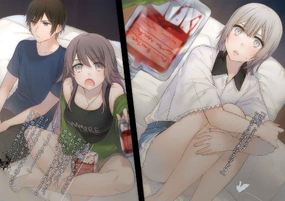
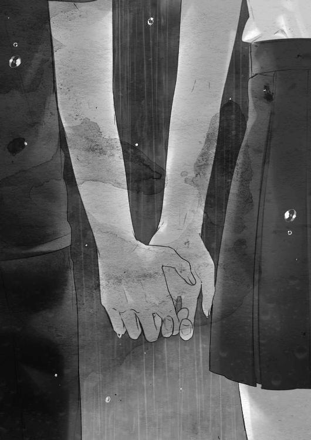

| ヴァンパイア・サマータイム (ファミ通文庫) | |
| 石川 博品 | |

本作品の全部または一部を無断で複製、転載、配信、送信したり、ホームページ上に転載することを禁止します。また、本作品の内容を無断で改変、改ざん等を行うことも禁止します。
本作品購入時にご承諾いただいた規約により、有償・無償にかかわらず本作品を第三者に譲渡することはできません。
本作品は本文縦組で制作されております。ごらんになるリーディングシステムにより、表示の差が認められることがあります。
一
長すぎた昼寝からさめて、窓の明るさに驚かされる。
店の明かりが暗い部屋に差しこんで、天井を空っぽのスクリーンに変えていた。
山森頼雅は一度上体を起こしかけて、ふたたびベッドの上で寝転がった。「もう起きなくては」という気持ちを「もうどうにでもなれ」というやけっぱちが屈服させた。
枕元の携帯を手に取る。時刻は午後七時半――学校から帰ってきてすぐ寝てしまったのだから、睡眠時間は約三時間。ということは就寝時刻が三時間うしろにずれることになる。起床時刻は学校があるため動かせないから、睡眠時間を三時間縮めるしかない。そうすると睡眠不足になり、明日も帰ってきてすぐ昼寝してしまって、遅く起きると夜眠れずに――考えがズルズルと駄目な方へ行ってしまう。
汗を吸って冷たくなった制服のワイシャツが不快だったが、自分にはそれがお似合いだとヨリマサは感じていた。どうせならどこまでも駄目になってしまいたかった。
だが、七時半だ。時刻は動かせないし、彼女はやってくる。
ヨリマサは起きあがって制服を脱ぎ、半袖シャツとチノパンに着替えた。部屋を出ると、薄暗い居間に夕食の仕度がしてあったが、それには手をつけず、玄関に向かう。寝ている父親を起こしてしまわないよう、自然と忍び足になる。
あがりかまちに腰かけてスニーカーを履いていると、家の中の静けさが背中にのしかかってきて、ヨリマサは立ちあがるのにすこし躊躇してしまった。心の弱っているのが自覚される。
（生活リズムも頭の中も、ズルズル駄目な方へ行ってしまうのは、引き留めてくれる人が誰もいないせいじゃないだろうか。きっとこの先、俺は際限なく駄目になっていくんだ）
我ながら甘えた考えだと思う。四六時中彼を見守っていてくれる人などいるわけがない。
外に出ると、涼しい夜だった。屋根のない外階段の手すりに昼間の雨のしずくが残っていた。階段をおり、隣のマンションの塀と店の狭いすきまを通る。ゴミ置き場のダンボールは雨粒の跡でまだら模様だ。
店の正面にまわると明るい。だが、昼間のようにというほどではない。
中に入るともっと明るい。ヨリマサは病院で浴びた光を思い出す。
小学生のころ、夜更かしの癖が直らなくて病院に連れていかれた。そこでの治療法は、強い光を浴びせて体をしっかり覚醒させるというものだった。医師の説明によると、ずれていた体内時計が光を浴びることでリセットされるのだという。目をつぶっていてもまぶたの裏が赤く明るかったのをヨリマサはおぼえている。
店内の照明はそのときの光にくらべれば暗い。現にその下で吸血鬼たちが平気な顔をして歩きまわっている。
ヘブンマート大内山駅前店は一日に二回あるピークタイムの内の二回目を迎えていた。京兆線の大内山駅を利用して出勤・登校する吸血鬼たちが立ち寄るためだ。ふたつあるレジの前に会計待ちの長い列ができている。
「おつかれさまでーす」
ヨリマサが声をかけても、レジについている彼の母親とアルバイトの大学生は顔をあげるだけで返事をしない。お金と商品のやり取りに忙殺されている。
このコンビニはヨリマサの両親が経営しているもので、昼間は彼の母親、深夜は父親が取り仕切っている。高校生になってからはヨリマサも店の手伝いをしてバイト代をもらっていた。といっても、タイムカードを押すような正規のアルバイトではなく、たまに出てきて品出しをやる程度である。
この時間はドリンクの補充を行う。店が混んでいるときでも客の邪魔にならない作業だ。
スイングドアを押し開けてバックヤードに入ると、左手がウォークイン冷蔵庫になっている。壁にかけてある防寒コートを羽織り、重たいドアを引き開けて気温二度の空間に足を踏み入れる。この時季は涼しくて気持ちいいが、油断していると冷えすぎて風邪を引く。
ヨリマサは軍手をはめて作業をはじめた。逆さにしたビールケースに乗ってドリンクの棚を上から下まで観察する。傾斜のついた棚板にはころが取りつけられていて、客が前から缶やペットボトルを取ると、転がってうしろから押し出されるようになっている。しかし、五〇〇ミリリットル入りのペットボトルは重い上にバランスが悪いので、前に進んでいなかったり途中で倒れていたりする。そうしたものがないかどうか、うしろから押して確かめる。それから、減っているものについては補充をする。
この作業が、というよりもこの場所にいるのがヨリマサは好きだった。
ふつうの冷房では実現できないくらいの涼しさだし、照明はオレンジ色のぼんやりとしたライトだけで薄暗いし、ダンボール箱だらけで自分ひとり用のスペースしかない。まるで幼いころ憧れた秘密基地のようだ。寝苦しい夜にはここに布団を敷いて眠ってみたいとさえ思う。
一番減っているのは今週発売されたばかりのペットボトル緑茶だった。在庫があるかと、うずたかく積まれたダンボール箱を調べるが、見当たらない。あとで母親にいって発注してもらわなければならない。その次に減っている定番の紅茶を補充することにする。あいにく紅茶の箱は積まれた中でもかなり下の方にあった。ひとつひとつ箱を持ちあげて山を崩していく。一箱に五〇〇ミリリットルのペットボトルが二十四本入っていて重い。じわりと汗をかいてすぐに冷える。
箱を開けて一本一本棚に置いていく。ころの上でぐずぐずしてなかなか前に進んでくれないので、イライラする。その点、三五〇ミリリットルの缶は重さと丈のバランスがよく、ころの上をすいすい流れていくので気持ちがいい。缶コーヒーはさらにすいすい行くが、一箱に入っている数が多すぎて、いつも棚に収まり切らない。
前面のガラス扉が開かれたので、ヨリマサは作業を中止した。店内からウォークインの中は見えない。簾の外から室内がのぞけないのと同じ理屈だ。棚板と棚板の間はドリンクで埋まっていて細いすきましかないし、店内とウォークインでは明るさに差がある。
見えないとはいえ、彼は自分が中にいるのを気取られたくなかった。客の立場で考えれば、中から見られているとわかったらあまりいい気はしないだろう。店内の有線放送がはっきりと聞こえる。彼は扉が閉まってひとりきりになるときがふたたび来るのをじっと待った。
この時間、来店するのはほとんどが吸血鬼の客だった。吸血鬼は見た目で判別できる。肌に血の気がなく、瞳の色が淡い。
夜の街を闊歩している者はほとんどが吸血鬼である。彼らは夜になると活動しはじめる。
一日の半分は夜で、地球の人口の半分は吸血鬼だ。よくできている、とヨリマサは思う。
太陽の下に出られない吸血鬼は、夜になると働いたり、学校に行ったりする。このコンビニでも深夜勤のアルバイトはみな吸血鬼だ。人間と吸血鬼が接することなく支えあって社会をまわしている。
最近よくテレビで見かけるハーフタレントは父親が吸血鬼で母親が人間だという。彼女は太陽の光を浴びても平気だが、彼女の父親は死んでしまう。彼女の披露する「吸血鬼あるある」はどちらかというと人間の視聴者に好評だった。彼らは吸血鬼の生態に関して無知である。ヨリマサも彼女のネタはめずらしくて面白いと思う。「友達を家に呼んだらいつも父が寝ているので無職だとかんちがいされた」というのはヨリマサにも当てはまる話だった。
吸血鬼が世界の半分を占めているという事実はヨリマサも知識として知っているが、彼らと触れあった経験はない。小学校でも中学校でも、クラスの名簿には吸血鬼も載っていたが、ヨリマサたちは昼、彼らは夜なので、教室で会うことはなかった。高校では募集の時点で昼間部と夜間部とに分かれている。学校生活の中で彼らの存在を意識することはほとんどない。
ドリンク棚の一番下の段にある大きなペットボトルは、あまり売れないためにその存在が忘れられている。割高なので、コンビニよりもスーパーなどで買う人が多いのだ。ヨリマサがかがみこんで最下段をのぞいてみると、二リットルの麦茶が残り一本になっていた。補充する機会もすくないので、在庫は山の一番奥にあった。この手のドリンクの箱は重い。ボトル一本一本も重くて、手で押し出してやらないところの力では進んでいってくれない。棚が低いところにあるので、作業は窮屈な姿勢ですることになる。土下座するようなかっこうでボトルを押しこんでいると、ガラス扉の向こうにやってきた客の足だけが見えた。紺のソックスに見おぼえのあるワンポイントの刺繡が入っている。
はっとしてヨリマサは床から起きあがった。
いつもの彼女がドリンク棚の向こう側に立っていた。
ヨリマサと同じ蓮華大学付属高校の制服を着た彼女は、いつもこの時間に来店してドリンクコーナーの前に立つ。そのことにヨリマサが気づいたのは四月のことだった。以来、第二のピークタイムに店を手伝いに来て彼女と会うのを日課にしている。
ドリンクコーナーに来る他の客がせかせかガラス扉を開けて商品を取っていくのに対して、彼女はガラス扉の前で腕を組み、しばらく棚全体を眺めるのが常だった。
ドリンクの新製品でもさがしているのだろうか、とヨリマサは考える。だが、新しいものが毎日発売されるわけでもない。それに、長考のあげく彼女が買っていくのは決まって定番のストレートティーなのだ。
この日も彼女はガラス扉からすこし離れて立ち、腕組みをして、真剣な表情でドリンクコーナーを見つめていた。インスタントコーヒーなどが置いてある向かいの棚が彼女の体ですっかり隠れてしまっていて、その棚に用がある客の迷惑になりそうだった。スーツを着た中年の男がガラス扉を開けようとして彼女の視線に気づき、恐縮したように頭をさげてそそくさと缶コーヒー二本を取っていった。
同じ学校だが、夜間部の生徒であることにまちがいはない。顔も腕も、短いスカートから伸びる脚も、髪が短いためにすっかりのぞいている首筋も、抜けるように白い。こちらに向けられる瞳は灰色で、ミステリアスな輝きを帯びている。
彼女は吸血鬼だ。
めずらしくもない。
吸血鬼は別にめずらしくなかった。日本だけでも約六千万人いる。ヨリマサの高校は昼間部百八十人夜間部百八十人。石を投げれば吸血鬼に当たる――暗くなってからならば。
彼女がガラス扉を引き開けた。ウォークインの冷気が流れ出るのを感じる。彼女の周囲とヨリマサの周囲と、空気が混じりあい、ひとつになる。彼女が手を伸ばしてペットボトルを一本取る。その手がヨリマサのいるところまで届くことはない。
甘ったるい声の男の甘ったるい歌が聞こえる。ヨリマサの息を呑む音さえ彼女に聞かれてしまいそうだった。
彼女の行動を本来なら見られない角度から見ている――ヨリマサの胸を高鳴らせているのは、そんな背徳的な悦びだけではなかった。
ストレートティーの列が先頭のものの抜けた穴を埋めるべく、ことりと音を立てて前進をはじめた。
期末試験が間近い。
六時間目が終わると、ヨリマサは同じクラスの友人二人と学校近くのファミレスに寄った。名目は試験勉強のためということだったが、ドリンクバーで一息吐き、それからおしゃべりをしてしまう。
学校ではクラスメイトの耳があってできない話もあり、ファミレスでは周囲の耳もあってはばかられるトークテーマがある。そのふたつの要素の混ざり具合で、いつもとちがった新鮮な会話が楽しめた。
それぞれ二杯目のドリンクも空になるころ、ようやく勉強を開始する。
三井清輔が鞄の中から主要教科の過去問を取り出し、テーブルの上にひろげた。
「ほら、おまえらの分。もうコピーしてあるから」
「おおサンキュー、キヨ」
ヨリマサが手に取ると、ずっしり重かった。これをすべてこなせばそれだけで試験勉強が済んでしまうほどの量だ。
「すごいよね、サッカー部って」
弥与野光が過去問のプリントを一枚一枚確かめながら、濡らしてしまわぬようグラスを遠ざける。「情報収集能力が高い。アホの集団のくせして」
「アホの集団だからこういうのキチッとやるんだよ......って誰がアホの集団だ」
三井は身を乗り出して弥与野にツッコミを入れるふりをした。弥与野は笑いながら椅子の上でおおげさに体を丸めた。彼女の両ひざがテーブルの向こうに並び、その奥が見えそうになったので、ヨリマサはさりげなく目を逸らした。
弥与野と三井はすでにつきあっているといううわさがあった。一年生のときから弥与野は何人もの同学年や先輩に告白されてフっていたが、それは彼氏である三井の存在があるからだという。
ヨリマサは彼らと入学時に席が近かったために親しくなり、二年生になったいまでも同じクラスで大の仲良しだが、ふたりがつきあっているのかどうか、はっきりしたことはわからなかった。
ただ、つきあっていてもおかしくはないと思う。休み時間にはいつもふたりでじゃれあっているのを目にする。春休みにふたりきりで映画に行ったことも知っている。もっとも、それはヨリマサを含めて三人で行く予定だったのにヨリマサが寝すごしてしまったため、そういう形になったのだったが。
「俺、ドリンクおかわり取ってくる」
ヨリマサはグラスを手に立ちあがった。「キヨおまえ、おかわりいる？」
三井は氷と水だけになったグラスに目をやった。
「俺はまだいいや」
「あ、私、オレンジジュース」
弥与野が残っていたジュースをストローで急いで吸い、グラスをヨリマサに差し出した。
ドリンクコーナーから席の方をふりかえってみると、弥与野と三井が楽しそうにしゃべっている。
ふたりが実際につきあっていても驚かないが、自分に気を遣って秘密にしているのだとしたら何となく嫌だとヨリマサは思った。いっそ直接うわさの真偽をきいてみたいところだ。だが、やはりそれも気が引けて、結局「お待たせ～」などといいながらいつもの居心地いい三人の関係にもどってしまうのだった。
勉強半分おしゃべり半分で暗くなるまでかかってしまった。ダラダラと長居して、腹が減ったのでそのまま夕食を摂り、店を出たのが午後八時をまわったころだった。
ヨリマサはしゃべりすぎたせいか、それともグレープフルーツジュースばかり飲んだせいか、喉がいがらっぽかった。三人の妙にしわがれた声がすっかり日の落ちた空に響いた。
駅に向かって歩いている内、通学路に合流した。ちょうど夜間部の生徒が登校してくる時間で、蓮大付属の制服を着た男女が道を埋めつくしていた。逆方向に進むヨリマサたちは道の端を縦一列になって歩いた。淡い色の目が一斉に自分たちへと向けられると感じてヨリマサは恥ずかしくなった。まわりが吸血鬼でなくても、人の流れに逆らうのは人目を引く。
「私、夜間部はじめて見た」
弥与野が肩にかけた鞄を体の前で抱えた。
「俺はたまに見る」
三井は弥与野の前を守るようにして歩いていた。「部活でしゃべってたりして遅くなったら、こんな感じでラッシュに巻きこまれるんだ」
大通りの横断歩道を渡っていると、信号が点滅しはじめた。ヨリマサは車道中央の島で止まろうかと思ったが、弥与野と三井が対岸目指して駆け出したのを見て、鞄を肩にかけなおした。
その彼の前に立ちはだかる者があった。
「あれっ？」
声をあげたのは彼女の方だった。
いつもの彼女が笑顔を浮かべて彼を見おろしていた。
ドリンク棚を挟んでいるのよりはるかに近い距離から見ると、彼女は彼よりすこし背が高かった。棚板で分断されていないためか、脚がすらりと長く、背筋がぴんと伸びて見える。
「大内山のヘブンで働いてる人ですよね？」
彼女がいう、その背後で自動車が走りはじめる。信号は赤に変わっていた。
「え......ああ、そうです」
ヨリマサは弥与野と三井の姿をさがしたが、どこにも見当たらなかった。「あ、あの......いつもお買いあげありがとうございます」
「やっぱり！ 私のこと、わかるんですね」
彼女は肩にかけていた学校指定のスポーツバッグを振りまわすようにして反対の肩に移した。
「ええ、まあ......蓮大付属の制服だなって」
ヨリマサたちのまわりをごうごうと音を立てて車が流れていった。こんな街の中の、こんな騒がしい中でふたりきりなのが不思議だった。
彼女は周囲に気を取られる様子もなく、まっすぐにヨリマサを見つめていた。
「同じ学校だったんですね」
「そう......ですね」
「いつも冷蔵庫の中で何やってるんですか」
「あれは商品の補充を......」
「そうなんですか。でも、全然動いてなかったから、私、何してんだろうってずっと思ってて」
「お客さんがいるときはじっとしてます」
「地縛霊とかだったらどうしようって思って、すごく怖かったんですよ。だから、じっと見ちゃった」
「ハハハ」
吸血鬼も幽霊が怖いのだと知っておかしかった。が、もっと恐ろしいことにヨリマサは気づいてしまった。
（あれ......？ いま、この人......）
「あの～......僕のこと、見えてたんですか？」
「見えてますよ」
「ええっ？」
「吸血鬼は暗いとこでもよく見えるんです」
彼女は灰色の瞳を指差し、ほほえんだ。
「ウソォ......」
ヨリマサは車の濁流に身投げしたくなった。ひとりきりだと思って気の抜けた顔をしていたのも、彼女のことをこっそりのぞいていたのも、すべて見られていたのだ。
「冬みたいなかっこして立ってるから、きっとあの中は寒いんだろうなあって――」
「うわあ、スゲー恥ずかしい！ 見られてないと思ってたのに！」
きまり悪さのあまりにここから消えてしまいたかったが、信号はいつにも増して意地悪く歩行者を足止めし続ける。
だが、奇妙なことにヨリマサの中には、恥ずかしさとともに報われたという思いが生じていた。
ひとりきりだと思っていたのに、ひとりじゃなかった。誰とも分かちあえないと信じていた時間が誰かと共有されていた。
彼女は優しい、と根拠もなく思った。
「おうちはあのへんなんですか？」
「あのへんっていうか、あの上です」
「上？」
「あのコンビニ、うちの親がやってるんです。で、二階が家です」
「へえ」
「あの......家、あの近所ですか？」
「私は二丁目です」
ヨリマサの家は大内山一丁目だった。二丁目の方が駅から遠いが、それでも最寄り駅は大内山駅になる。
「何年生ですか」
「僕は二年です」
「あー、私も二年です。えっ、クラスは？」
「Ａ組です」
「えー、私もＡです。教室はあそこですよね、階段のぼってすぐのとこの――」
「そうです。まあ、昼と夜とで看板換えないと思うんで」
「カンバン......そうですね」
彼女は笑った。「わー、何かすごい。すごい奇遇ですね」
彼女は体が大きいのに、ヨリマサのクラスの小柄な女子のようにぴょんぴょん飛び跳ねて感情を表現する。
「私、冴原っていいます」
「僕は山森です」
「山森くん......」
彼女は嚙みしめるようにヨリマサの姓を口にした。
横断歩道の脇に自動車が行儀よく整列していた。ヘッドライトで歩行者の足元を照らす仕事をしているかのようだった。
ヨリマサの背後に目をやり、彼女は気まずそうにまばたきをくりかえした。
彼女が立ち去るきっかけをさがしていることにヨリマサは気づいた。彼女はこれから学校だ。ヨリマサは家に帰るだけ――時間に余裕のある彼が急いでいる彼女に気を遣わせてしまっている。
「じゃあ、また。どこかで」
ヨリマサが別れを切り出すと、彼女はぱっと表情を明るくし、
「フフッ、またどこかで」
そういって歩き出した。
唐突で長かった会話が途絶え、ヨリマサは自分がどこにいるのかすら忘れた。彼女と別れたのだから彼女とは反対の方角に進むべきだろうと考え、かろうじて帰り道をはずれずに済んだ。
偶然が重なってふたりの共通点が見つかるたびに悲しくなった。どんなに近づいても、会えるのはドリンク棚を挟んだり、信号が変わるまでだったり。彼女は夜、ヨリマサは昼――ふたりは別の時間を生きる。
横断歩道を渡り切ったところで、信号の柱の陰に隠れていた弥与野と三井につかまった。ワイシャツの袖や肩をつかまれ、揺さぶられる。
「ねえ、だいじょうぶ？」
「嚙まれたりしてねーか？」
ふたりの心配があまりに的はずれなので、ヨリマサは笑ってしまった。
「俺、おまえのことマジで助けに行こうとしたんだぜ？ 『ツレに手ェ出しやがったら俺の拳が火ィ吹くぜ』っつって。弥与野が止めなきゃマジで行ってた」
「止めてないし。ていうかキヨ、『何なんだあのモデル系美女は。彼女か？ 彼女か？』ってずーっといってたじゃん」
「ただのお客さんだよ。うちの店によく来るんだ」
ヨリマサは友人たちの肩を押して歩き出した。
そう、彼女はお客さんだ。特別じゃない。たくさんいる内の一人――
そこでヨリマサは恐ろしいことに気づいてしまった。
（あれ......？ 「吸血鬼は暗いとこでもよく見える」ってことは......他のお客さんも見えてるってこと？ 夜来る人、みんな俺のこと見えてた？ うわ、恥ずかしい！ じっとしてたの意味ねーじゃん！）
「あ～......もうやだ俺......」
ヨリマサは頭を抱えてその場にしゃがみこんだ。
「おい、どうした」
「ホントだいじょうぶ？」
友人たちが肩に手を置き、顔をのぞきこんでくる。
吸血鬼に嚙まれた者が吸血鬼になるように、恥ずかしい思いをしている者に嚙まれたものも恥ずかしさが伝染して恥ずかしくなってしまえばいいのに、とヨリマサは歯を食いしばりながらおかしな願望を抱いていた。
二
天井近くの明かり採りに雨粒が絶え間なく当たっている。
朝から雨で、学校の廊下はいつも以上に混雑していた。
ヨリマサは登校すると、ロッカーに直行した。学校に置きっぱなしの教科書やノートはすべてロッカーに入れてある。夜間部も同じ教室を使うので、机の中にものを置いておくわけにはいかない。泥棒扱いしているわけではないが、何かなくなったらやはり彼らを疑ってしまうだろう。
廊下に並ぶロッカーは外壁側が昼間部のもので、夜間部は教室側の列を使っている。ヨリマサはふりかえって背後のロッカーを眺めた。
この中に彼女――冴原のロッカーもある。
車道の真ん中でふいにことばを交わしたあの夜の面影が眼前を去らなかった。夜空の下は店の中よりはるかに暗いはずなのに、かつてないほど彼女の顔がはっきり見えた。吸血鬼は夜目が利くそうだが、自分にもその力があると思った。
「よお」
三井がやってきてヨリマサの体の下でしゃがみこむ。彼のロッカーはヨリマサのそれの下段にあった。
教室に入ると、人だかりがしていた。教卓近くにクラス中の女子たちが寄り集まっている。
「何だ、あれ」
ヨリマサは一番廊下側で一番うしろの机に荷物をのせた。背は大きくないのに、視力がいいというのでこの席にまわされたのであった。
「転校生でも来たとか？ んなわけねーか」
三井の席はヨリマサのひとつ前だ。
女子の群れの中に弥与野の姿があった。彼女は早耳というかおっちょこちょいというか、とにかくこうした騒ぎにいち早く加わっていることが多かった。
三井が彼女を手招きし、何があったのかを聞き出す。
「それがさあ......脅迫状だって」
弥与野は相手が軽い好奇心から質問したことを咎め立てするような険しい表情で答えた。それがかえっておかしくて、ヨリマサと三井は顔を見あわせ、笑った。
「脅迫状？」
「何だそりゃ」
弥与野は女子たちの方を一度ふりかえり、声をひそめる。
「明峯が朝来たら机の中に封筒が入ってて、中を見たら脅迫状だったんだって」
明峯里子はクラスの中でもとりわけ目立たない生徒だ。ヨリマサはまだ一度もことばを交わしたことがない。いつも二、三人の女子とこそこそ何かを話していて、同じクラスなのに別の世界に住んでいるような印象を受ける。
「脅迫ってどんなこと書いてあったんだ？」
三井が自分の机に腰かけ、脚を組む。
「それがさあ――」
弥与野は指でふたりに耳を寄せるよう合図した。「『おまえの血を吸いつくしてやる』って」
「血......？」
ずいぶんとおおげさな文句なので、ヨリマサは面食らってしまった。
「それって完全に吸血鬼じゃん」
三井が気の抜けたような笑いを漏らした。
吸血鬼が人の肌に牙を立てて血を吸うことは法律で禁じられている。そのような形で血を吸われた者は吸血鬼になってしまうからだ。人間から吸血鬼になると、それまでの生活をがらりと変えなくてはならず、社会的リスクが大きい。人を吸血鬼にしてしまった場合、その犯人には人を殺したのと同じくらい重い刑が科せられる。それでも吸血事件はすくなからず発生していた。
「教室の机に入ってたってことは、夜間部のしわざかもね」
弥与野は腕を組み、肩をすくめた。
同じ教室を使っているというだけで他には何のつながりもなかった夜間部のことを話題にしているのがヨリマサには不思議だった。冴原が昼の世界と夜の世界を結びつけたのだと思った。通学路の横断歩道で出会ったあの日からすべてが変わってしまった。
「そういやあさ――」
三井がヨリマサをひじでつつく。「この間の子、夜間部の二‐Ａだっていってたよな」
「え？ あ、ああ......」
ヨリマサはいま冴原について考えていたことを見透かされたような気がして、すこし動揺してしまった。
「何か知らないか、きいてみたら？」
「ああ、うん......そうだな。今度会ったらきいてみるわ」
弥与野が腕を組んだまま迫ってくる。
「明峯ホントに怖がってるからさ。助けてあげてよ」
「うん......まあ、今度会ったらな」
自分でも不自然に感じるほど「今度会ったら」を強調しておいて、ヨリマサは席に着いた。渦中の明峯に目をやると、女子たちの体のすきまから垣間見える彼女の顔はまるでもう血を吸いつくされてしまったみたいに青白かった。
ヨリマサはさりげなく机の中を手でさぐり、空なのを確認してほっとため息を吐いた。
冴原にいわれたことのせいで、ウォークイン冷蔵庫というものに親しみが持てなくなった。
中で作業をしていると、動物園の檻に入っているような気分になる。見世物になるのはしゃくなので、ガラス扉の外を人が通るときにはしゃがみこんだり背中を向けたりするようにしていた。
雨が降って気温が低いせいか、ドリンクの売れ行きがあまりよくない。
店の売上は特に心配でもなかったが、ヨリマサはこれからやることについて考えると気が重かった。
冴原に話しかけなくてはならない。
彼女は背が高くて姿勢がよくてドリンク棚をにらみつけているときの目つきからしていかにも気が強そうでおまけに吸血鬼で、ヨリマサにとって声をかけづらいタイプの女子である。
しかも、話題は脅迫状のことだ。楽しく話せるテーマではない。彼女に嫌がられはしないだろうか。
実際に話してみなければわからないことだ。だったら会うときまで待つしかない――わかっているが、焦れてくる。悪いイメージや無根拠な自信で頭がいっぱいになる。
ヨリマサの夜更かし癖はこうしたところにも原因があった。考えごとをはじめると、それにとらわれて眠気を見失ってしまうのだ。もっとも、この日はそのおかげで帰宅してから昼寝してしまうことを免れた。これなら夜はいつもより早く眠りに就ける。
冴原はいつもと同じ時刻に来店してドリンク棚の前に立った。
ガラス扉の向こうからヨリマサに手を振ってくる。はじめて会話した日以来、ずっとそうであった。
ヨリマサは潰しかけのダンボール箱を取り落とした。
「あ、あの......冴原さん」
彼女が扉を開けるタイミングで声をかける。
「はい、何ですか？」
紅茶のペットボトルがひとつ分前進してことりと音を立てた。
棚板のすきまから灰色の瞳が見つめている。
密室内の冷気が彼女の側に引き寄せられていく。
「ちょっと話があるんですけど」
「話？」
「えっと......いまからそっち行きます」
ヨリマサは冷蔵庫から出て扉をしっかりロックした。中の電気を消し、スイングドアを押して店内に出る。
「わっ、びっくりした！」
冴原がのけぞり、大声をあげた。その拍子に鋭い犬歯がのぞいた。血を吸うのに使う牙だ。
「ここから出てくるんだ......。知らなかった」
彼女はため息をひとつ吐き、それからわずかにほほえんだ。
別の客がドリンクコーナーの扉を開けたので、彼女は大股に踏み退いてヨリマサのそばに寄った。ひじの内側にひっかけた長くて黒い傘がなまなましく濡れている。
「話って何ですか？」
「ちょっと長くなるんで、歩きながら話しませんか」
ヨリマサは「大内山駅まで」ということを示すつもりでふわふわと外の方を指差した。
「わかりました。じゃあ私、お金払ってきます」
冴原は紅茶のペットボトルを掲げ、踵を返した。
彼女がレジの前に並んでいる間に、ヨリマサは「ちょっと出てきます」と母に告げて店を出た。冴原といっしょであることは見られずに済んだ。
軒もないヘブンマートの店先を雨粒がたたいていた。暗い空から落ちる雨は昼間より勢いを増したように感じられる。
店の明かりを避けるように立っていた彼の頭上に傘が差しかけられた。
「傘持ってないんですか？」
冴原がすぐそばに立っていた。
ヨリマサは反射的に一歩離れた。さっきまでドリンク棚を挟んで見つめているのが限度だったのに、いきなりこれでは距離が近すぎると思った。
「これくらいの雨なら傘なくてもだいじょうぶです」
「でも、濡れちゃいますよ」
冴原が傘を持つ手を伸ばしてくる。その傘の端からしずくが落ちて彼女の髪に吸いこまれていったのをヨリマサは見た。ショートヘアが彼女の明るい雰囲気とはっきりした顔立ちによく似合っていた。
「いや、本当にだいじょうぶです」
「私の傘大きいから、いっしょに入れますよ」
彼女は腰をひねり、肩からかけているスポーツバッグを彼に示した。「鞄が大きいから、濡れないように傘も大きいのにしてるんです」
重ねて勧めてくるので、ヨリマサは断り続けるのも悪い気がしてきた。
「じゃあ......お願いします」
頭をさげて傘の下に入る。冴原は満足げに笑って歩き出した。
彼女のいうとおり、確かに大きな傘だったが、二人で入るとやはり狭かった。雨を避けるとどうしても彼女とくっついてしまう。
入れてもらっているのだからせめてこちらが傘を持つべきではないかとヨリマサは思ったが、自分より背の高い彼女に差しかけるとなると腕をぶかっこうにあげなければならなくなるので、恥ずかしくていい出せなかった。
冷蔵庫の中にずっといたせいか、外気は蒸し暑く感じられた。大内山駅へと続く商店街は、炭火焼きの煙や酒の香が漂っていて、一日の終わりをにおわせていたが、吸血鬼たちにとってはいまが一日のはじまりで、みな張り切ったような足取りで、あるいは眠たそうな面持ちで歩いていた。
「それで、話って？」
「ああ、そうそう――」
ヨリマサは今朝起こった脅迫事件について語って聞かせた。「脅迫状......？」
冴原が眉間にしわを寄せた。
「そうなんです。明峯ってやつの机にそういうのが入ってたって。それでまあ、『血を吸う』っていってんだから、吸血鬼かなあって」
ヨリマサとすれば「うちの学校のおもしろハプニング」という感じで話したつもりだったのだが、冴原は真剣な表情で聞いていた。
「その明峯さんに何か心当たりは？ 人に恨まれるようなこととか」
「えっ？ そういうのはちょっと......明峯とは話してないし」
「じゃあ、被害者の顔写真と、その手紙の写真を――」
「いや、そういうのもない......」
「使えないなあ」
突然強い口調でいわれたので、ヨリマサは面食らってしまった。
「えっ......？」
「証言もない証拠もないで、よく調査依頼しようと思ったね」
冴原が唇をとがらせる。
「あ、うん......ごめん」
ヨリマサはこれまでの彼女との会話に「調査依頼」というキーワードが含まれていただろうかと頭の中で検索をかけた。
「まあ、いちおう調べてみるけど。乗りかかった船だから」
冴原は膨れっ面のまま何やら鞄の中をさぐりはじめた。
「う、うん、よろしく......お願いします」
ヨリマサは、そもそもいつから探偵と依頼人の関係になってしまったのだろうかと考えていた。
「とりあえず何かわかったら知らせるから。山森くんのアドレスと番号教えて」
そういって冴原は携帯を取り出した。
（あっ、スマホ......）
ヨリマサはチノパンのポケットから折りたたみ式の携帯をひっぱり出し、いつもの癖で液晶画面を袖口にこすりつけた。思いのほかに何の抵抗もなく、するりと滑る。
そのときはじめて、冷蔵庫用の防寒コートを着たまま来ていたことに気がついた。
「あっ、これ脱いでくんの忘れた！」
彼はあわててコートを脱いだ。中のライナーがじっとり湿るほどに汗をかいていた。
「ああ、それ脱ぐんだったのね。ずっと着てなきゃいけないルールなのかと思った」
冴原は携帯を持つ手で口を覆い、笑った。ヨリマサは恥ずかしさでいっそう汗が吹き出た。
「山森くん、下の名前何ていうの？」
「ヨリマサ」
「ヨリマサかあ......」
冴原は傘の内側を見あげ、目を細めた。「かっこいい名前だね。どういう字書くの？」
「頼るに雅で頼雅」
「へえ。今度からヨリマサって呼んでいい？」
「いいよ。友達からはそう呼ばれる。冴原さんは？」
「アヤメ。冴原アヤメ」
「どういう字？」
「いとへんの綾にくさかんむりの萌えるっていう字。それで綾萌」
「へえ。今度からアヤモエって呼んでいい？」
「駄目だよ！」
冴原は牙を剝いた。「何だよ、そのあだ名」
「......じゃあ冴原で」
「うん、そうして。友達からもそう呼ばれてるし」
ふたりはメールアドレスと電話番号を交換した。
大内山駅構内のアナウンスが聞こえる。駅周辺の光景は朝とまるっきり同じだった。ちがうのは太陽の光がないことだけだ。
ふたりは駅正面の赤信号につかまってしまった。話すことがもうないのでヨリマサは帰ってもよかったのだが、まわりでたくさんの人が信号待ちをしていて、その人たちや重なる傘をかきわけて立ち去るのはおおげさすぎることのように思った。
「すごい素朴な疑問なんだけど――」
「何？」
冴原はヨリマサを見た。傘の下でもその灰色の目は明るかった。
ヨリマサはまわりにいる吸血鬼たちの目を気にして声をひそめた。
「血ってさ、やっぱ吸いたくなるの？」
「うーん......私はならないかな」
冴原が首を傾げると傘もいっしょに傾いだ。
「あっ、そうなんだ」
「でも、月に一度、栄養補給で吸う。こういう――」
そういって指で虚空に四角形を描く。「輸血用みたいな血液パックから」
「へえ。うちの店にはそういうの置いてないな」
「そうだね」
冴原は笑い出した。「売ってるのは薬局とかだね。そういうとこでしか売っちゃいけないって法律で決まってる」
「それってみんな吸ってるの？」
「たぶんね。だけど、公共の場で吸うのは禁止。人が見たら嫌な気持ちになるでしょ？」
吸血鬼に関して知らないことがヨリマサにはたくさんあった。こんな近くで吸血鬼と話すこともこれまで経験のないことだったのだ。
大内山駅は線路にかかる橋の上に改札口がある。利用客が階段に吸いこまれていく。バスが停まり、車が通りすぎていく。電車の窓から漏れる光が道路にだんだら模様を流す。
「じゃあ、学校で脅迫状のこと調べておくから」
冴原が階段をのぼりかけ、ふりかえった。明るい階段の下で彼女は光を背負ってシルエットと化した。
「まあよろしく」
ヨリマサは地上に立っていた。電車に乗らないのに階段をのぼるのはおかしい気がした。
「傘どうする？ まだ雨降ってるよ？」
冴原はスポーツバッグを担ぎなおした。何が入っているのやら、重たそうな音がした。
「いいよ。これかぶってく」
ヨリマサが頭から防寒コートをかぶってみせると、彼女はくすりと笑った。
「じゃあね。お仕事がんばって」
「そっちも勉強がんばって」
手を振り、来た道をもどる。
人の流れに逆らってヨリマサはぐいぐいと歩いた。働きたい気分だった。脅迫のことはこれから一日がはじまる人の手にあって、そのことはまるで地球の裏側のできごとであるかのように感じられた。
二‐Ａの教室に入ると、影宮供子が机に突っ伏して眠っていた。
「寝てる場合かっ」
その頭をぴしゃりとたたき、冴原綾萌はひとつうしろの席に腰をおろした。
影宮がのっそり体を起こし、頭をさする。
「痛ってえなあ......何だっつーのよ、朝っぱらから」
日本の半分が吸血鬼でも、日本語がふたつに分かれるわけではない。彼らにとっても早い時間を表すことばは「朝っぱら」だった。
影宮は自称ロングスリーパーである。休みの日には十五時間も眠るという。授業中も居眠りばかりだが、なぜか成績はクラスで一番いい。「寝る子は育つ」というが、彼女は冴原より十センチ以上背が低かった。一方で胸囲は十センチ以上影宮が大きい。色々な意味で凸凹コンビのふたりは親友と呼べる仲だった。
「事件だよ事件。この教室で」
冴原はヨリマサから聞いた事件のあらましを語った。
彼女は怒っていた――昼間の人間を「血を吸ってやる」と脅すなんて吸血鬼の風上にも置けない。そんなことをするから他の者まで昼間の人間に疎まれる。
血を吸って相手を吸血鬼にするなどというのは過去の話だった。吸血鬼の数を増やしたいのなら、吸血鬼どうし結婚して子どもを産めばよい。吸血鬼と昼間の人間という組みあわせだと、昼間の人間が産まれる。近ごろ話題のハーフタレントもそのパターンだが、冴原は彼女のことがあまり好きではなかった。確かに吸血鬼と人間のハーフはめずらしいが、「吸血鬼あるある」と称して当たり前のことをしゃべるだけで芸がない。冴原にはどこがおもしろいのかさっぱりわからなかった。昼間の人間は吸血鬼のことを何も知らないのだなあと思う。化け物か何かとかんちがいしているのだ。ただ闇に暮らし、たまに血を吸うだけなのに。
だから、脅迫状の犯人が許せなかった。これ以上吸血鬼のイメージが悪くならないよう、自分が事件を解決するのだと心に誓っていた。
影宮は顔をしかめ、目をこすりながら冴原の話を聞いていた。
「あー、ごめん。私、犯人わかっちゃった」
「マジで？」
「犯人は冴原。動機は事件を起こしてコンビニの男の気を惹きたかったから。八百屋お七と同じ理屈ね。はい、これで解決。めでたしめでたし」
「ハァ？ 何よそれ」
冴原は声を荒らげた。「いつも行くコンビニのドリンクコーナーの向こうにいつも同じ人がいる」という話をして以来、こうして影宮にからかわれ続けていた。気を惹くなんてことは考えたことがなかった。彼はいつだって考えごとをしているふうで、まわりのことに気を取られることなどなさそうに見えた。
「まじめに考えてよ。ホントに困ってる人がいるんだからさ」
「わかったわかった」
影宮は椅子の背もたれに頰杖突いた。「脅迫状かあ......小学校のときにそういうのあったなあ」
「へえ」
「クラス一勉強できる男子の家に夜中電話がかかってきてさあ、『おまえなんか死んじまえ』って。それが朝まで何回も続くんだよ」
「うわあ、ひどいねえ」
「で、結局犯人をつかまえてみるとクラスで二番のやつでさ、動機をたずねたら、『出来杉くんがいる限り、僕はどうしても一番になれない。くやしくて......』って――」
「出来杉っていっちゃってんじゃん！ 私もその話読んだことあるわ」
影宮の話をまともに受け取ると損をする。それを自分だけがうまくあしらえるというのが冴原のひそかな自慢であった。
「で、どうすんの？ 冴原が事件を解決すんの？」
影宮は牙を剝いて大あくびした。
「とりあえず調査だね」
冴原は携帯を取り出し、メモしておいたものを表示させた。「脅迫状の入っていた机は、廊下側から三列目の前からふたつ目......あれかあ」
「暗田のとこじゃん」
暗田正人が問題の席に着き、背中を丸めて本を読んでいた。彼は生徒会の副会長を務めるまじめな男子だった。ただ、生徒会の方が本業だとでもいうように、この二年Ａ組の教室では誰ともうちとけてしゃべることがなかった。冴原にも彼とことばを交わした記憶がない。
「一応、話聞いてみよう」
冴原は影宮を連れて暗田のもとへ赴いた。
夜間部の教室は暗い。天井の照明が半分しか点けられていないためだ。開け放たれた窓から月明かり星明かりが差しこんでくる。吸血鬼にはそれだけの光で充分だった。
昼間の教室がどれほど明るいものか、冴原は知らない。写真やテレビなどで見たことはあるが、そのまぶしさ、その暖かさを肌で感じたことはなかった。もし本当に日光を浴びたら、体は灼け、灰になってしまう。考えるだに恐ろしい。
いままで昼間部のことなんて気にも留めなかったのに、このところなぜか心にひっかかっている。あのヨリマサと知りあって以来のことだった。
「ねえ、ちょっといい？」
冴原が声をかけると、
「何？」
暗田は顔をあげ、中身を隠すようなしぐさで文庫本を閉じた。その目が影宮の豊満なバストに一瞬引き寄せられるのを冴原は見た。
「あのさあ、明峯里子って名前に心当たりない？」
「えっ？」
彼の表情が一瞬弛緩したように見えた。「知らないなあ」
「昼間部の人なんだけど」
「知らない。聞いたことない」
「最近、人の血を吸ってやろうって思ったことある？」
「あるわけないだろ。そんなの犯罪じゃん」
「だよね」
読書の邪魔をしてしまったことに対して詫びを入れ、冴原は席にもどった。
「ウソはいってないみたいだね」
「なんでわかんのよ」
影宮がいぶかしげな顔をする。
冴原にはむかしから顔を見ただけでその人がウソをついているかどうか見抜けるという特技があった。何となく雰囲気でわかるのだ。例外は影宮だけで、きっと天才的なウソつきか虚構と現実の区別がついていないか、どちらかだろうと冴原は踏んでいた。
彼女は探偵らしくあごに手を添えて思案してみせた。
「暗田が犯人じゃないとすると......逆に暗田が被害者とか？ 犯人は暗田の血を吸うつもりだった！」
「うえ～、やめてよ～」
影宮が顔をしかめる。吸血鬼が吸血鬼の血を吸うことは、彼らにとって人肉食なみの禁忌である。
「うーん、わからん。事件は迷宮入りだな」
「早っ！ どんだけ近場の迷宮よ」
冴原は調査結果をヨリマサにメールで知らせることにした。昼間の人間が何時まで起きているものなのかはわからなかったが、さっき会ったばかりなのだし、まだ寝てはいないだろう。
「あ、例のカレにメール？」
影宮が身を乗り出して携帯をのぞこうとする。
「いや、まあ、別に......」
「いいなあ、昼間の男。おいしそうだなあ」
影宮が舌なめずりをしながら遠い目をする。おいしそうということばに反応したのか、暗田が彼女たちの方を横目で見ていた。
「な～に見てんだよ、暗田コノヤロウ」
影宮のいいがかりに、
「そっちが見てたんじゃん」
暗田はややひるんだような表情を浮かべて読書にもどった。
影宮は腕を組み、鼻息をひとつ吐く。
「もうあいつが犯人でいいよ。この前、掲示板に停学の張り紙あったでしょ？ 二年の男子がトイレでパックの血を吸ってて停学二週間ってやつ。あれ、暗田がチクったんだってさ。チクリなんて卑怯で汚くて最低の行いだよ。きっと根の暗いいや～なやつなんだ、暗田って」
「それは......学校で血を吸ってる方が悪いんじゃないの？」
冴原はいま書いているメールをヨリマサがどんな顔して読むだろうかと考えていた。棚いっぱいに並んだ飲み物のすきまから垣間見える、眉根を寄せて唇を引き結んだあのすこし寂しげな表情が目に浮かぶようだった。
三
昨夜もまた眠れなかった。
ヨリマサは重たい頭を抱えて登校した。
寝不足もさることながら、寝つけずにベッドの中ですごす時間の長さが彼を疲労困憊させていた。早く眠らなくてはと焦り、そのせいでかえって目が冴えてしまう。枕元の携帯を取り、時刻を何度も確認した。そうしている間に冴原からメールが来ればいいと思った。彼を除いたみなが意識を失い、活動を止めているその時間に、彼女は歩き、しゃべり、笑っている。眠らなくともよいのだと彼女にいってほしかった。
しかし、彼女からのメールは午後八時二十五分に一度来たきりだった。
朝、教室の席に着き、脅迫事件について思いをめぐらせる。明峯の席には夜になれば暗田という男が座る。彼は明峯のことを知らないといっている。知らないで脅迫状を机に入れたとしたらどうだろう。民間の人間を無差別に狙った犯行だ。明峯が被害にあったのはたまたまで、犯人も同じ席の暗田とは限らない。そうなるともう手がかりはない。
冴原は人のつくウソを見破れるという。本当だろうか。
自分はウソをついたことになるのだろうか、とヨリマサは考えた。本当は事件がどうのというより、ただウォークイン冷蔵庫を出て彼女と話してみたかったのだ。
三井と弥与野が来たので、暗田のことを話して聞かせた。
「そいつ怪しいね」
弥与野が跳びあがるようにして隣の机に尻をのせた。「男の吸血鬼は女の血を吸いたがるっていうじゃん」
「特に処女の血がいいんだってよ」
三井が訳知り顔でいう。ヨリマサは吹き出してしまった。
「何だそりゃ」
「それで明峯が狙われたんじゃねーかなあ。どうなんだろ。ヨリマサ、ちょっときいてこいよ」
「『ねえねえ、処女なの？』って？ ムチャいうな。おまえがきけよ」
ふたりの下ネタに弥与野はそっぽを向いた。
「最低」
三井がヨリマサに肩を寄せてささやく。
「女の吸血鬼はどうなんだ。やっぱ童貞が好きなのか。ヨリマサ、冴原さんにきいとけよ」
「だからおまえがきけって」
そんな質問を彼女にしている自分の姿が思い浮かんで、ヨリマサは笑ってしまった。「童貞は好きですか？」なんて愛の告白はどんな恋愛マニュアルにも載っていないだろう。
明峯が教室に入ってきたので、声をかけ、写真を撮らせてもらうことにした。昨日は用意していなくて冴原に怒られてしまった。
脅迫状も撮影したかったが、もう捨ててしまったというので、明峯の顔写真だけをカメラに収める。携帯を構えたヨリマサは、彼女と並んで写ろうとする三井を手で追い払った。
「キヨ、おまえ邪魔」
「なんでだよ。冴原さんはたぶん俺の写真ほしがってるって」
「なんでだよ。童貞だからか」
「うるせーよ」
じゃれあうヨリマサと三井に明峯が近づいた。
「冴原さん......？ 山森くんの夜間部の知りあいって、冴原さんのことなの？」
いつもおどおどした様子の明峯に意を決したような色が見えたので、ヨリマサはややたじろいだ。
「そうだけど......知ってんの？」
「うん」
明峯はいままでにないほど大きな声で語りはじめた。「私バドミントン部で、冴原さんバレー部で、練習が延びたときとか、たまに体育館ですれちがうんだ。この時季はないけど、冬なんかは夜間部の人たち来るの早いし」
ヨリマサは拍子抜けする思いだった。自分よりこの明峯の方が冴原のことをよく知っている。彼は彼女がバレー部に所属していることも知らなかった。
「バレー部か......そっかそっか。冴原って背ェ高いもんな」
「うん。夜間部の女子バレー部で一番高い。センターやってるんだよ」
「へえ。一番人気なんだ」
三井や弥与野から「そのセンターじゃないだろ」というツッコミが来るのを期待していたのだが、ふたりは「へえ」「ふうん」などといっているだけだった。ヨリマサは冴原が美人だと思っていることを公言してしまったようで恥ずかしくなった。
「そういえば......昨日きかれたことだけど、変なことがあったの思い出した」
明峯が音もなく手を打ちあわせた。ヨリマサは気恥ずかしさににじんだ額の汗を拭い、その話に耳を傾けた。
「確か四月のことだったと思うけど......部活で遅くなって、夜間部の人たちが来ちゃったから体育館を出たんだ。一度教室に帰ろうと思って歩いてたら、誰かにつけられてるような気がした。そのときちょうど私ひとりで、でもうしろに別の人がいる気配がしたの」
「うわ、怖っ。体育館のとこって暗くて怖いよね」
弥与野が顔をしかめた。
ヨリマサは小さいころに読んだマンガのことを思い出した。ストーリーはおぼえていないが、夜道を歩く女性が吸血鬼に襲われるシーンがあった。鋭い牙と光る目が恐ろしくて、幼い彼は、大きくなっても絶対に夜道を歩いたりするものかと心に誓ったのだった。
明峯が弥与野のことばにうなずいた。
「もう日が落ちてて真っ暗だったから、私もすごい怖くて......走って校舎の中に入った」
「わかった。そのストーカーが脅迫状の犯人だ」
三井が得意げな顔でいう。「そのときから明峯のことをつけ狙ってたんだ。明峯って男の吸血鬼に好かれそうな感じだからな」
いわくありげな視線を送ってくるので、ヨリマサは知らないふりをした。吸血鬼ではないのだから明峯が処女かどうかなんてわかるわけがない。そもそも吸血鬼はどうやってそれを見分けるのだろう。外見で区別がつくものなのだろうか。
ヨリマサは冴原のことを思った。もし彼女が自分をそういう目で見ていたら――ヨリマサという人格でなく、体を流れる血の味で彼の価値を見定めているのだとしたら、こんなに悲しいことはない。だが、彼の価値とはいったい何だろう。きっと彼の中のどこかにはあるのだろうが、これだと思えるものを彼は見つけることができなかった。
冴原はいつもと同じ時刻にやってきて、いつもと同じ紅茶を手に取った。
ウォークイン冷蔵庫の中から見ていたヨリマサは、紅茶を飲むことと血を吸うこととのつながりについて考えた。毎日飲む紅茶と月に一度吸う血。どちらも冴原の舌の上、喉の奥を通っていく。血を吸う彼女を想像するのは気疎かった。生命を維持するのに必要なことだとわかっていても受け入れがたいことがある。そういったことは血を吸う以外にもあるはずなのだが、そこには目をつぶってヨリマサは彼女と相対していたかった。
冷蔵庫から出て、駅までいっしょに歩く。むかしあんなに怖がった夜道をウキウキで歩いている――しかも吸血鬼と並んで。自分も大きくなったものだとヨリマサはおかしな感心をした。
昼間学校で撮った写真はすでに送信してあった。
「この子が明峯さんね」
冴原の携帯に映し出された写真をヨリマサは横からのぞきこんだ。シャンプーか石鹼か、彼女の使う何かが甘く香った。
「こいつ、冴原のこと知ってるって」
「え、そうなの？」
「うん。明峯はバド部なんだけど、体育館で見かけたんだってさ」
「そうなんだ。私は見おぼえないなあ」
冴原が携帯に顔を近づける。ヨリマサの顔とも近くなり、彼はあわてて身を引いた。
「冴原ってバレー部なんだろ？ 明峯から聞いた」
「そうだよ」
「ポジションはセンター」
「うん。よく知ってるねえ、明峯さん」
「一番人気なんだな」
「いやいや、総選挙とかやってないから」
あっさりツッコまれてヨリマサは笑った。昼間からのツッコミ待ちがようやく終わってホッとしたのだ。あまりに長いこと笑いすぎて、冴原に怪訝な顔をされてしまうほどであった。
「それで、明峯が思い出したことがあるって」
ヨリマサは謎の尾行者の話をした。冴原はスポーツバッグを反対の肩にかけなおした。
「それは重大な手がかりだね。体育館から教室にもどる途中でつけられたってことは、犯人は体育館で朝練やってる部活の人間だ――つまり、バレー部とバスケ部」
「朝練？ 夜なのに？」
ヨリマサがたずねると、冴原はきょとんとしていたが、「ああ」とつぶやき、笑い出した。
「授業の前にやる練習はみんな朝練だよ。夜練っていうの変でしょ？」
「じゃあ朝メシは？ 起きて学校行く前に食うのは朝メシでいいの？」
「そうだね。朝ごはん。何でもそうだよ。ヨリマサとはおはようだし」
「おはようか......何か変だな」
ふたりは顔を見あわせ、笑った。これから長い一日が待っている者にいわれるおはようはなぜだかすこし寂しいとヨリマサは思った。
「いまの話で容疑者がかなり絞られた」
冴原が腕を組むと、ひじが白くとがった。「バレー部とバスケ部の男子。全部で二十人もいない」
「男子？ 何で男子ってわかる？」
「明峯さんをつけてたんだから男子でしょ。女子が女子尾行してどうすんのよ」
「いや......必ずしもそうとは限らないだろ」
ヨリマサは昼間の話を思い出していた。下世話なことだが、やはり冴原もそうなのだろうか。
「あのさ......冴原は男の血と女の血、どっちが吸いたい？」
「え？」
彼女の表情がくもった。「血液パックには性別とか書いてないけど？」
「いや、実際吸おうとしたらの話。こう......嚙みついてさ」
「そういうふうには吸いたくならないって昨日いったじゃん」
語気を強めた拍子に牙がわずかにのぞく。
「ああ......ごめん......」
バカなことをきいたものだった。「男のを吸いたい」といわせて助平心を満たしたかったのか。ヨリマサは混乱していた。血を吸う冴原なんて見たくもないが、どうせ吸うのなら男の血であってほしかった。自分の血を吸われるなんてまっぴらだが、別の男の血を冴原が吸うなんて想像するのも嫌だった。手の甲の血管が、熱いような冷たいような、不思議な感覚を伴って浮きあがった。
機嫌を損ねてしまったようで、冴原は口を利かなくなった。駅前の横断歩道が迫ってきてヨリマサは、これ以上気まずい時間が長引かないよう、早く通してくれと信号機に祈りを捧げた。
なぜヨリマサがあんなことをいい出したのか、冴原は授業中もうわの空で考えこんだ。
男の吸血鬼が女の血を、女の吸血鬼が男の血を吸いたくなるという現象は吸血鬼としての本能に基づくものではない。このことは科学的に立証されている。異性の血がおいしい・体に必要、というわけではなく、「吸血鬼は異性の血を吸うものだ」という思いこみ・迷信がそのような欲求を生んでいるのだ。国によっては同性の血を吸うのが当たり前のところもあるし、相手の性別をまるで気にしなかったりもする。たとえば「青＝男の子の色／赤＝女の子の色」という認識が国によっては存在しなかったりするのと同じだ。
男女のちがいを強調するなんて、二十一世紀にははやらない。
それでも冴原は、街を歩いている昼間の人間とすれちがうと、相手が男性の場合のみ、「この人の血は吸えるか吸えないか」ということを考えてしまう。「吸える」という評価がくだされるのは、たいてい年が近くて顔のきれいな男性だった。
そんな目で他人を見ているなんて誰にもいえなかった。自分は頭がおかしいのではないかと思う。「昼間の人間を吸血の対象と見てはいけない」と学校でも家庭でも教わってきた。二十一世紀にもなって、人を襲って喉笛に嚙みつくなんて野蛮なことが許されていいはずもない。冴原は自分ひとり原始時代の吸血鬼になったような気がする。
ヨリマサは「血を吸える」男性だった。最初に見かけたとき、そう感じた。
吸血鬼のパートナーに自分の血を差し出す人間がいるという。「男の血を吸いたいか」とたずねたヨリマサの真意はそこにあったのではないか。「俺の血、冴原になら吸わせてやってもいいぜ」――そんなセリフが彼の声で再生されて、冴原は全身が熱くなった。そんな虫のいいシチュエーション、陳腐な少女マンガにだって出てこない。
なぜだかやたらと喉が渇いた。休み時間に紅茶を飲むが、味も香りも物足りない。血を吸う予定の日はまだ先であった。
ぼんやりしている間に五時間目が終わって、冴原はバレー部の練習に出るため体育館に向かった。この日は帰宅部の影宮もいっしょである。
「私、早く帰って寝たいんだけど」
影宮はなかば目をつぶってのろのろと歩く。冴原は驚きに目を見開いた。
「もう寝るの？ まだ二時だよ？」
「ロングスリーパーを甘く見すぎ。ベッドさえありゃいつでも眠れるわ」
影宮を連れてきたのは聞きこみをするためだった。明峯里子をつけまわした者をバレー部とバスケ部の中から見つけなくてはならない。物怖じしない影宮がいっしょだと、こういうときに心強かった。ついてきてくれるよう頼む冴原に、彼女は、
「色じかけ要員ってこと？ しょうがないなあ」
といってバストを強調するように胸を張ったのだった。
脅迫状を出した上にストーカーをするような者なら影宮のいう「色じかけ」にひっかかるかもしれないと冴原は思った。そんなやつは女性の敵、昼間の人間の敵で、つまりは社会全体の敵であるわけだから、この体育館にいるとしたら、女子バレー部総出で袋だたきにしてやりたかった。
まず、バレー部の二年生男子を呼び寄せ、明峯の写真を見せた。
「この子知ってる？」
「いや、知らない」
バレー部の男子全員に当たってみたが、彼らは口々に「昼間部の子？」「かわいい」「冴原の知りあい？ 紹介してよ」などというばかりで、有力な手がかりは得られなかった。
「あ～、帰りてェ～」
自称色じかけ要員の影宮が忌々しげな顔を浮かべて首筋をかきむしっていた。
今度はバスケ部の聞きこみに取りかかる。彼らはコートの中で声を出しながらランニングをしていた。部外者は入っていきづらい雰囲気だ。
冴原が尻ごみしていると、
「何モジモジしてんだよ」
影宮がライン際まで進み出て、手を打ち鳴らした。「おーい、バスケ部男子集合！ 昼間部女子からの大事なお知らせです！」
彼女の一声で男子バスケ部はあっさりランニングを中断し、寄り集まってきた。
「何だ何だ」
「昼間部の女子がどうしたって？」
「待望の女子マネ出現か？」
冴原の携帯をかわるがわるのぞいていく。彼女はすれちがう男性を品定めしている自分の姿を鏡で見せられているような気分になった。
バスケ部員たちの後方にひときわ背の高い男子がいた。他より頭ひとつ分くらい大きく見える。センターのレギュラーを務める三年生だった。目立つので冴原にも見おぼえがある。
彼は携帯の写真を仲間の肩越しに見ると、顔を背け、コートの中央に歩み去った。その不自然な動きを冴原は見逃さなかった。
「先輩、ちょっといいですか」
呼ばれた三年生はタオルを頭からかぶり、聞こえないふりで歩いていく。冴原は走っていって、その腕をつかんだ。
「な、何だよ......」
相手は目を合わせようとしない。
「先輩、あの写真の人知ってますね？」
「し、知らねーよ」
冴原はタオルで顔を拭う三年生に目を凝らした。彼女自身まだウォーミングアップもしていないせいか、相手の汗のにおいがきつく感じられた。
「いいや、ウソだね。先輩は四月ごろ、あの子のあとをつけた。朝練終わりに」
「お、俺は......」
三年生はうつむき、口元を手で覆った。大きな男なのに、力をこめて押したらすぐ倒れてしまいそうに見えた。
「俺、あとをつけたわけじゃない。ちょっと、何ていうか......見送っただけだよ。どこ行くのかなあって」
「でもあの子、すごく怖かったらしいですよ。暗いところで人の気配がしたから。私たちとちがって夜目が利かないんですからね」
冴原が厳しい口調でいうと、三年生は肩をすくめた。
「ごめん......その子にも謝っといてくれよ」
「どうしてそんなことしたんですか」
「それは......まあその......スゲーかわいい子がいるなって思って。はじめて見る子だったから」
「なるほどね。そういうことでしたか」
ヨリマサの話から変質者的な男を想像していたが、正体を突き止めてみると、淡い恋心を抱いたふつうの男子だった。結果としてはよかったのだが、冴原は拍子抜けしてしまった。
「それで、脅迫状とか出しましたか？」
「ハァ？ 何それ」
「いや、何でもないです」
相手がウソをいっていないのは明らかだった。
彼にぶしつけな質問をしてしまった詫びをいい、冴原は影宮のところにもどった。群がるバスケ部員たちから携帯を取り返して鞄にしまう。
プチストーカー事件は解決したが、脅迫状の方はまたも手がかりがなくなってしまった。ヨリマサもがっかりするだろう。
「明峯さん、スゲー人気だったな......」
影宮がバスケ部のベンチに腰をおろした。「あの子を使って大儲けできないかなあ。たとえば、そう......握手券！ あの子と握手できるチケットをおまけにつけて何かを大量に売りさばく！ やばい！ 画期的なビジネスモデルの誕生だ！」
ひとり盛りあがっている彼女を置いて、冴原は更衣室に向かった。
朝の教室で友人たちとしゃべっている明峯をヨリマサは手招きした。
夜の内に冴原から来ていたメールの内容を伝える。
「おまえのことつけてたのは夜間部のバスケ部のやつだって。写真もあるよ。冴原が撮った。......ほら、こいつ。知ってる？」
ヨリマサが携帯の画面を向けると、明峯は首を横に振った。
「こいつさ、おまえのこと好きなんだって」
「えっ」
明峯が目を丸くし、一瞬で耳まで朱に染めた。「そ、そうなの？」
「うん。一目惚れらしいよ。それで、ちょっとこう......あとつけてるみたいになっちゃったって。どうする？」
「えっ......？ どうするって？」
「いやまあ、会ってみるとか、つきあうとか」
「そういうのはちょっと......話したこともないし......」
「あー、そっか」
当てがはずれてヨリマサはため息を吐いた。おたがい一目惚れでカップル成立ならロマンチックだが、やはりそううまくは行かないようだ。
弥与野と三井がやってきてヨリマサの携帯をのぞきこんだ。
「誰これ、超イケメンじゃん」
「そうかあ？」
ヨリマサが男の身元を明かすと、弥与野はその写真を穴の空くほど見つめた。
「ヨリマサ、他に情報ないの？」
「情報？ うーん......バスケ部のレギュラーで身長百八十九センチだって」
「えー、めっちゃいいじゃん」
かたわらの三井は「そうかなあ」といって首をひねっている。
ヨリマサは、その男に話を聞いているとき冴原はどんな顔していたのだろうかと考えた。男の方に百八十九センチも身長があれば、背の高い彼女でも見あげる形になり、きっと絵になるふたりだったはずだ。
「あのさあ......なんでそういうこというかなあ」
駅まで歩きながら冴原に昼間の会話を報告したところ、苦々しげな顔をされた。
「えっ......でも俺、メールにあったことをそのまま伝えただけで......」
「先輩が明峯さんのことを好きとか、そういうのはいわなくていいんだよ！ 本人たちの問題じゃん。ヨリマサだって他人からそういうのいわれたら困るでしょ？」
「うん、まあ......そうだなあ」
ヨリマサは心もち歩調を緩め、冴原の隣からすこし後退した。
「あーあ、何やってんのよ。バカだな。実に無神経なやつだな」
冴原は宙を仰いで頰を膨らませた。まるで駅前商店街の明るすぎる街灯に文句をいっているかのようだった。
会話は弾まぬまま終わった。
店にもどると、母からドリンク以外の品出しも行うよういわれた。
ヘブンマートの制服を着て店に出る。ドリンクの横にあるチルドコーナーに立ち、牛乳パックをそろえて前に寄せた。在庫はウォークインの中だ。棚全体を見渡して他に減っているものがないか確認する。
銀色のパウチに入ったゼリー飲料の内、一種類だけが売り切れていた。夕方、家からおりてきたときにはまだあったはずだ。よく動く商品ではないし、誰かがまとめ買いしたのだろう。
一人でびっくりするほどたくさんの商品を買っていく客がたまにいる。それぞれに事情はあるのだろうが、ゼリー飲料を買い占める理由とはいったい何なのだろうとヨリマサは考えた。急いで栄養補給をする必要があるのだとしても、そういったことが何日も続くのなら生活そのものを見なおした方がいい。あのパウチが冷蔵庫いっぱいにつまっていたら、ちょっとＳＦじみた光景だろう。
そのとき、ヨリマサはある先入観が融解していくのを感じた。
（あっ......あれってこういうことだったんじゃないのか）
バックヤードに取って返し、冴原の番号を携帯の画面に表示させる。だが、もう授業がはじまっているかもしれない。彼は夜間部の始業時刻など知らなかった。
結局、メールを送ることにした。送信し終えてヨリマサは、早く明日のこの時間にならないものかと虫のいいことを願った。
四
通学路の途中でヨリマサからのメールを読んだ冴原は、校門を駆けぬけ、階段を二段飛ばしでのぼり、二‐Ａの教室に飛びこんだ。
「寝てる場合かっ！」
居眠りしている影宮の頭をぴしゃりとたたくが、彼女はぴくりとも動かない。冴原は彼女の肩をつかんでゆさぶった。
「影宮、影宮、起きてよ」
影宮は椅子から転げ落ちそうになるところを、背もたれにつかまって踏みとどまった。
「何よ。何だっつーのよ、朝っぱらから」
「この前いってた停学になったやつって、どこのクラスだっけ」
冴原の声にいつもとちがう調子を聞き取ったのか、影宮は寝ぼけまなこを見開いた。
「二年Ｃ組だよ」
「Ｃ組か......よし、行こう」
冴原は影宮の手を引いて教室を飛び出した。
「ちょっと！ 何なのよ、いったい！」
影宮の悲鳴が響いて、廊下を行く者みながふりかえった。
二年Ｃ組の教室に入るやいなや冴原は、
「血を吸って停学になった人のことでちょっと聞きたいんだけど」
室内の全員に届く声で呼びかける。
教室は静まりかえった。クラスメイトが停学になったことは、部外者には触れられたくない話柄なのだ。
同じバレー部の女子が冴原に目くばせし、教室の後方を指す。
柄の悪いことで有名な男子グループが窓際の席に固まっている。いかにもトイレでこっそり血を吸っていそうな面々だった。
冴原は机の間を縫い、彼らの方に歩いていく。
「ねえ、停学の人の友達？」
彼らはたいして重要な話をしていたわけでもなさそうなのに、それを中断されてあからさまに苛ついていた。
「何だおまえ」
長髪の男が立ちあがり、冴原に迫ってきた。眉間に深いしわを寄せ、すごんでみせる。
冴原も負けてはいない。バレーボールのネット際の攻防は顔でするものだ、というのが彼女の持論である。逆にこちらから距離をつめ、真正面から相手を見据える。
「停学になった人、知ってるんでしょ？」
「だったら何だっつーんだよ」
「その人の連絡先教えてよ」
「なんでオメーに教えなきゃなんねーんだよ」
「ある事件の調査でね」
男は「チッ」と舌打ちし、仲間の方をふりかえった。彼らは何か思惑ありげに目を見交わしている。
「教えてやってもいいけどよォ――」
長髪の男は冴原を見てにやりと笑った。
これは何か見返りを要求されるパターンだ、と冴原は直感した――お金か、あるいはわいせつな行為か。彼女は、何かされた場合すぐに反撃できるよう、静かに身構えた。
「いいけど何よ」
「あいつさあ、いま学校来てるんだよね」
意外な答えが返ってきて、冴原は脱力の余り、びっくり箱の中身みたいにびよよんと上下動した。
「え？ 来てんの？ 停学中なのに？」
彼女のリアクションを見て、長髪の男もその仲間たちも腹を抱えて笑った。
「これ、みんなびっくりするんだよな」
長髪の男がひこひこと喉を鳴らす。「停学っつっても学校来させられて、ひとりの部屋でずっと自習させられるんだってよ」
「あー、そうなんだあ」
彼らの話によると、停学中の黄泉沢は職員室前の教材室というところに隔離されているのだという。
冴原は彼らに礼をいい、その場をあとにした。影宮は廊下で待っていた。
「色じかけは必要なかったみたいだね」
「うん。私ので充分だった」
「色のないところに色を見る――枯山水の趣だねえ」
いっている意味はよくわからなかったが、冴原は何となく馬鹿にされているような気がした。
停学中は他の生徒との接触が禁じられているので正面から行くのはまずい、と長髪男が教えてくれた。
そこでふたりは靴を履き替え、中庭に出た。小石を拾って一階にある教材室の窓に投げつける。二、三個命中させたところで窓が開かれた。
「何だよ、おまえら」
囚われの黄泉沢が顔を出す。こちらからは見あげるかっこうで、まるでロミオとジュリエットだと冴原は思った。
「ちょっとききたいことがあるんだけど。いまだいじょうぶ？」
冴原がいうと、黄泉沢は部屋の中をふりかえった。
「すぐ済むなら。先生来たらやばい」
「わかった。じゃあ、単刀直入にきくけど、暗田の血はどこ？」
彼女の問いに、黄泉沢の表情が強張った。
「おまえら......その話、誰から聞いた？」
彼の反応に冴原は腹の中で笑った。ヨリマサのことばがこれで裏づけられたことになる。
「誰からでもいいじゃん。それより、早く教えてよ。知ってるんでしょ？」
冴原が問いつめると、黄泉沢は両手で顔を覆った。
「いや、でも......やばいだろ......」
「だいじょうぶだいじょうぶ。黄泉沢の名前は出さないから」
「それに、何かきかれても『ここに閉じこめられてたから知らない』っていえばいいじゃん。アリバイ成立だよ」
影宮が助け船を出す。冴原はウィンクして謝意を示した。
「......わかったよ。教えてやる」
黄泉沢はもう一度背後を見て、聞く者がいないのを確認した。「生徒会室だ。でも、その中のどこにあるのかは知らねえ。入ったことねーから」
生徒会室――副会長の暗田が頻繁に出入りしている場所だ。
冴原の頭に真実へとつながる最短経路が浮かびあがった。
「サンキュー、黄泉沢。影宮、行くよ」
彼女は影宮の手をつかんでひっぱった。
影宮は顔をしかめて手を振りほどき、黄泉沢のいる窓を見あげる。
「あんたも来なよ。そんなとこ抜け出してさ」
「やめとく。せっかくのアリバイだからな」
黄泉沢は嵐が間近に迫っているのだとでもいうようにぴしゃりと窓を閉めた。
ヨリマサのいっていたとおりにことが進んでいる。冴原はゾクゾクするような快感を味わっていた。むかしの吸血鬼は人間を意のままに操る能力を持っていたというが、いまの自分はヨリマサの魔力に動かされていると思った。
夜間部の生徒会室は旧校舎三階の片隅、校内でもっとも辺鄙な場所にあった。昼間部のそれが職員室のすぐそばにあって夜間部のはなぜこんな場所なのか、冴原はこれまで疑問にも思わなかったが、いまはそこに何かきなくさいものを嗅ぎ取っていた。
人気のない廊下を影宮がふらふらになりながらやってくる。冴原は大きく手招きした。
「遅い遅い。影宮が来るまで突入するの待ってたんだからね」
「帰宅部を甘く見すぎ。寝返り以上のハードな運動してねんだよ」
影宮は壁に手を突き、荒い息を吐いた。「で？ 突入ってどうすんの？ 武器とかあんの？」
影宮の問いに、冴原は自分のこめかみをこつこつと人差し指でたたいた。
「ここを使うんだよ」
生徒会室のドアに向かって立ち、ノックする。
「すいませーん」
「はーい」
男子の声が返ってきた。
中からわずかに押し開かれたドアのすきまに、冴原にも見おぼえのある顔がのぞいた。生徒会書記の一年男子だ。立会演説会でユーモアあふれる演説をしたので一票投じた記憶がある。
「あの、何でしょうか」
細いすきまから見るせいか、書記の目は疑い深げに見えた。冴原は明るい笑顔を作った。
「私、二‐Ａの者だけど、ここに忘れ物したから取ってきてって暗田に頼まれて」
「えっ？ でも、暗田さん――」
相手が室内をふりかえったすきに、冴原はドアノブをつかんで思い切り引き開けた。向こう側のノブをつかんでいた書記はドアにひっぱられてたたらを踏んだ。その襟首とネクタイをつかんだ冴原は、「女バレ一のバカ力」と恐れられる豪腕で投げ飛ばした。相手は向かいの壁にある消火栓に激突した。そのはずみで火災報知器が作動し、ベルがけたたましく鳴り出した。
「で、ここってのはいつ使うの？」
あきれて立ちつくす影宮を置いて、冴原は生徒会室に躍りこんだ。
「さ、冴原......？ なんでここに......」
入って右手に二人がけのソファがあって、そこに座る暗田が口をあんぐりと開けていた。その隣でスマートフォンを手にしたまま固まっている男は副会長の三年生だった。
「暗田ァ、こいつ何なの」
生徒会長の金切り声が響いた。部屋の奥にはＩＴ企業などにありそうな大型の机が置かれていて、その前に生徒会長の三年女子と書記の二年男子が立っていた。
冴原はそちらをにらみつけた。
「いまだ、影宮！ 色じかけ！」
「急な話だな！」
文句をいう影宮には構わず、冴原は駆け出した。
突然のことであっけに取られている生徒会長と二年書記の間をすりぬけ、机に飛び乗る。その拍子に、机の上に置かれたタブレットの液晶画面を踏みぬいてしまった。上履きにひっかかって邪魔くさいので足を振ると、すっぽぬけて、開いた窓から夜の空へ飛んでいった。
「あーっ、買ったばっかなのに......」
二年書記の悲鳴にもふりかえらず、冴原は床に飛びおりて机の下をのぞいた。
金庫でもありそうなところに小型の冷蔵庫が置いてあった。旅館などで見かけるドアひとつのタイプだ。
「おい！ やめろ、冴原！」
怒鳴る暗田を無視して冷蔵庫を開ける。中から光が差してきて、冴原は、映画に出てくる宝箱みたいだと思った。
赤い血で膨れた血液パックがぎっしりつめこまれていた。校内に血液パックを持ちこむだけでも違反なのに、これは明らかに個人の吸い切れる量ではない。ラベルに記されたメーカーは冴原がいつも吸っているのと同じだった。
「影宮、先生呼んできて！ 生徒会が血をたくさん隠し持ってるって！」冴原がいうと、
「合点承知！」
ドアの前に立っていた影宮は身を翻して廊下に出ていった。
「お、終わりだ......」
暗田が床にへたりこみ、頭を抱えた。
机の向こうの生徒会長がものすごい形相でにらんでいる。彼女は部活の予算倍増を謳って選挙戦に勝利した人物だった。だが、その約束は任期が終わろうとしているいまになっても果たされず、校内では「あの調子のいい発言は何だったんだ」と憤りの声が聞かれていた。冴原も部の先輩たちが「あいつは口だけだった」というのを耳にしたことがある。
「よくもやってくれたな。ただで済むと思ったら大まちがいだからね」
脅しをかけられて冴原はひるむどころか、かえって熱くなった。冷蔵庫のドアを蹴飛ばして閉じ、牙も剝き出しでにらみ返す。
「いまさら何をいっても無駄だよ。あんたたちの悪事は昼間の名探偵が全部お見通しだから」
「昼間の名探偵......？」
生徒会長が他の役員たちと顔を見あわせる。
「そう。その人はわずかな手がかりをもとに、この血のありかをさぐり当てた。私はその人のいうとおりに動いただけ。いまごろ、その人は余裕でグーグー眠ってるだろうな。こんな小さな事件、自分が出ていくまでもないって思ってさ」
まったくの出まかせだったが、思いのほかに効果を発揮した。
「そ、そんな恐ろしいやつに目をつけられていたとは......」
生徒会長はがっくりとうなだれた。
吸血鬼は昼間の人間を恐れている。日の光を浴びて活動できるなんて、何か異常な力を持っているにちがいないと信じているのだ。
生徒指導の先生とジャージ上下の体育教師が乗りこんできて生徒会役員たちをひっ立てていった。
クマに対するミツオシエの役割を果たした影宮がゆうゆうとやってきて、クマの壊したハチの巣に当たる冷蔵庫を開けた。
「おー、スゲー。ＡＢ型のＲｈマイナスあるかなあ」
中に入っているのが甘い甘いハチミツであるかのように舌なめずりする。
「影宮、血液型によって味が変わるとか、まだ信じてるの？」
冴原は笑ってキャスターつきの椅子に腰をおろした。ふんぞりかえって足を机の上にのせる。ふともものすきまから冷やされた血の色がちらついた。
携帯を出してヨリマサに報告のメールを書くが、それよりも早く会いたかった。自分の活躍を話して聞かせたいのはもちろんだが、それ以外に自分を内から衝き動かすものがあるように感じられてならなかった。
廊下で鳴り続けるベルの音に邪魔されて、メールの文章は一向にまとまらなかった。
話をしようとすると、どうしても粉をかきまぜる手が止まってしまう。どうしてこの家庭科室にはハンドミキサーがないのかと不満に思いながらヨリマサは事件の顚末を明峯に話して聞かせた。
「学校で血を吸うのは禁止なんだけど、それでも吸いたいってやつがいるんだよ。別に吸わなきゃ死ぬってわけじゃなく、単なるかっこつけとか我慢できないバカとかなんだけど。そいつら相手に生徒会の役員たちは血液パックを密売してたんだ。暗田ってのは家が薬局やってて、そこの在庫をちょろまかしてたんだとさ。これは完全に違法行為だな。まあ、そいつらのうまいところは――汚いところっていった方がいいかもしれないけど――自分たちから買わずに家から持ってきたのを吸ってるやつがいたら、見せしめにチクってたってとこなんだ。そうやって市場を独占したってわけ」
「おい、へたくそ。俺に替われ」
三井がヨリマサの手から泡立て器とボウルを奪い取った。ヨリマサと三井は席が近いので、調理実習でも同じ班である。明峯と弥与野は他の班から手伝いに来たふりをしてヨリマサの話を聞いていた。
「飲むゼリーってあるじゃん？ あれ見たとき俺、これが血だったら嫌だなって思ったんだ。そのとき、頭の中に『血液パックでいっぱいの冷蔵庫』って絵が浮かんでさ。それで気づいたんだけど、『おまえの血を吸いつくしてやる』っていう脅迫状の血って、体の中に流れてる血じゃなくても成立するんだよ。吸血鬼が血液パックを大量に持ってて、それを全部吸ってやるっていうんなら、脅迫になるだろ？ だから、暗田ってやつが血をいっぱい持ってるんじゃないかと思って、冴原に調べてもらったんだ」
「じゃあ、脅迫状を出したのはいったい誰なの？」
明峯が手の中で麺棒をもてあそんだ。
「それは、暗田にチクられて停学になった黄泉沢ってやつの仲間。仕返ししたくても生徒会室のガードは固いから、ちょっと脅かしてやろうと思ったんだと。結局、そいつらも隠れて血を吸ってたわけだから、生徒会のやつらといっしょにつかまって怒られたらしい。まあ、自業自得だな」
ヨリマサがいうと、明峯は笑った。彼女のこんな晴れやかな笑顔を見るのははじめてのような気がした。
「私たちって全然関係なかったんだね。全部夜間部の話じゃん」
弥与野が意味もなく蛇口をひねり、流しを濡らした。ヨリマサはうなずいた。
「そうだな。明峯が暗田ってのと同じ机を使ってなかったら、それか、暗田が帰り際に机の中をちゃんと見てたら、こういうふうにはならなかったよな。偶然が重なって起きた事件だったんだ」
「そうでもないだろ」
三井が意外に手際よくクッキーの生地をかきまぜている。「明峯のこと好きな先輩の件――あれは俺たちに関係あるだろ」
「えっ......だからあれはないって」
明峯が顔を真っ赤にする。
「キヨあんた、うるさいよ」
弥与野が肩にパンチを入れると、三井はボウルを取り落とした。机に当たって鐘のように鳴り、家庭科室中に響き渡る。
先生に注意されて、明峯と弥与野は自分たちの班にもどっていった。ヨリマサは手についた小麦粉を払い、
「黙って手ェ動かせよ、パティシエくん」
といって三井の脚にふわっとした蹴りを入れた。
六時間目が終わって教室を出ようとしたとき、ヨリマサは明峯に呼び止められた。
「山森くん、これ――」
差し出されたてのひらの上にリボンのついた包みがある。
「え、何これ」
「クッキー。今日の調理実習で作ったやつだけど、冴原さんに渡してくれない？ 事件を解決してくれたお礼に」
ヨリマサはそれを受け取った。布のような手触りの小さな紙袋を赤いリボンが飾っていて、男が持って歩くには恥ずかしい見た目だった。
「明峯が自分で渡せばいいのに」
彼がいうと、明峯は真っ赤になった。頰を針でつついたら血が噴き出しそうだと彼は思った。
「夏は夜間部の人たち来るの遅いから。山森くんなら確実に会えるでしょ？」
「ああ、うん。そうだな」
ヨリマサはクッキーの袋を鞄にしまった。
「あー、何だ何だ。何もらったんだ。俺にもくれよ」
泥だらけのサッカースパイクを手に提げた三井が廊下から顔を出す。
「俺のじゃないって」
ヨリマサは鞄を肩にかけた。中のクッキーが割れてしまわないよう、そっと手を添える。
「何もらったんだよ。バレンタインチョコか？」
「ちげーよ。まだ六月だぞ」
「どうしたの、キヨ」
弥与野が教室の戸口をふさぐようなかっこうで立った。「もうバレンタインの相談？」
「そうそう。こいつ、弥与野からチョコもらいたいって」
ヨリマサのことばに三井は顔を赤らめて、
「んなこといってねーよ」
とつぶやき、廊下を歩いていった。
夕方から雨が降り出した。
駅まで歩くのに冴原と相合傘するチャンスだったが、二度目はさすがに見え透いている気がして、ヨリマサは自分の傘を持って家からおりた。
ドリンクの品出しはすぐ済んでしまった。ダンボール箱に腰かけてじっとしていると、体が痛いくらいに冷えた。
冴原はいつもの時間に現れた。ヨリマサは立ちあがり、店に出た。
「行こう」
「うん」
彼女はいつもの紅茶を手に取る。
ヨリマサは先に外へ出て、ビニール傘を開いた。透明な膜の上で街の灯が砕け、ぷつぷつと音を立てて転がる。
彼女はいつもレジで袋をもらわない。店を出てペットボトルを裸のままスポーツバッグにしまう。ちゃぷんと波打つ紅茶が鞄の中に消えていくのを見ると、ヨリマサの胸にひやりとしたものが差しこんだ。
「これ、冴原に」
歩き出して、シャツのポケットからクッキーを取り、差し出す。ウォークインの中に置いてあったため、冷えていた。
「明峯から、お礼にって」
「ありがと。えー、何だろ」
彼女は傘の柄を顔と肩で挟み、包みを開いた。柔らかそうな白い頰に金属の棒が押しつけられるのを目にして、ヨリマサはまたゾクゾクと震えた。
「クッキーだ。おいしそう。手作りかな」
「うん」
調理実習で作ったものだといわずにおくデリカシーはヨリマサも持ちあわせている。「手作りだって、明峯いってた」
彼女はクッキーをひとつつまみ、口に放りこんだ。カリコリ砕ける音がヨリマサの耳ではなくなぜか首筋をくすぐった。
「うん、おいしい」
ヨリマサは小さな水たまりを迂回してまた彼女の笑顔と合流した。
「ヨリマサも食べなよ」
袋を差し出され、ヨリマサは頭を振った。
「いいよ」
「なんで？ 食べなって」
「だって明峯が冴原にってくれたやつだから」
「でも、おいしいよ？」
彼女の灰色い瞳がヨリマサに向けられる。彼女の目には魔力があった。
「じゃあ、一個だけ」
ヨリマサは彼女のてのひらにある袋に指をつっこみ、ひとつ取った。食べてみると、自分たちの班のものとそう変わらない出来だった。
「生徒会のやつら、どうなった？」
ペットボトルを開封し、紅茶を飲む彼女に、ヨリマサはたずねた。街灯の光を浴びて飴色の泡が無数に躍っていた。
「まだ決まってないけど、うわさじゃ無期停学だって」
「無期？ それってどれくらい？ 三年くらいか」
「それは長すぎでしょ。生徒会長が二十歳超えちゃう」
彼女は笑い、ペットボトルの口を指の腹で拭った。「飲む？」
ボトルの白い口がヨリマサに向かって開いている。
「い、いや......いい」
ヨリマサはあとずさり、近くを歩いていた人の傘に背中をぶつけた。
駅前の横断歩道は人と傘でいっぱいだった。いっぱいすぎてかえって彼女以外は視界から締め出され、まるでキラキラ光る夜の街をふたりだけの特等席で眺めているようだとヨリマサは思った。
「夜間部って何時にはじまんの？」
ヨリマサは傘を差しあげ、たずねた。
「八時半」
彼女の声は傘の下だった。
「昼間といっしょだ。ちょうど十二時間ずれてんだな」
「いまは夏時間だからね。ふだんは六時半から。夜が長いときはね」
「六時半？ たいへんだなあ、朝早くから」
「そうそう、朝早くから。夜間部のことばにだいぶ慣れてきたんじゃない？」
彼女の笑い声は電車の音でかき消された。
駅の軒下で彼女は傘をたたむ。ヨリマサは差したままだ。
彼女のブラウスには雨粒の黒い染みがいくつもできていた。照明の下に来てはじめてヨリマサはそれに気づいた。
「じゃあね。バイバイ。クッキーありがとって明峯さんにいっといて」
「ああ。じゃあ、気をつけて」
彼女が階段の向こうに消えるのを見届けて、ヨリマサは家路についた。口の中にクッキーの甘い味が残っている。彼女のしぐさのいちいちが目の前にちらついた。
（人のこと「無神経」って、どっちが無神経だよ）
彼女は明峯の気持ちなんてお構いなしだ。彼女に、といってよこしたクッキーを他人に食わせるなんて。
それに彼女はヨリマサの心にも注意を払わない。クッキーに紅茶は合うかもしれないが、彼女が口をつけたボトルに口をつけるなんてできない。
家に帰ったら何もなくて、一日は終わる。彼女の一日はこれからはじまる。ヨーロッパの国にならって日本でも夏時間を導入するという話があった。ヨリマサはいまだその続報を聞かない。結局、みんな太陽を基準に生きている。夜更かしした最後に気分が落ちこむのもきっとそのためだ。
（夏時間か......）
ヨリマサは自分だけの夏時間がほしかった。そこにわずかでも彼女の時間と重なる部分があればいいと思った。
机の上で組んだ腕を枕に影宮が居眠りしていた。
その丸く張りつめた背中に冴原はてのひらをつけた。吸血鬼の体は冷たいが、彼女の手はとりわけ冷たいとまわりからいわれていた。
影宮は黒板の方向に伸びをしてから顔をあげた。
「冴原かあ。おはよ」
「おはよう。影宮、クッキー食べる？」
冴原がリボンのついた紙袋を机の上に出すと、影宮は笑い出した。
「何これ」
「『事件を解決したお礼に』ってもらった」
「コンビニの男から？ そいつってオネエだったの？」
「ちがうよ」
冴原は影宮のぷよぷよした二の腕をたたいた。「作ったのは、脅迫状入れられた明峯さん」
冴原の席は教室の一番廊下側で一番うしろだった。背が高いという理由で彼女はそこに置かれていた。教室を出入りする同級生に見つかったらねだられるので、冴原と影宮はクッキーを急いで分けて口に収めた。
「うん、うまい」
「うまいよね」
「この前の調理実習、うちの班のひどかったもんね」
「あれは......ホントやばかった」
冴原は写真で見た明峯里子の顔を思い浮かべた。彼女はヨリマサにもクッキーをあげたのだろうか。彼女と彼は昼間のこの教室でどんな会話を交わすのだろう。彼女はかわいい。お菓子作りもうまい。男の考える理想の女の子とはそういうものではないだろうか。
ヨリマサは別にかっこよくない。雰囲気も何となく暗い。無神経なくせにどこか壁を作って他人を寄せつけないところがある。
冴原の好みでは全然ないのだが、なぜか気になってしまう。彼は彼女のクラスの男子とちがって血色がよく、首筋や手首の薄い皮膚の下を流れる血の香を濃く漂わせていた。それは彼女にとって震えるほど魅力的なものだった。
今日もいっしょに歩いていて彼女は傘の下でのぼせていた。冷たい血液パックからではなく、熱く脈打つ血を彼の血管から直接吸いたいと願った。牙で皮膚を破り、腕で締めつけ、全身で彼の体温を感じながら味わう。そのとき彼はどんな目で彼女を見るだろう。恐れか憐れみか。いずれにせよ、その視線を受ければ彼女は彼の血一滴一滴まで愛しくてたまらなくなるだろうと思った。彼の目には魔力があった。
だが、そんなふうに心惹かれることは正しいあり方ではない。血や体に興奮するなんておかしい。そんなのエロマンガにだって出てこない。
昼間の人間すべてに熱い血が流れている。彼だけが特別なのではない。血液型が特別なのか。血の味や香りが血液型によって変わるというのは迷信なのに。
携帯が震えた。彼からのメールだ。
お色気担当の友達によろしく
それを読みあげると、影宮が笑った。
「色じかけ担当ね。単なるお色気じゃないよ。それともあれかね、冴原に色気が全然ないってことをいいたいのかね」
そっけなくてつまらないメールだと冴原は思った。だが、その文面をじっと見つめていると、そこから血の香が立ちのぼってくるような気がした。一
机の上に投げ出していた腕が汗に濡れた。
期末試験一週間前に授業でやることはそのまま試験に出ると見てまちがいないのだが、ヨリマサは身を入れて聞く気になれなかった。
漢文というのは、現代文や英語はもちろん、古文などとくらべても話の進みが遅いように思われる。
「鴻門の会」という文章をここ二週間ほど読んでいるが、主要キャラの項羽と劉邦はいっこうに出会わない。連ドラならじれったくて観るのをやめているところだ。
前の席に座る三井清輔とおしゃべりでもしたいが、それもできない。下敷きを団扇代わりにしただけで小言をいうくらい漢文の老教師は口うるさかった。
ヨリマサの席は廊下側の一番うしろで、すぐそばにドアがある。教室を抜け出すならもっともやりやすいポジションだが、彼にその度胸はなかった。
彼はシャープペンを手の中でくるくるまわした。
（あっ、やばい......。スゲーおもしろいこと思いついちゃった）
頭に浮かんだフレーズを机の天板に書き出してみる。
――肛門の快
自分で書いて吹き出しそうになった。鼻と口を腕に押しつけると、くしゃみを我慢したみたいな音が漏れた。
「鴻門」に対して「肛門」、「会」に対して「快」である。これには中国人もびっくりだろうと思った。
さらに項羽と劉邦の似顔絵も描いてみる。本物を見たことがないので特徴がわからない。とりあえずヒゲを生やしておけば問題なかろうということで中年男二人を描き、「項羽」「劉邦」とキャプションもつけておいた。
吹き出しをつけてふたりにセリフをいわせる。何がいいかとすこし考え、「スッキリ！」にした。
ヨリマサは机に突っ伏し、笑いをこらえた。これからまともな顔でこの机に向かえなくなりそうだった。
三井がふりかえり、ヨリマサのひじをつついた。
「どうした？ 気分でも悪いのか？」
「い、いや......何でもない」
ヨリマサは上体を起こし、にじんだ涙を指で拭った。
冴原にもこの机の落書きを見せてやりたかった。いったいどんな顔をするだろう。彼女とはここしばらくドリンク越しに手を振りあうだけだった。話すきっかけがほしかったが、この間の脅迫事件みたいなことはなかなか起こらない。
夏休みに入れば、会うこと自体がなくなってしまうだろう。ヨリマサは長期休暇になるといつも昼夜逆転してしまう。学校がないので起床時間が大幅にずれ、その結果、就寝時刻も遅くなる。昼夜逆転が逆転して、もう一度逆転するサイクルに入るころ、二学期がはじまる。
昼夜逆転は逆転しているというだけでひどく疲れた。毎年ヨリマサは休みが近づくと憂鬱になる。
それが今年はいつもよりいっそう物憂く感じられた。
朝――吸血鬼にとっての――教室に入った冴原は、机に鞄を一度置き、あわてて持ちあげた。机の天板が汚れているように見えたためだった。
よく見ると、机の上に鉛筆で何か書いてある。彼女は椅子に腰かけ、それを読んでみた。
――肛門の快
何のことだかわからないが、何となく不気味だった。その下に謎のヒゲ面がふたつ描かれている。あまっさえ彼らは声をそろえて「スッキリ！」と発言していた。
「うわっ、何これ......キモッ......」
冴原は前の席で居眠りする影宮供子の背中をつついた。彼女は自称ロングスリーパーで、登校するなり寝てしまうのだが、教室に来るのはクラスで一番早いのだった。
「ねえ影宮、ちょっとこれ見てよ」
「んー、どうした。しゃべる人面疽でもできたか？」
彼女は頭をあげ、ふりかえった。
「これこれ。見てよ」
冴原が指差すと、
「んー？ 何よ」
影宮は立ちあがって彼女の背後にまわり、机をのぞきこむ。
「ね？ これキモくない？」
「うーん......こりゃひどい。キャラの描き分け全然できてねーじゃん。好きな作家の模写からはじめた方がいいな」
影宮のコメントはなぜかマンガ編集者目線で、冴原の期待していたものとはすこしちがった。
その落書きをじっと見ていると、お尻のあたりがムズムズしてきた。
「ねえ、これってさあ、たぶんこの席に座ってる昼間部の人が書いてるよね」
「そうだろうね」
影宮がうなずく。
「ひょっとしたらさあ、これって私に向けて書いてない？ ここに座るド変態が私のストーカーしてて、『こんなの見たら、あいつどんな顔するかなあ』みたいな感じで私のこと監視してんの」
「いや、それはないな」
意外にも影宮が断言するので、冴原は顔をあげた。
「なんでわかるの？」
「文面から判断して、これ書いたやつはホモか潜在ホモだ。だから冴原を狙ったりはしない」
「そうかなあ」
冴原は首をひねった。彼女の肩に影宮が手を置く。
「あと考えられるのは、すごい便秘してるやつね。ずっと出なくて苦しんでたんだけど、ようやくスッキリしたんだ。この席で」
「うわ、最悪」
冴原は身震いして席を立った。その拍子に頭を影宮の胸にぶつけてしまう。
彼女の胸は大きい。背の高い冴原が見おろすと、ブラウスのボタンは丸く盛りあがった部分に隠されて上の三つしか見えなかった。
「例のヨリマサに相談したら？ 『昼間部に変態がいる』って」
影宮が腕を組む。胸が邪魔して居丈高なポーズになった。
「ムリだよ。そんなこといえるわけないじゃん」
ヨリマサ相手にこんなことをいったら軽蔑されてしまいそうだった――「肛門の快」だなんて。冴原のクラスの男子とはちがい、彼は下ネタなどいいそうになかった。いつもまじめくさった顔をして、冴原が体を近づけると照れたように身を引く。まじめくさった顔でたまに冗談をいう。冴原が笑うと、やや困惑したような顔でほほえむ。
あれほどまでに下ネタの似合わない人はいないと冴原は思っていた。
だが、相談してみるのは悪くない。彼とはここしばらくドリンク越しに手を振りあうだけだった。あの中に入ったことのない冴原には、自分がどう見られているのかもわからない。
「一応、話だけでもしてみるかなあ、いや、でもなあ......」
冴原が思案していると、
「ま、ご勝手に」
影宮は席にもどってふたたび眠りこんでしまった。
夜間部はサマータイム実施中なので短縮授業だった。
五時間目が終わって、ドアに一番近い冴原は真っ先に廊下へと飛び出した。ロッカーを開けて鞄を取り出す。
「さあ、帰ろう帰ろう」
試験一週間前なのですべての部活が休みだ。いつもなら更衣室に直行する面々が行き場所をなくしたように廊下や教室でうろうろしている。
冴原はふだんあまり使わない革の通学鞄を手に提げ、教室にもどった。彼女のひとつ前の席では影宮が居眠りをしている。半袖からのぞく、そのたぷたぷして気持ちいい二の腕を冴原は下からたぷたぷとやった。
「影宮、影宮、五時間目終わったよ」
影宮は顔をあげ、一度あたりを見まわした。
「んあー、寝てたあ」
「知ってる」
今日は教室移動がなかったので、影宮は一時間目から五時間目までずっと居眠りしどおしだった。昼食は起きて食べたが、それ以外は机に突っ伏したままだ。
先生の話を聴かないで試験はだいじょうぶなのかという心配よりも、冴原は影宮の体のことが気がかりだった。長時間同じ姿勢を取っていると、血液の流れが悪くなる。吸血鬼にも血液はあり、昼間の人間と同じ赤いものが流れているのだが、同じ吸血鬼には吸えないものだから昼間の人間のそれよりずっと価値が低いものと見なされている。それが何か弱さ壊れやすさに通じるかのごとく感じられて冴原は自分たちの体をいたわってやりたくなるのだった。
「ほら、起きな。もう帰るよ」
「あー、ダメだ。眠い」
影宮はふたたび腕枕に頭を預けてしまった。「いま私、寝不足なんだよね。昨日九時間しか寝てない」
ふつうの人ならそれで充分だが、影宮には足りない。
「寝不足ってどうしたの。勉強してたの？」
「ううん。エロい夢見て興奮して寝れなくなった」
「エロい夢？」
冴原のあげた声は教室に響いた。まだ残っておしゃべりしていた数人の男子が彼女の方に目を向けてくる。
「エロい夢って、何それ」
冴原は声をひそめた。
「よくおぼえてないんだけど、夢の中で大きな手に全身をまさぐられた。その感触がものすごいリアルでさ、思わず声出しちゃった。『ＮＯ！ ＮＯ！』って」
「相手、外国人なの？」
「そしたら自分の声で起きちゃったよ。いいとこだったのに」
「アホだね」
「いや、でも、ホントにリアルだった。夢とは思えないよ、あれは」
「実際にいるんじゃないの？ ベッドの下とかに」
「都市伝説じゃないんだから」
影宮は笑い、前腕に目をこすりつけた。「そんなわけで眠い。きりが悪いからもうちょっと寝てくわ」
そういうなり、彼女は本当に寝入ってしまった。冴原が「家で寝なよ」と声をかけても反応しない。
ため息をひとつ吐いて冴原はその場を立ち去った。こうなってはもう誰も影宮を動かせない。
現在、時計の針は二時をまわったところ。日の出までは二時間半余り。
太陽の光を避けて生きる吸血鬼にとって夏は憂鬱な季節だ。活動時間が冬にくらべて三、四時間短くなってしまう。帰ったらすぐ遮光カーテンを閉めて、まぶしい夜に備えなくてはならない。
昼間の人間は夜でも行動できるからいい。夜目は利かなくとも照明があれば昼間と同じように活動できる。「昼間の人間」という呼称は彼ら自身がいい出したのだが、ずいぶん謙遜したものだ。サマータイムに憧れて夜間部に転入してくる者がいたとしても、順応に苦労しないだろう。
ヨリマサはどうだろうかと冴原は考えた。
彼が夜間部に来れば、いつでも会えるようになる。朝、時間がないのに無理してヘブンマートに寄らなくてもよくなる。ドリンクコーナーに向かう間、今日もちゃんと冷蔵庫の中にいるだろうかと不安に思う必要もなくなる。
だが、別のクラスになってしまっては会いに行くのも難しくなるし、同じクラスでも、同級生の男子と現にそうであるように、交流がなかったりするかもしれない。近い方がかえって遠くなることもある。
血液パック密売事件で捕まった生徒会役員たちは「昼間の名探偵」を恐れていた。冴原も心のどこかでヨリマサのことを畏怖していた。彼は彼女の知らない世界を知っている。彼はいつでも彼女の手が届かない場所に行ってしまえる。
彼の存在はその裏に不在を隠し、それが冴原を不安にも浮かれ気分にもさせる。自分では律し切れないその浮き沈みが彼女には怖かった。
校門に続く道を行く友人たちの背中が見えた。ゆっくり歩いても追いつきそうだったが、彼女は駆け出してその肩にすがりついた。
二
枕元の携帯をさぐると、すぐに見つかった。カーテンの向こうからぼんやりとした光が透ってきていて、ものの輪郭くらいはつかむことができる。
時刻は午前五時だった。
ヨリマサは起きあがり、ベッドの上に正座した。正座でもしなければいま頭の中にあるいかがわしいイメージと正しく向きあえない気がした。
夢を見ていた。
冴原がいて、なぜか彼女は裸だった。下がどうだったかはっきりおぼえていないが、すくなくとも上は裸だった。首にネクタイをしていた。ヨリマサのいつも締めている制服のネクタイだった。その臙脂色のネクタイが地味な盛りあがりを見せる両の乳房の間に垂れていた。実際に見たわけではないので正確な大きさではないのだろうが、服の上から見た感じではだいたいこんなところだろうというあたりに胸のサイズは収まっていた。
冴原は吸血鬼なのに、背景が明るかった。光が隈なく彼女の体を照らしていた。夜に見る、月の光を集めたような白さとはちがって、その肌は何かの熱を持って輝いていた。淡い色の乳首がそれとは見分けられぬほどの慎ましさでぽつりとあった。
ファッションショーのモデルがやるような歩き方で冴原は迫ってきた。視線はヨリマサから逸らしもしない。彼女の目には魔力がある。彼は動けなかった。金縛りの経験はなかったが、きっとこういうものだろうと思った。
夢ならではの融通の利き方でヨリマサはいつの間にか仰向けになっていた。そこに冴原が馬乗りになった。重みは感じなかったが、上に乗られているという感覚だけがあった。彼女は彼の顔をのぞきこみ、からかうように唇をとがらせ、彼の唇につけた。
キスなんてしたこともないのにリアルな感触だった。舌の表のざらざらと裏のぬるぬるがはっきりと区別できた。口のまわりが濡れてびしょびしょになっていた。きっとこれは全部自分の唾液なのだろうと認識するほどには覚醒していた。
これまた都合のいいことに、腕が自由になった。チャンス到来とばかりに手を伸ばす先は胸だったが、何にも触れなかった。そこで目がさめた。
暗い部屋にひとり、ヨリマサは汗まみれで正座していた。
エアコンの設定温度を二十八度から二十六度にさげる。
口の中に残る感覚があまりに生々しいので、いまここに冴原のいないことが信じられなかった。夢の中の光が明るすぎたのでまだこの暗さに目が慣れないのかと思った。ヨリマサはベッドのまわりを見渡した。「冴原？」と小さな声で呼びかけさえした。もはや狂気と紙一重である。
吸血鬼なら寝室に忍びこむのもありそうなことだと思った。古典的な吸血鬼像とはそういうものだ。冴原がコウモリと化してどこかのすきまから入りこんだのかもしれない。
夢魔というものもある。人間にエロい夢を見せてくださる非常にありがたい存在だが、見返りに精気を吸っていくという。このあたり、吸血鬼に近いものがある。冴原は吸血鬼で夢魔なのかもしれない。
冴原と前世で何かあったということも考えられる。あのリアルな感触は前に一度体験したことがあるものとしか思えなかった。
時間がたつにつれ、脳が現実世界をしっかりととらえはじめる。冴原はここにいない。いるわけがない。いたとしてもヨリマサにキスはしない。裸にもならない。裸にネクタイとはいったい何なのか。
ヨリマサはよだれまみれの口元を拭って台所に向かった。
この時間は、父が店に出て母は寝ている。昼間にも増して彼は足音を忍ばせた。冷蔵庫からミネラルウォーターのボトルを取り出し、コップに注いで飲む。
一息吐き、先ほどの夢について考える――あれは夢だ。冴原の意志とは関係ない。彼女に話して聞かせたら、きっと嫌な顔をする。
その顔を思い浮かべたとき、ヨリマサは苦しく切なくなった。目頭がじんわり熱くなる。彼の頭の中で冴原は笑っていた。夢で見たよりずっとけざやかだった。
いつもそうだ。彼の想う冴原はいつも笑顔の冴原だった。
ヨリマサは彼女を好きになっていた。昨日までとはまったくちがってしまった。
夢に見たせいで好きになるなんて、理屈に合わないことだった。人を好きになるルートとしては、人柄を理解し、そこに惹かれていくのが最上で、それとくらべると、「顔が好き」というのはちょっと落ちる。「夢で見たから好き」なんていうのは論外だ。相手の本質とまるで関係がない。
（たとえば結婚式のスピーチで「おふたりは新郎の夢に新婦が出てきたことから交際をスタートさせ――」なんていったらアタマおかしいだろ。親戚一同ドン引きだわ）
まだすこし現実離れした妄想に浸りながらヨリマサは低くうなる冷蔵庫と向きあって立っていた。
夢の続きが見られることを期待してベッドにもどったが、夢を見るどころか眠ることもできず、寝不足のまま登校した。
学校から帰れば昼寝してしまい、それで夜眠れなくなり、朝にはまた寝不足――そんな悪循環が予想されて心が晴れない。
二年Ａ組の教室で人だかりができていた。ドアの外にまで人があふれているので、廊下からでもそれと知れた。脅迫状のときよりも大きな騒ぎになっているようだ。
ヨリマサはロッカーに鞄をしまうと、同級生をつかまえて何事かとたずねた。
「教室に吸血鬼がいるんだよ」
相手は教室の中を指差した。ヨリマサは背伸びしてみたが、前にいる者の頭に遮られて何も見えなかった。
人垣をかきわけていくと、あっさり無人の中心部に出た。そこは彼の席だった。「肛門の快」の落書きがまだ残っている。
ひとつ前の席に女子が座っていた。机に突っ伏して居眠りをしている。じっと見ていると、ときおり思い出したように背中が上下する。長い髪が左右に振り分けになって机に落ちかかっている。
「ヨリマサアアアア」
うしろから抱きつかれてヨリマサは悲鳴をあげそうになった。三井が彼の体にしがみついていた。
「ど、どうしたんだ、キヨ」
「俺の席に吸血鬼がいるんだよおおお。何とかしてくれええええ」
「何とかって......」
ヨリマサは眠っている女子に近づいて観察してみた。半袖から伸びる腕が冴原と同じ種類の白さだった。着ている制服は蓮大付属のものだ。
「いつからいるんだ、この人」
「朝一で来たやつによると、最初からいたって」
冴原から聞いた話では、サマータイム中の夜間部の終業時間は午前二時だという。そこからずっとこうしているのだとすれば、六時間以上居眠りしていることになる。ヨリマサはベッドの中でもそんなに続けて眠れない。
「ヨリマサ、何とかしてあげなよ。キヨ困ってんじゃん」
弥与野が人垣の中からしゃしゃり出てきた。
「いや、だから何とかっていわれても......」
「このクラスで吸血鬼に一番強いのはヨリマサなんだからさあ、何とかできるでしょ。この前の事件も解決したんだし」
ずいぶん買いかぶられたものだとヨリマサは思った。それに、脅迫事件で吸血鬼たちを実際に何とかしたのは冴原だ。
だが、いまやクラス全体が彼に期待していた。教室に充満する空気に押されるようにして彼は居眠りしている女子の前に立った。
「あの～......」
声をかけ、二の腕のあたりを軽くたたく。肩には髪がかかっていて触れるのがはばかられた。
意外にも相手は即座に反応した。
「むう？」
顔をあげ、まぶしげな目で見つめてくる。眉間に深いしわを刻み、腕が当たっていた額には赤い跡をつけていた。
周囲を取り巻く人の輪がわずかにひろがった。
「あの、夜間部の人ですか？」
ヨリマサがたずねると、相手はうなずいた。
「いま何時......？」
ひん曲げられた口からしゃがれた声が漏れる。
「八時十五分です。朝の」
「朝ァ......？」
寝起きの女子は窓に目をやり、いっそう顔をしかめた。「マジかよ......やっべえ......」
机に手を突いて立ちあがり、歩き出すのかと思いきや、ぐらりと崩れてヨリマサの方に倒れかかってきた。突然のことに、彼はかろうじて受け止めたが、重さで腰が砕けそうになった。
「うおおおおっ」
まるで吸血鬼に襲いかかられたようなかっこうだった。相手の顔が首筋に押しつけられていた。完全に失神しているらしく、体が弓なりになり、ひざがいまにも床に着きそうだ。
まわりの同級生たちは悲鳴をあげて離れ、ヨリマサのそばには誰もいなくなっていた。
「キヨ！ 助けてくれえ！」
助けを呼んだあとでヨリマサは胸に当たるものの妙なる感触に思いが至った。張りのあるブラウスの生地越しにきつく押しつけられたそれは、大きく丸く柔らかかった。いくら相手の体が重くてもたとえ頸動脈から血を吸われても、充分釣りあうほどにありがたい肌触りだった。相手が気を失っている間はこのままでいてもいいと思った。
「だいじょうぶか？」
三井が失神女子の腋に手を差し入れてその体を引きあげた。
「お、おう......」
重みと丸みから解放されてしまったヨリマサは女子の腕を取って首のうしろにまわした。彼女の手は冷たかった。
「キヨ、おまえも手伝え」
ふたりで女子を両側から肩で支える。
「どこ連れてくんだ」
「とりあえず保健室」
ぐったりした女子を引きずるようにしてふたりは教室を出た。
（やばい......俺、この子好きかも......）
数時間前、冴原に恋したことも忘れてヨリマサはそんなことを思った。他人にいえないという意味では「夢に見たから」も「おっぱいを当てていただいたから」も同程度にひどい恋のはじまりである。
保健室は一階まで階段をおりてすぐのところにある。
「ちょっと止まれ」
ヨリマサはロッカーを開けてジャージの上着を取り出した。それを女子の頭にかぶせる。吸血鬼が太陽の光に当たるとどうなるのか、ヨリマサは見たことがない。一説には、灰になるという。すくなくとも、害になるのはまちがいないだろう。
女子の体を一段一段慎重におろしていった。彼女のだらりと垂れた足が段の端にひっかかり、はずれてぱたりと下の段を打つ。
「メチャクチャ重いな」
ヨリマサは階の半分をおりただけで息を切らしていた。
「気絶すると人って重くなるらしい。うちの顧問がいってた」
三井は背が高く、体格もがっしりしていて、それほど辛そうな様子は見せない。
「それにしても重すぎんだろ。体重何キロあるんだ、これ」
「そんなんいってたら怒られんぞ」
「どうせ聞こえてねーよ。気絶してんだから」
ヨリマサは三井に気取られないよう、そっと女子の腰に手をまわして持ちあげた。肩にかかる負担は減ったが、てのひらににじむ汗が相手の白いブラウスを汚してしまいそうで気が咎めた。
通りがかりの者たちは、ふたりとその間にいるジャージをかぶった女子に不審の目を向けてきた。
「容疑者を連行してるみたいだな、俺たち」
三井が笑う。
「警官にこんな頼り切りの容疑者いねーよ」
ヨリマサは首にかけた腕が折れやしないかと心配でならなかった。
保健室には一年生のとき睡眠時間の問題で相談に来ていたので顔なじみだった。
「山森くん、どうしたの」
ヨリマサたちを見て養護教諭は目を丸くした。
「教室に夜間部の人がいて、急に倒れたんで連れてきました」
荒い息の下でヨリマサは答えた。養護教諭は座っていた椅子から勢いよく立ちあがった。
「みんな、カーテン閉めて！」
一時間目をサボるつもりでいたらしい三年生たちが追い立てられ、窓に駆け寄る。分厚い遮光カーテンが閉じられると、保健室の中は夜のように暗くなった。ヨリマサと三井は女子を抱えてベッドに寝かせた。ベッドのまわりにも白いカーテンを張りめぐらせる。
「ほらほら、男子は出ていって」
養護教諭は三年生の女子二人を残してあとの者を追い払った。どうやら服を脱がして手当てするようだ。
外に出たヨリマサは立ち去りかねて、閉じられたドアの前でうろうろしていた。無理に運んできたのがまずかったのかもしれない。夜間部の二‐Ａの女子が相手で、冴原の友達かもしれないのだから、いいところを見せたかったのだ。取り返しのつかないことになっていたらどうしようかと不安で、じっとしていられなかった。
「教室帰ろうぜ」
三井に背中をたたかれた。
階段をのぼる途中で三井が肩をぶつけてきた。
「なあ、あの人運んでるとき、ずっと当たってたよな」
「何が」
「何がって、おっぱいだよ、おっぱい」
彼にいわれるまでもなかった。彼女を運んでいるとき肋骨に押し当てられていた横乳はもちろんのこと、腰にまわした手の親指のつけねあたりでわずかに触れていた下乳まで、「当たってる」以上「触ってる」未満の際どさでヨリマサは彼女の胸を実感していた。夜に見た夢といい、リアルな感触を多く味わう一日だった。
「超でかかったなあ」
「まあな」
「あの人、俺の机にあの巨乳を押しつけて寝てたんだよなあ。何かうれしいなあ」
「そういう話やめようぜ」
ヨリマサは上気していた。「ちょっと今日俺、やばいんだ」
何があったのかとたずねられ、夢のことを話すと、三井は大笑いし、他のやつにも聞かせてやれといった。そこで教室にもどると、仲のいい連中を集めて発表会になった。
「上はわかったから、下はどうなんだ。何か穿いてたのか」
出席者から質問が飛ぶ。もちろん冴原のことは伏せる必要があるので、「謎の美女がお相手」という設定である。
「下は......よくわからん。細いジーンズみたいの穿いてたかも」
ヨリマサが説明すると、男たちは「おおっ」と声をあげた。
「場所はどこなんだよ」
「明るかったから、たぶん外。そこにベッドだけあって。まわり海だったかもしれないな」
ヨリマサが説明すると、男たちは「おおっ」と声をあげた。
「何の話してんの？」
弥与野が話に割りこんできた。
「ヨリマサが女に馬乗りになられてキスされたって話」
三井がニヤニヤ笑いながら答える。弥与野は顔をしかめた。
「何それ。夢でも見たの？」
本当のところを指摘されると急に空しくなり、男たちは解散した。
休み時間になると、ヨリマサは保健室に足を運んだ。あの吸血鬼がどうなったのか、やはり気になる。養護教諭の狼狽ぶりではずいぶんと大事のようだった。
保健室に入り、白いカーテンをくぐってベッドのそばに立つ。
包帯ぐるぐる巻きの顔で目も鼻もない、変わりはてた姿の彼女がそこにはいた。
「わあっ」
ヨリマサは養護教諭のもとへ飛んでいった。「先生、どうなってるんですか。あの人、助かるんですか」
医療ドラマのようなセリフが彼の口から飛び出す。
「だいじょうぶよ」
養護教諭は落ち着き払っていた。「ちょっと日光に当たって皮膚が炎症起こしてるだけ」
「日光......ですか。当たってないと思うんですけど」
「直接当たらなくても、日光は屋内に入ってきてるの。吸血鬼用の住宅とかなら窓も小さくて遮光性が高いんだけど、この校舎はそうじゃないから」
「重症じゃないんですね」
「うん。心配しなくてだいじょうぶ」
そういわれてヨリマサは胸を撫でおろした。今朝はじめて会ったばかりで名前も知らない相手だとはいえ、一度は肌を触れあわせた、おっぱいを押しつけられた仲である。何かあっては寝ざめが悪い。
身じろぎしたような気配があったので、ヨリマサは包帯女子のベッド脇にもどった。彼女は毛布の下から腕を出し、包帯の上から目をこすった。
「気分はどうですか」
ヨリマサが声をかけると、包帯女子は顔をこちらに向けた。口は包帯に隠れていない。
「だいぶよくなりました。あなたが私をここまで運んでくれたんですか」
「ええ、まあ、そうです」
「どうもありがとう」
白い肌、白い包帯と対照的に唇は血を吸ったように赤かった。そこだけあらわなのが蠱惑的に映った。
「薬か何か塗ってるんですか」
「はい。アロエのクリームを」
（アロエ......）
ヨリマサの思っていたよりずっと症状は軽いようだった。
彼女は首まで毛布をかけていた。あの大きな胸は毛布の作るひだにまぎれてしまっていた。
「さっき倒れたのはどうしてですか」
「あれは寝すぎて足が......ていうか全身がしびれて」
「寝すぎたって、夜間部の授業が終わってからずっと寝てたんですか？」
「そうです。私、ロングスリーパーなので」
「ロングっていったって長すぎないですか？」
「でも、昨日の夜は九時間しか寝てないし」
「九時間も？ 寝すぎ！」
一度に六時間しか眠れないヨリマサと九時間寝ても寝足りない彼女は、正反対な体質に見えて、いつも眠いという点では話が合いそうだった。
包帯の繊維が口に入ったのか、彼女は唇をゆがめ、毛布の下から手を出して口の端を拭った。まくっていた袖をひっぱって伸ばすと、臙脂色の生地がのぞいた。ここに来るとき頭からかぶせた学校指定のジャージだ。
「これってあなたのジャージですか？」
彼女は袖口のリブをつまんだ。
「そうです」
「ブラウスだと寝苦しいので借りちゃいました。ごめんなさい」
「別にいいですよ」
足元に目を落とすと、籠が置かれていて、その中にブラウスが丸めてあった。隣にはブラジャーがカップの内側を上にして脱ぎ捨てられていた。それはカップというより空っぽの丼と表現した方が適切な、スケールの大きい光景だった。
（直でジャージか......むむむ......）
エロい夢の材料がまたひとつ蓄えられた。
休み時間も終わりそうなのでヨリマサは教室にもどろうとした。そこに彼女が体を起こし、声をかけてくる。
「ごめんなさい。もうひとつお願いしていいですか？」
「いいですよ」
「私のロッカーから通学鞄を取ってきてもらえませんか。今日はもう日が沈むまで動けないし、試験勉強しようと思って」
「期末もうすぐですからね。わかりました。じゃあ次の休み時間に」
約束をして保健室を出る。
次の授業が終わって、ヨリマサは彼女のロッカーを開けた。中は何だか脂っこいにおいがした。通学鞄の他に大きなトートバッグがかかっていた。教室側のロッカーに向かっているのは彼だけで、同級生に好奇の目で見られた。
鞄を手に提げて保健室を訪ねる。
彼女は包帯をはずしていた。朝見たときはしかめっ面で目の細い、パンチの利いたブスだと思ったが、それは寝起きの顔だったようで、通常の彼女は目のぱっちりした美少女だった。灰色の瞳は冴原のそれと変わらない。
鞄を手渡すと、彼女は、
「ありがとう」
といってほほえんだ。
ベッドの上で体を起こした彼女はジャージの前のファスナーを大きく開けていた。臙脂色のＶゾーンに白い肌が映える。胸の谷間のはじまるところがわずかにのぞいていた。
彼女と目が合ってしまい、ヨリマサは顔を背けた。胸ばかり見ていたのが相手にバレたと思った。
「山森......」
彼女はジャージの胸に縫い取られた彼の名前をつまんでひっぱり、見つめた。「やまもり......ひょっとして山森ヨリマサ？」
「えっ？ ......あっ、ひょっとして影宮か？」
冴原のメールに何度も出てきた名前だった。影宮供子――変わり者の友人。
「コンビニの地縛霊ってあんたのことね」
「あのお色気担当かあ」
ふたりはすでに冴原を通じて知りあっていたのだった。おたがいの気持ちがほぐれ、わざと堅苦しいお辞儀をしたりする。
「いつも冴原がお世話になってます」
「いえいえ、こちらこそ」
顔を見あわせ笑う。ヨリマサは隣のベッドに腰かけた。
「びっくりしたよ。いきなり倒れるから」
「ごめんごめん。全身がしびれててさあ。立った瞬間、『あ、やばい』って。完全に意識飛んでたわ」
「俺も寝てて足しびれたことはあるけどさ」
「ごめんね。ここまで運んでくるの重かったでしょ」
「......いや、別に」
「いまの間は何よ」
影宮は手を伸ばしてヨリマサにツッコミを入れた。
「影宮はこのあとずっとここにいるの？」
「うん。そのつもりだけど」
「昼メシとかは？」
「昼......？ ああ、昼ね。そうだなあ......」
影宮は毛布の下で腹をさすった。「そういえばおなか空いたかも」
「じゃあ、昼休みになったら何か持ってこようか」
「今日って学食の日替わりランチ何？」
「えーとね......Ａがからあげで、Ｂは――」
「Ａ！ からあげ！」
「わかった。じゃあ持ってくるから」
「やったー。ヨリマサ愛してるぜー」
まるでむかしからの友達のようだった。
手を振って別れ、階段をのぼりながらヨリマサは冴原にメールを送った。いま、学校ですごいことが起きている。この間は脅迫状が夜から昼へと送られ、今度は人が日付を越えてやってきた。それはまるでＦＡＸが３Ｄプリンタをすっ飛ばして物質転送機に進化したくらいのエポックメイキングなできごとなのだが、メールの短い文章ではその衝撃を伝えることができなかった。
ヨリマサは飛んでいって冴原に語って聞かせたかった。夢枕に立つという形でもいい。エロい夢はちょっと困る。裸には自信がない。それに、冴原はきっとエロい夢なんて見ない。彼女はそういうことから遠い人だ。夢の中とはいえ、そんな彼女を勝手に裸にしてしまったことにヨリマサはいまさらながら罪悪感をおぼえた。
三
夜の内にメールをもらっていたので、冴原はことのあらましを把握していた。
会ったらまずヨリマサに謝ろうと思った。
ヘブンマートに入り、ドリンクコーナーに立つ。ヨリマサはそこにいた。彼は冴原に気づくと、軍手をはめた手を振った。防寒コートを着た彼は冬の装いで、まるでガラス扉を隔てて季節がちがっているかのようだった。
いつものように彼は作業を中断するのが惜しいのだというように冷蔵庫の中を眺め渡してから表に出てきた。
「外、出てるから」
いつものように目も合わさず、彼は店の出口に向かう。彼がふりかえらないとわかっていながらその背後で小さくうなずく、そのときが自分の人生の中でもっとも可憐な瞬間だと冴原は思っていた。
いつもの紅茶を買って小走りに店を出ると、彼はつまらなそうに地面を見つめながら待っていた。冴原の姿を認めると、肩をすこしあげて移動を促す。
「影宮って何かおもしろいな」
そう切り出されて、冴原は頭をさげるタイミングを見失ってしまった。
「え？ あ、うん。あの......ごめんね。迷惑かけて」
「迷惑じゃないよ。色々しゃべって楽しかった」
彼は昼間あったことを思い出したのか、含み笑いをした。「昼メシ、保健室でいっしょに食った。学食から運んできて」
「影宮を教室から保健室まで運ぶのたいへんだったでしょ。気絶してたんだって？」
「うん。はっきりいって重かった」
「だろうね」
「サッカー部のやつと二人がかりでさ。本当にキツかった。あ、これ、影宮にはいわないでね」
「うん」
ふたりは目を見交わして笑った。ヨリマサはいたずらっ子のような顔をしていた。
商店街を歩いている間ずっと、影宮の話題で盛りあがった。朝からこんなに笑っているのは冴原とヨリマサの他にいなかった。
駅の階段をのぼるところで別れる。
「気をつけて」
「ヨリマサもね」
彼がそこに立ってこちらが階段をのぼり切るまで見守っていることは知っていた。そこで決してふりかえらないというのが彼女のルールだ。それをやってしまうと媚びた女みたいに思われる。
まわりの人たちは自分たちをどう見るだろうと考えた。昼間の人間と仲よくしていることをほほえましく思うだろうか。それとも男は私服、女は制服で、何やらいかがわしいカップルだと眉をひそめるだろうか。
ヨリマサはどんな顔して店にもどるのだろう。会話の余韻に浸っているのか、くだらないおしゃべりにうんざりしてため息を吐くのか。
オカルトな意味ではなく、あるけれども見えないものがこの世にはたくさんあった。冷えた汗のにおいが漂う電車の中で冴原はドアのそばに立ち、暗い空を透かしてその向こうを見ようと窓ガラスに顔を近づけた。
登校してまず保健室を見に行ったが、影宮はいなかった。
今朝は忙しいので一段飛ばしで階段をのぼり、教室に入る。そこにも影宮の姿はない。
「どこ行ったんだろうねえ」
ロッカーに鞄を置き、水着を持ってプールに向かう。一時間目の体育は水泳だ。
温水プールの施設内に更衣室が設けられている。そこに入ると、影宮が同級生に囲まれていた。彼女はなぜかすでに濡れた髪をして、ぶかぶかのジャージを羽織っている。
「影宮、あんた――」
冴原がひとこといってやろうと歩み寄ると、
「おはよう」
影宮は悪びれもせず、さわやかな笑顔で手を振ってくる。
「おはようじゃないよ。昨日、『帰って寝な』っていったよね？ なんで帰らなかったの」
冴原は水着の入ったバッグを棚にたたきこんだ。
「しょうがないじゃん。寝すごしちゃったんだから」
影宮はジャージのポケットに手をつっこむ。
「しょうがないとかいってないで、反省しな。まわりに迷惑かけてるんだから。ヨリマサに保健室まで運んでもらったんでしょ」
冴原がいうと、同級生たちは「えっ」と声をあげて影宮を見た。
「運んでもらったァ？」
「昼間部の男に？」
「ひょっとしてお姫さま抱っこ？」
影宮は気取った調子で肩をすくめた。
「さあね。気絶してたからわかんない。ただ、たくましい腕に抱かれている感触はあったね」
そのことばに女たちは声をそろえて「おおっ」といった。
彼女の着るジャージの胸に「山森」とあるのを冴原は見た。
「そのジャージ......ヨリマサの？」
「うん、借りた。パジャマ代わりに。私のは家だから」
同級生たちは影宮をねめつけた。
「パジャマ代わりにィ？」
「同棲中かよ」
「何かエロいな」
影宮はポケットに入れた手を押しさげた。お尻の隠れるほどまでジャージの裾がずりさがった。
「『これ着ろよ』ってパッと頭からかぶせられて。ふつうに渡せばいいのにさ」
そのことばに女たちは「おおっ」と声をそろえた。
冴原は影宮のそばに立った。濡れた髪からシャンプーが濃く香る。
「頭、どうしたの」
「さっきそこのシャワーで洗った。昨日お風呂入ってないし」
「プールは？ 入るの？」
「入んない。水着、家だし」
「家帰りなよ。近いんだからさ」
影宮はクラスでただひとり、自宅から徒歩で通っている生徒である。
「いや、保健室ってよく眠れるんだよ。エロい夢も見ないしね。それに、勉強にもいい。すごい集中できる」
影宮は袖をまくった。たぷたぷの腕でもヨリマサのジャージを着ていると女の子らしくほっそりして見えた。
「この勉強法を『合宿方式』と名づけよう」
「まさか......今日もやるつもり？」
「どうしよっかなあ。さすがにパンツくらいは替えなきゃまずいよね、女子として」
そのことばに同級生たちはゲラゲラ笑った。
冴原はあきれて水着に着替えはじめた。「合宿方式」なんてうまく行かないに決まっている。それに、みんなが真似したらたいへんだ。保健室がパンクしてしまう。
Ｂ組の陸上部員が更衣室に入ってきたので、冴原は着替えを中断して彼女の隣に移った。彼女はトレーニングに詳しいのでよくアドバイスをもらっているのだった。
「ねえ、背筋どうかなあ」
「うしろ向いて腕あげて」
冴原はいわれたとおりにバンザイした。バレー部の監督にパワー不足を指摘されてから彼女はウェイトトレーニングに力を入れていた。
同級生たちがくすくす笑っている。影宮の視線が冴原の裸の胸を撫でていった。
「冴原ってホント隠さないよね」
「いいじゃん。女だけなのに隠す必要ないし」
冴原は自分の体を見おろした。腕を高くあげているせいで、もともとボリュームのない胸がいっそう薄くなっている。あばらが浮いて腹がへこみ、そこに影ができている。
「いつものアレ、見たいなあ」
影宮がいうと、同級生たちは手をたたいた。
「アレなあ」
「見たい見たい」
「冴原、やってよお」
Ｂ組の者たちも加わって更衣室が手拍子に包まれた。
「えー、またアレ？」
冴原がふりかえると、陸上部員からも「やりなよ」と声をかけられる。
「それでは、冴原ガールズコレクションの開幕です！」
影宮の号令で手拍子がさらに大きくなる。更衣室に充満する空気に押されるようなかっこうで冴原は歩き出した。
ファッションショーのモデルがやるような、腰を左右に大きく振り、背筋を伸ばした歩き方で更衣室の中央を進む。影宮の前まで来ると、腰に手を当て、決めポーズ。まわれ右してもう一度ポーズ。
まわりの者は腹を抱えて笑う。
「冴原、こっち向いてー！」
「かっこいい！ 裸のくせに！」
「踊り子さんに手を触れないでください！」
体を鍛えていて比較的見せたがりの運動部員たちが続いてランウェイをのし歩く。その場にいる者で笑い涙を流さぬのはなかった。
裸はおもしろい。裸の人を見ると冴原も笑ってしまう。だが、ひとしきり笑い笑われたあとで、彼女は自分の体が愛しかった。すべすべした肌、長い脚――とてもきれいだ。そんなふうに自分の体を見ていると知れたら、また笑われてしまうだろうと思った。
出番の終わった冴原を影宮が背後から抱きかかえた。
「どうしたの」
「ご褒美のハグ。ジャージのおかげでヨリマサと間接ハグだね」
粗い生地が背中を刺激した。
「ちょっと......やめてよ」
振りほどいて冴原は水着を着た。
きつく締めつける水着の下にジャージの感触は残った。冷たいシャワーを浴びてもプールに飛びこんでも、それは消えなかった。
まるで背中一面に昼間の強い日差しを浴びたようだと冴原は思った。
影宮がまた学校に泊まるかもしれないと冴原からメールがあったので、ヨリマサは一時間目がはじまる前に保健室をのぞいてみた。
昨日と同じベッドに彼女はいた。ジャージの上着を着ているところも同じだった。脚にかけた毛布の上に教科書やノートを開いて勉強している。彼女は学年で一、二を争うほどに成績優秀なのでその秘訣をさぐってこいと冴原からのメールに書いてあったのをヨリマサは思い出した。
「昨日もずっと学校？」
ヨリマサが声をかけると、影宮は顔をあげ、ほほえんだ。
「合宿二日目」
ベッドの脇に立ち、ヨリマサは彼女のノートを見おろした。授業でやっている内容は昼間部と変わらないようだった。
「ジャージ、洗って返すね」
影宮がノートに何か書きこみながらいった。見ると、彼女のジャージには「影宮」と刺繡がされている。
「一回家に帰ったの？」
「うん。取ってくるものがあったから。色々と」
そういって彼女は何やらいわくありげに笑った。
「それにしても、よくこんなとこで勉強できるな」
「え？ 保健室全然いいよ。静かだし暗いし。家の方が何かと便利だけど、その分誘惑も多いからね。こっちだと短時間で集中してやれる」
「ああ、そっか。そういう利点もあるんだな」
確かに家にいるとヨリマサはすぐ勉強を中断してマンガを読んだりお菓子を食べたりしてしまう。保健室なら娯楽がないので勉強でもしなければ時間がつぶれない。
「意外といいかもな、保健室」
「でしょ？ ヨリマサも泊まってけば？ 隣空いているし」
影宮は笑って隣のベッドを親指で差した。
昨日と同じく、学食で影宮の分も注文する。
四時間目が早く終わったときくらいしか席を確保できないほど食堂は混雑する。そのため、ヨリマサはパンなどで済ませるのが常だった。
学食の外に持ち出して食べるというのは、いままでなかった発想だった。温かい食事はやはりいいものだ。トレーをふたつ持つと定食の味噌汁をこぼさないよう運ぶのに一苦労だが、その価値はある。
影宮の注文はスパゲティミートソース。ヨリマサは日替わり定食。メニューは白身魚のフライだ。
ベッドの上でトレーをふとももにのせて食事する彼女の姿はまるで病人だが、食いっぷりは健康そのものだった。ミートソースで口のまわりを赤くして、ティッシュで拭き取る。ヨリマサは椅子を運んできて、トレーを影宮のベッドに置いて食べた。
「影宮ってさ、眠れないときとかある？」
腹ごなしにすこし眠るといって横になった影宮にヨリマサが問いかける。影宮は天井を見ていた。
「眠れないときなんかないね」
「いいなあ」
ヨリマサは空いたベッドにひじを突いた。「俺はよく眠れなくなる。もともと寝つき悪いんだけど、昼寝とかするともっとひどくなる。ベッドに入って眠りたいのに眠れないと、すごく疲れるんだよね。体は別に疲れないけど、心が疲れる。時間を無駄にしてる気がして。こうしてる間にみんな、世のため人のためとか自分のために何かやってるのに、俺は部屋で何もせずに寝てるだけ――そう思うと、スゲーへこむ」
「そんなたいしたことしてないよ、みんな」
影宮は毛布の下で足をあげて静かにバタ足をした。
「そうかなあ」
「私はね、ベッドの中にいる時間を無駄だとは思わない。私がこうしている間にも世界は動いている。それでいいって思う。むしろ動いててもらわなきゃ困るよ。私がいなきゃ動かないって、そんな頼りにされてもこっちは何もできないからね」
「そりゃそうだ」
ヨリマサは笑った。
「それに、世界を動かしている人は、きっと眠くても眠ってられない人たちだよ。それにくらべたら、ベッドに入ってる私は幸せ。へこむ必要なんて全然ない」
「なるほどなあ」
影宮はポジティブだった。ヨリマサは腑に落ちた思いがした。そしてなぜかすこし眠気をおぼえた。
「今度は私の悩み聞いてくれる？」
影宮が体をこちらに向け、頰杖を突いた。ヨリマサは椅子の上で居住まいを正した。
「俺でよければ」
「あのね、私、エロい夢見て夜中に起きちゃうんだ」
「えっ......あ、ああ、そうなの？」
自分のことをいわれたかと思ってヨリマサは動揺した。冗談みたいな話だったが、影宮の表情は真剣そのものだった。
「最近、そういう夢ばっかで困ってんの。学校に泊まってるのってそれが理由でもあるんだよね。枕換えたら眠れるかなって。でも、おとといはそれでＯＫだったんだけど、昨日はやっぱり見た。いつもどおりのエロいやつ」
「へ、へえ......ちなみにどんな夢？」
エロい好奇心からであることがバレないよう、ヨリマサも真剣な表情を作る。
「何者かに体中を触られる。特に胸だね。さすられたり、揉まれたり、舐められることも」
「そ、それは困ったことだなあ」
そうした話を聞くとどうしてもジャージの盛りあがった部分に目が行ってしまう。ヨリマサは目を伏せた。が、そこにもブラジャーの入った籠がある。前門の虎、後門の狼といった状態だ。肛門の快などといっている場合ではない。
「ねえ、どうしたらいいかなあ」
「それはねえ......スポーツで発散するとか......」
「うわあ、それ、冴原がいいそうなことだ」
影宮が鼻を鳴らして笑った。ヨリマサは冴原の名が出たうれしさに口元が緩んでしまった。
「あとは......夢魔の存在を疑うとか......」
「夢魔ねえ......」
影宮がごろりと仰向けになる。「そいつが私にエロい夢見せてるって？ ヨリマサ、そいつの居場所見つけられる？ 暗田の血を見つけたみたいに」
「いや、俺、見つけたら弟子入りしちゃうと思う。『やり方教えてください！』って」
「ハハハ」
腹に手を当て、影宮は笑った。
もうすこしいいアドバイスはないものかとヨリマサは考えた。エロい夢の専門家ではないにしても、経験者ではあるのだから。
「あのさ、俺もつい最近見たんだ、エロい夢」
「へえ。どんな？」
影宮が仰向けのまま首だけ起こしてヨリマサを見る。
「何ていうか......モデル系美女が裸で迫ってくるっていう夢」
「それってもしや冴原？」
冴原の名がまさかの再登場で、ヨリマサはうろたえた。
「ち、ちがう！ ちがうよ！」
「ふうん」
影宮は目を細めた。灰色の瞳がきょろりと動く。
「とにかく......俺、おととい見たけど、昨日は見てない。影宮もその内見なくなるよ。あんまり気にしない方がいい。あとは、夢の内容を人に話したりするっていうのもいいと思う」
ヨリマサは思いつく限りのことを並べ立てた。
「なるほどね」
影宮は枕に頭を沈みこませた。「相談してよかった。ありがと」
「いや......お役に立てたかどうか......」
ヨリマサは天井を仰ぎ見た。白地に虫食いみたいな模様が入っていた。一定のパターンがあるのだろうかと目を左右に走らせる。カーテンの外で養護教諭が幾人かの生徒と談笑している。これまで会った中で教師と仲良くなりたがる者にロクなのはいなかった気がした。いまごろ友人たちは教室で何をしているのだろうと考える。自分ひとり別の時間軸に迷いこんでしまったようだった。
影宮は先ほどから黙りこくっているので眠ってしまったのかと思っていたが、まだ起きていた。
「さっき、寝つき悪いっていってたよね」
彼女が天井を見つめたままいう。
「えっ？ ああ......うん」
「寝つきよくする方法あるよ」
彼女は尻を浮かせて体を動かし、ベッドの半分を空けた。「教えてあげる」
「どうやんの？」
「教えてあげるから、ここ寝て」
そういって空いたスペースを平手でたたく。
ヨリマサは一度カーテンのすきまに目をやった。
「えっ......でも......」
「いいから。離れてるとやりにくい。声張らなきゃならなくなるし」
ここで固辞するとかえって意識していると思われてしまいそうなので、ヨリマサは上履きを脱いでベッドにあがった。昼食のトレーは隣のベッドに移した。促されるままに仰向けの姿勢を取る。影宮と近すぎて触れてしまいそうになり、手を腹の上にのせ、指を組む。そこを冷たい手で触れられ、ひっぱられた。
「腕と脚は自然に伸ばして。リラックスできるように」
ヨリマサは彼女のいうとおりにした。隣の体の重みでマットレスがへこんで傾いていた。気を抜くとそちらに転がっていってしまいそうだった。
「まず目をつぶって。次に、右手に意識を集中させる。イメージして――右手がだんだん熱く、重たくなっていく」
影宮の声は自身が眠りかけているかのように低かった。「重くて沈んでいっちゃいそうなほどに」
ヨリマサは右手の血管を血が駆けめぐっているのを感じた。それはどんどん加速していき、独自の重力を持った。
「次は左手。左手も熱くなる。重たくなる」
彼女の声には魔力があった。ヨリマサは右手に続いて左手も動かせなくなった。
「右足も熱くなる。重たくなる」
血液にのって彼女の声はヨリマサの体内を流れていた。
「左足も熱く、重たく――」
目を開くと、虫食い模様が飛びこんできた。
同じパターンを見つける作業にもどろうとして、さっきは結局見つからなかったのだと思い返した。
体を起こし、ズボンのポケットをさぐった。携帯を取り出し、時計を見る――十三時四十五分。
五時間目ももう終わりかけていた。ヨリマサは頭を抱えた。
完全に寝すごしてしまった。そもそも寝てしまったことが失敗だ。
学校でこんなに眠ったのははじめてだった。養護教諭もすぐそばにいるというのに、意外と気づかれないものだ。まるで学校の盲点に入りこんでしまったようだとヨリマサは思った。
ベッドの上で座っていると、体が傾いだ。
見ないようにしていたが、見ないわけには行かなかった。
隣に顔を向けると、そこに影宮が寝ていた。
スカートが張りついて足のつけねまでくっきりとシルエットを浮かびあがらせていた。ジャージの胸は、体を起こしているときほどではなかったが、大きく盛りあがっていた。白く柔らかそうな喉笛が無防備にさらされている。吸血鬼でなくとも嚙みつきたくなりそうだ。
夢だろうかとヨリマサは考えた。それにしては理性のたがが緩んでいない。
ふりかえってカーテンのすきまを見た。その向こうには養護教諭の気配があった。かえってそのことが官能的な息苦しさを生んでいた。
ヨリマサはふたたび影宮の方に目をやった。彼女のスカートが異様に盛りあがっている。
（んんっ......？）
盛りあがりはもぞもぞとスカートの中を這いあがり、彼女の腹を、やがて胸をいっそう盛りあがらせた。
やはり夢なのだろうかとヨリマサは考えた。それもエロい夢ではなく、悪夢だ。
四
影宮の盛りあがりは悪夢的な大きさに膨れあがっていた。
カップでいえばＡの段を通り越してＨの段に達しているものと思われた。
心なしか彼女の息遣いが荒くなっているような気がした。
ヨリマサは尻であとずさりした。靴下が片方、寝ている間に土踏まずまで脱げていた。シーツがひっぱられて枕元の方で青い布団がのぞいた。夢でないことは明らかだった。知覚が鮮やかで複雑すぎる。
夢魔というものが本当にいるのだろうかとヨリマサは考えた。この世の半分が人間、もう半分が吸血鬼で、その他にマイノリティとして夢魔がいるなんて聞いたこともなかった。夢魔がいるとしたら、それは昼間部に籍を置くのか夜間部なのか。
低級霊というやつのしわざかもしれない。エロいことをすれば低級というのはひどい差別だが、エロいことなんかしてるから出世できずに低級のままなのだろう。そういう霊が登場するホラーだかポルノだかの映画を深夜に観たことがあった。女性がベッドで襲われていて非常にエロチックだったが、朝になって考えてみると女優さん一人芝居おつかれさまとしかいえない内容だった。
映画ということなら、エイリアンというのもある。エイリアンに寄生された人間の腹が突然膨れて、エイリアンの幼虫が飛び出してくるのだ。ヨリマサは幼いころそのシーンを観てトラウマになっていた。ヘビもウナギも、ニョロニョロ系の生き物はすべて嫌いだった。
いま影宮の服の下で楽しい時間をすごしていると思しき存在の正体を見極めたいところだが、得体が知れないのでやはり恐ろしい。それに、そのためには彼女の服を脱がさなければならない。これは道徳的にまずい。
しかし、謎の怪物が影宮を襲っているのを見すごすわけにも行かない。それに、彼女の服も脱がしてみたい／みなければならない。むしろ後者の義務感がヨリマサを衝き動かした。
そっと手を伸ばし、ジャージのファスナーをつまむ。静かにおろしていくが、生地がうねってひっかかる。ヨリマサは襟のところを押さえてぴんと張り、ファスナーを引いた。
裸の胸を影のようなものが覆っていた。
その影はヨリマサの顔めがけて飛びかかってきた。彼の視界は真っ暗になった。影には爪があった。ヨリマサの頭に鋭く刺さる。エイリアンの寄生シーンもこうだった。クモみたいなものが顔にへばりつき、尾の管で喉の奥に幼虫を植えつけるのだ。
「むぐわあああっ」
ヨリマサはベッドから転げ落ち、尻をしたたかに打った。影の爪は髪のすきまにいっそう深く食いこんだ。
カーテンの開く気配がした。
「山森くん、なんでここに......あっ！」
養護教諭の足音がベッドをまわりこむ。「影宮さん、影宮さん、起きて！ 早く！」
「う......ん」
悩ましげな吐息とともにベッドがきしんだ。「どうしたんですかあ。......んっ？ あっ、チビ！ チビちゃん！ ＮＯ！」
影宮のかけ声でヨリマサを襲う影は消えた。ヨリマサはベッドの間に尻からはまって呆然としていた。鼻先に脂っこいにおいが残った。
「ヨリマサ、だいじょうぶ？」
影宮がベッドの端まで来てヨリマサを見おろした。
「あ、ああ......でも、いまのはいったい――」
起きあがろうとしたヨリマサの視界にふたたびあの影が飛びこんできた。影は影宮の頭に飛びつき、「キイ」と鳴いた。キツネみたいな顔があった。
「あっ、そいつ......！」
「これ？」
影宮は影を片手で引き剝がし、胸に抱いた。「これはチビちゃん。コウモリだよ」
「コウモリ？ なんでここに？」
「なんでって、私が飼ってる子なんだけど」
「え？ 飼ってんの？ それを？」
コウモリと聞いてヨリマサが思い浮かべるものより影宮の胸にすがりつくそれははるかに大きかった。夕方の空を飛んでいるものはツバメほどの大きさだが、目の前のこれはカラスより大きい。折りたたまれた翼はぬめっとした膜で、その先に長い爪が生えている。体毛は黒というより茶色っぽかった。
「吸血鬼はみんな飼ってるよ」
そういって影宮はコウモリの背中を撫でた。コウモリは「キイ」と鳴いた。
「吸血鬼といえばコウモリでしょう」
ベッドの向こうに立つ養護教諭がヨリマサの無知を嘲うような調子でいう。
ヨリマサは髪の中に指を差し入れ、爪で刺されたところから血が出ていないか確かめた。
「そいつ、血ィ吸うの？」
「吸わないよ。この子はヨーロッパオオコウモリっていって果物とか食べる種類」
影宮はコウモリの頭をかいてやり、顔をのぞきこんだ。「ねー、チビちゃん。あ、おなか空いてるのかな」
（何がチビちゃんだよ......ゴリアテあたりにしとけや）
ヨリマサは起きあがり、乱れたシャツの襟を直した。
「こんなの学校に連れてきていいのか」
「みんな連れてきてるよ。授業中はロッカーに入れてる。吸血鬼は生まれたときからコウモリと一心同体だから」
影宮が腕を地面と水平に伸ばした。コウモリは飛膜をひろげてジャンプし、その腕に足でつかまってぶらさがった。影宮は「ＧＯＯＤ ＢＯＹ！」といって頭を撫でた。
「ロッカー......？ でも、昨日俺が見たとき、こんなのいなかったぞ」
「トートバッグかかってなかった？ あれ、チビちゃんのベッドにしてんの」
「ああ......」
ニアミスしていたことにヨリマサは気づいていなかったのだ。もっとも「ロッカーにコウモリがいる」と聞かされていたら、頼まれても開けたりしなかっただろう。
「昨日家に連れて帰ったんだけど、きっと私に会いたくて飛んできちゃったんだ。チビちゃーん、いい子だねえ」
影宮はコウモリの腹の毛を撫でた。コウモリは「キイ」と鳴いた。
「昨日......」
ヨリマサの頭の中で、先ほど見た光景が別のものにつながっていった――影宮のこれまでの足取りとコウモリの足取り。夜と夢。
「影宮、ひょっとして家ん中でこのコウモリ放し飼いにしてないか？」
「うん、してる。ケージが手狭になったから自由にさせてるけど、それがどうかした？」
影宮はコウモリを撫でながら不審げな表情を浮かべた。
「もしかしたらだけど、さっき寝てるとき、エロい夢見てなかった？」
「えっ......あー、よくおぼえてないけど、見てたかも......」
影宮はなぜかひざとひざをこすりあわせた。
「わかったよ、エロい夢の原因が」
ヨリマサはうなずいた。「それはこのコウモリだ。このコウモリがおまえの体にしがみついてもぞもぞやって、その刺激を脳が夢という形に変換したんだ」
彼が指差すと、コウモリは「犯人扱いは心外だ」とばかりにはばたき、「キイ」と鳴いた。
「チビちゃん、そうなの？」
影宮が顔をのぞきこむと、コウモリは牙を剝いて「キイ」と鳴いた。
「最初学校でそんな夢を見なかったっていうのは、そのコウモリがロッカーに入ってたからだ。だからその日だけは見ずに済んだけど、こいつが家から飛んできちゃったらまた見るようになったってわけ」
「なーるほど」
ここで影宮がジャージのファスナーがへそのあたりまでおりているのに気づき、すばやく引きあげた。コウモリに気を取られていたヨリマサはあっと思って目をやったが、夢の直ジャージＶゾーンはこの世から消え去っていた。
「ヨリマサ、ありがとう。これでもう毎晩熟睡できるよ。チビちゃんには新しいケージを用意することにする」
「いや、まあ、たまたま気づいただけだから......」
結局、影宮とそのコウモリに振りまわされっぱなしだったと思い、ヨリマサはため息を吐いた。
「ところで山森くん、いま授業中じゃないの？ どうしてここにいるの」
養護教諭が寄ってきて、寝乱れた様子の影宮とヨリマサの寝癖を見くらべていった。
「それは......あの......俺、寝つき悪いじゃないですか。それで、ちょっと寝ちゃって......」
支離滅裂な弁解に影宮が笑い、養護教諭もつられて笑い出した。
昼間のことをメールで知らせてあると、そのあとが楽だ。
ヨリマサは冴原と店で会って外に誘い出すのが苦手だった。「話がある」と切り出しても、話よりいっしょに歩くのが目的であることがバレてしまいそうで恥ずかしい。
今日は影宮のことがあるから、駅までついていく口実がちゃんとある。
いつもの時間に冴原は口をへの字に結んで大股でドリンクコーナーにやってきた。なぜか彼女はいつも意気ごんだような様子でドリンクの前に立つ。飲み物を選ぶのにそこまで気合いを入れる必要があるのだろうかとヨリマサは疑問に思っていた。
ウォークインから出て「外、出てるから」と声をかけ、彼女の脇を通りぬける。邪魔をしては悪いのでそそくさとその場をあとにする。
店の前で彼女を待っていると、デートの待ちあわせみたいでドキドキした。その胸の高鳴りが快かった。店を出ると彼女は鞄を開けて中をしばらくいじってからペットボトルをしまった。どこに何を入れるのか決まっているらしい。意外と几帳面な性格なのかもしれない。その作業を中断させてしまうのが忍びなく、ヨリマサは地面を見つめてこのあと何を話そうか考えた。
「影宮が変な夢見たのって、チビが原因だったんだね」
歩き出すと彼女は必要以上にくっついて話しかけてくる。
「うん」
ヨリマサはさりげなく距離を取った。ウォークインから出てにじみはじめた汗のにおいが彼女に届いてしまうのを恐れてのことだった。
「じゃあ、これで影宮は安心して眠れるってことだね」
彼女は一、二歩スキップするように飛び跳ねた。喜びの表現が人より大きい。背も大きいから、その喜びは二倍にも四倍にもなって伝わってくる。
「うん。あのさ......冴原もコウモリ飼ってんの？」
ヨリマサがたずねると、
「飼ってるよ。見せてあげる」
そういって彼女は鞄を開け、中をさぐった。写真でも見せてくれるのかしらとのぞきこむヨリマサの眼前にコウモリそのものが突きつけられた。
彼女がつかんでいた手を離すと、コウモリは「チィチィ」と鳴きながらヨリマサのまわりを飛びまわった。
「うわっ！ うわわっ！」
ヨリマサは立ちすくんだ。影宮のコウモリは翼を除けば哺乳類的なかわいらしさもあったが、このコウモリは小さくて細くて真っ黒でトカゲ的巨大昆虫的な気味悪さを持っていた。
「ショコラ、おいで」
彼女が呼びかけると、コウモリはブラウスの胸に取りついた。その背中を彼女は指で撫でる。
「ショコラー、いい子ねー」
（何がショコラだよ......ブラックサンダーくらいにしとけや）
イヌやネコはもちろんカブトムシや金魚すら飼ったことのないヨリマサは動物全般が苦手だった。
「そいつ、何食うの？」
彼はこれまでで最大の距離を彼女との間に確保した。
「この子はツキノワコウモリっていう種類で、虫を食べる。うちではコウモリ用のカリカリあげてるけど」
彼女は慣れた手つきでコウモリをつかみ、その顔に口づけた。
「へ、へえ......。でも、そんなんしてて逃げないの？ 放っといたらどっか飛んでっちゃいそうだけど」
「逃げないよー。私のいうこと何でも聞くし。ほら、ショコラ――」
そういって彼女はヨリマサを指差した。「ヨリマサのところに行ってごらん」
嫌な予感がしたが、案の定、コウモリはふわりと飛び立ってヨリマサの胸にしがみついた。シャツを通して伝わる爪の感触にヨリマサは断続的なため息を漏らした。「お帰りくださいお帰りください」と念じるも、コックリさんが相手ではないので消えてくれない。
「ショコラ、もどっておいで」
彼女の指示でようやくコウモリは離れていった。
「すごいでしょ」
「う、うん......」
誇らしげな笑顔の前ではこう答えるしかなかった。
「鉄棒の大車輪とかもできるんだよ」
彼女は腕を伸ばしてそこにコウモリをぶらさがらせた。「ほらショコラ、大車輪」
コウモリは「チィチィ」と鳴いて、腕につかまったままぐるりと一回転したが、何を思ったか、飛び離れて彼女のスカートの中にするりと入りこんだ。
「キャッ！ 何やってんの、ショコラ！ ダメでしょ！」
制服のスカートがバタバタと暴れる。彼女はそれを押さえつけ、下から手を入れてコウモリをつかみ出した。
「この子、むかしから私のスカートの下が好きなの。恥ずかしがり屋さんなんだよね」
彼女の手の中でコウモリは「チィチィ」と鳴いた。
（コウモリ、か......）
ヨリマサは輪廻転生ということについて前向きに考えてみたくなった。
駅に着き、階段の下で別れる。ヨリマサは彼女が階段をのぼり切るまで見送ることにしていた。
まわりの人たちは自分をどう見るだろうと考えた。制服の彼女を送って帰る謎の私服男か、女子高生のスカートを下から見続ける変態野郎か。
彼女はふりかえらない。それはわかっている。ヨリマサのクラスの女子たちとちがって彼女はサバサバしている。「凜としている」と表現するとすこし冷たい感じがしてしまう。もっと彼女は温かく、自然だ。必要なだけの感情を過不足なく表すことができる人だ。
（でも、あれはずるいよなあ......コウモリか......）
コウモリになって彼女にチュッチュしたりされたりしたいという願いは現実離れしすぎている。ならばコウモリと話す能力というのはどうか、いっしょに風呂入ったり寝たりしてるだろうからその感想を、とやはり現実離れした妄想に浸りながらヨリマサは家路についた。
「いい子にしててね。あとでおやつあげるから」
そう声をかけて冴原はロッカーの扉を閉めた。授業中はここがショコラの居場所となる。
教室に入ると、影宮を囲んでいた同級生たちが冴原のもとに集まってきた。
「ねえ、聞いた？ ヨリマサがまたやったって」
「影宮のエロい夢の謎」
「すごいよねえ」
影宮がいいふらすものだから、いまや夜間部二年Ａ組女子の間でもヨリマサの名が知れ渡っていた。
冴原は鞄を机の上に置いた。
「影宮、今日は家帰りなよ」
「一回帰った」
影宮はジャージのファスナーを一番上まで閉め、鼻の下まで襟の中に隠した。「チビちゃん置いてきたよ。もう合宿はやめた」
「それがいいよ」
冴原は机の中に教科書とノートを移した。毎日全部持ってくるのはめんどくさいが、ロッカーに置きっぱなしにして家に帰って「あれがないこれがない」となるのは嫌だった。その日勉強しない科目でも、急に必要に迫られるかもしれない。試験のこととなると冴原は人から笑われるくらい心配性だった。
「冴原、ヨリマサの番号教えてくれない？」
影宮が携帯を取り出した。
「いいけど。どうしたの」
「改めてお礼いいたくてさ、夢のこと」
冴原が教えると、影宮はさっそくかける。友人たちはクスクス笑う。
「あ、影宮だけどー。いまいい？ え？ うん、冴原から聞いた。あのさー、昼間はどうもありがとう。それで、今度は私がそっちの夢を何とかしてあげるよ。うん、だから、詳しく話してみな」
友人たちが冴原のまわりに椅子を寄せる。
「ヨリマサもエロい夢見てんだって」
「影宮がどんな夢か聞き出すって」
「まあでも、ふつういわないって」
そんなことやめておけと口にしかけた冴原を影宮が手で制した。
「――だいじょうぶ。誰にもいわないから。え？ いま？ いま移動中。旧校舎の廊下。まわり誰もいない。冴原？ 冴原もいないよ」
冴原は何だか嫌な予感がした。
「――うんうん、冴原が？ 裸？ 上だけ裸、うん。ネクタイだけ、うんうん。下は......うんうん、スキニー的な？ はいはい」
それを聞いて友人たちは口元を覆う手の下で「ぐふっ」と鼻を鳴らした。
「まさかの冴原」
「まさかの裸」
「まさかのいいオンナふう」
友人たちにはやし立てられ、冴原はどうしたらよいのかわからず、机の中からペンケースを取り出して「肛門の快」の落書きに消しゴムをかけた。
「――おお、キャットウォークね。それで、近づいてきて......キスを？ キスをされた、と。ほうほう、それから？ それで終わり？ ホントに？ あらまあ」
友人たちは体を震わせて笑う。
「出たよ、キャットウォーク」
「出たよ、冴原攻め」
「出たよ、非情の寸止め」
冴原は消しゴムで机をこすり続けた。力をこめすぎて、天板が摩擦熱で熱くなった。
「――うーん、カゲミヤ式夢判断によるとね、あんた冴原が好きだね？ え？ 何よ。いやいやいや......ウソはいかんよウソは。あのね、そういう夢を見ない方法――それはね、とっとと告ること。え？ 何よ。いやいやいや......ここまで来てそれはないでしょ。え？ 何よ。いないいないそんなの。いたことないって」
冴原の机は落書きをされる前よりきれいになっていた。
更衣室で自分のしていたことがヨリマサにそんな夢を見させてしまったのだと思った――蝶のはばたきが地球の裏側で嵐を引き起こすように。そんな夢を見ることは個人の勝手だし、悪いことではないが、やはり恥ずかしく許せなく、それでもすべてがヨリマサのせいだというのではないのだった。
影宮の質問に何でも答えてしまうヨリマサは素直で、かわいらしく、どうしようもなくバカで、憎たらしかった。
（ああ......やっぱり私、ヨリマサが好きだなあ......）
冴原はゴミ箱を机に寄せ、大量の消しゴムのかすを払って入れた。
「あー、うける。ヨリマサ最高だわ」
影宮が電話を切り、涙の浮かんだ目を拭った。友人たちは声のボリュームを通常のものにもどした。
「夢に見るって相当だよね」
「寝言いってたりしてね。『アヤメ～』って」
「それいいね」
「妄想シチュエーション発表していい？ 彼氏が熱出したっていうからお見舞いに行くのね。それでおかゆとか作ってあげてたら、彼寝ちゃうの。その寝顔を見つめていると、彼が寝言で私の名前を呼ぶの」
「うわ、それメチャ萌えるわ」
「涙流してたらさらにいい」
「私の理想はね――」
影宮が椅子の上で体育座りしてジャージの裾の中に脚をすっぽり隠してしまう。「彼の横で寝てたら、彼が寝言で『トモコ』っていうの。それで私、『トモコ？ あなたトモコっていうのね？』って――」
「トトロじゃねーかよ」
「『こ～んなに大きいのが寝てた！』じゃねーよ」
冴原はヨリマサの前で裸になった自分を想像してみた。当然恥ずかしいだろうが、その度合いは彼の反応によって変わる。彼が上気し、耳まで真っ赤になり、体に汗をにじませるのなら、自分は近づいてそのにおいを嗅ぐ。今日も彼は血のにおいを発していた。商店街を歩いていると、汗ばんでそのにおいがいっそう濃くなる。ついついそばに寄ってしまう。血は汗に溶けるのだろうか。彼のにおいを嗅いで自分もまた熱くなる。彼はそれに気づくだろうか。彼は自分の体からどんなにおいを嗅ぐだろうか。
冴原は机にてのひらを当ててみた。それはまだわずかに熱を持っていた。一
睡眠不足で一番ダメージを受けるのは体の「外殻」部分だと思った。日光を遮るはずの皮膚や肉がその機能を失い、内側にある柔な芯が剝き出しになっているようだった。強い日差しが無数の針となって突き刺さる。
ヨリマサは足取りも重く、商店街を歩いた。
予報では朝から気温三十度を超えるという。頭がぼんやりする。足を止めたら自分の中身がアスファルトの路面に溶け出して目玉焼きみたいになってしまいそうな気がした。
終業式なんて別に休んでもよかった。どうせ成績表が渡されるだけのことだ。欠席しても後日郵送で届けられる。昨年度の三学期に経験したことだった。
試験のときから生活リズムは狂っていた。今学期の期末試験では、二年生は毎日午前十時半から二科目ずつという時間割だった。初日、睡眠時間を削って英語の試験に臨んだヨリマサは、それが終わって帰宅するとすぐに眠った。目をさましたのが午後六時。そこから徹夜で勉強し、一日の終わりに試験。帰宅してすぐ就寝――このパターンを一週間続けた。そのあとの試験休み一週間でさらにリズムを崩し、昨夜の就寝時刻は午前五時。二時間だけ眠って登校する。夏休みに向けて駄目になっていく第一歩だ。
二時間睡眠でも学校には行く。今日だけはちゃんと起きたかった。
成績表をもらっておけば冴原との話題がひとつできる。
彼女とはこの一週間会っていなかった。試験休み中も部活のために登校する彼女は、家を出るのが午後十時半だった。その時間に仕事しているのはさすがに不自然だろうとヨリマサは考えた。これまでは「たまたま彼女の登校時刻に自分も働いていた」という体で顔を合わせていた。それをいきなり三時間もうしろにずらして「俺、この時間にも品出ししてんだよね」というのはちょっとおかしい。ストーカー行為を疑って店に来なくなってしまうかもしれない。それは困る。
夏休みの部活は何時にはじまるのか、まだ聞き出していなかった。今日を逃せばチャンスはない。
学校に着くと、ヨリマサは机の上に伏せった。頰に当たる天板が冷たかった。
友人たちとしゃべっていた三井清輔がやってきて、彼の顔をのぞきこんだ。
「どうした、ヨリマサ。何か辛そうだな」
「ちょっと寝不足」
ヨリマサは顔をあげずに答えた。
三井が自分の机に腰かけ、ヨリマサの机を足で押す。
「おまえさあ、なんでテストのときはあんな楽しそうなのに終業式辛いとかいってんの？ ふつう逆だろ」
「いや、テスト楽しいだろ、ふつう」
ヨリマサが答えると、三井は笑った。
「おまえ変だよ」
試験のすべてが好きなわけではなかった。問題を解くことや、点数をつけられ、それによって成績が決まることなどはさすがにヨリマサも好きになれない。
彼は「これで最後だ」という感じが好きなのだった。つまらない授業を聴き、つまらない練習問題を解いて、つまらない単語を暗記して、その総まとめが試験だ。一発勝負。わずかな時間でけりがつく。それがヨリマサの性に合っている。
講堂での終業式は居眠りしている内に終わった。
教室にもどるとホームルームが行われた。担任から成績表を渡される。ヨリマサの成績はほとんどの科目が十段階評価の八だった。七が三科目ある。三学期より七がひとつ減った。試験の答案も束になって返ってくる。どれも七十点台だ。時間をかけた英語よりほとんど勉強しなかった数学の方がいい点数なのは不思議だった。
「おーい、ヨリマサー。見してみろよー」
三井がヨリマサの手から成績表を奪い取った。成績は終わったことなので、見られても恥ずかしいと思わない。
「ゲッ......」
三井の顔色が変わる。「けっこういいじゃねーかよ」
「そう？」
「何だよ......。ヘコんでっからテスト全然できなかったのかと思ってたわ」
ヨリマサは三井の机に置かれた成績表をかすめ取った。六の中に五と七が入りまじっている。
「実は俺、先輩の過去問解いてんだよ。おまえもやったら？」
「それ、俺があげたやつだから」
三井は納得が行かないといいたげな顔で成績表をヨリマサの机に放った。
一学期最後のホームルームが終わった。弾かれたように立ちあがる同級生たちをかわしながら弥与野光が近づいてきた。
「ねえ、映画いつ行く？」
「俺はいつでもいいよ」
ヨリマサ・弥与野・三井の三人で映画を観に行く約束をしていた。春休みにも同じ約束をしたが、そのときはヨリマサが寝すごして二人になった。昼夜逆転のサイクルに入っていたときだった。この夏休みにもまた同じことが起きるかもしれない。
「できれば俺は七月中がいいな」
三井は部活に行くためにもうシャツを脱ごうとしていた。「八月に入ったら合宿あるし、試合もあるから。あと、バアちゃんち行くし」
弥与野がうなずく。
「特考あるしね。八月はみんな忙しいからムリかな」
特別考査・通称トッコーは蓮大付属高校から蓮華大学への推薦入学において評価の基準とされる試験である。長期休暇のあと、始業式の翌日に英数国の三科目で行われる。試験範囲は入学以来やったことすべて。これがあるため、休みの後半は勉強に追われることになる。
ヨリマサの昼夜逆転にはスケジュールなどなかった。自分ではまったくコントロールできない。
「じゃあ、キヨと弥与野で打ちあわせしといてよ」
いっそつきあってしまって、ふたりで行ってくれればいいと思った。友達思いなのではなく、むしろ薄情なのかもしれなかった。ヨリマサは誰かとどこかへ遊びに行くのがあまり好きではない。
朝より熱く焼かれながら下校する。体中がひりひり痛んだ。血液が煮立っているようだった。太陽の下に出た吸血鬼もこれと同じくらい苦しいのだろうかとヨリマサは想像した。
何となく見るのが怖くて一瞬ためらったのち、携帯を手に取る。
時刻は午後七時半をまわっていた。青く翳った部屋に液晶画面が白かった。
「クソッ、やべえ......」
ヨリマサはベッドから飛び出した。
目ざましをかけておいたのだが、いつアラームを止めたのか、記憶がない。学校から帰ってすぐ眠り、夢も見なかった。
埃だらけになった制服を脱ぎ捨てる。クリーニングに出すから居間に置いておけと母にいわれていたが、それはあとまわしだ。チノパンを穿き、シャツのボタンを留めながら玄関に向かう。靴を履くのももどかしくドアを開け、階段をおりる。
今日冴原に会えなければ、これから一月以上会う機会がなくなる。
その冴原が店の前の通りを歩いていた。ヨリマサは階段の途中から飛びおりて彼女に声をかけた。
「冴原ァ――」
「うわっ、びっくりした！」
冴原はびくっと体を硬直させた。その大きなリアクションがおかしくてヨリマサは笑ってしまった。
「ああ、ごめん」
「あ、ここからおりてくんの？ へえ」
冴原は胸のあたりを押さえながら建物のすきまにある暗い階段をのぞいた。
ヨリマサははずれていたシャツの一番下のボタンを留めた。
「俺、もう終業式行ってきた」
「あ、そうか。じゃあもう夏休みだねえ」
冴原は自分にいいことがあったかのようににっこりと笑う。それを見るとヨリマサの頰も緩んでしまう。
「うん、夏休み」
「いいねえ」
「いいだろ」
いつもの店内でなく、外の通りで会うと、待ちあわせをしていたみたいで何だかこそばゆかった。
「私、紅茶買ってくるね」
「うん。そこで待ってる」
ヨリマサは店の前に立った。こんなことならもっといい服を着てくるのだったと後悔した。店のルールでＴシャツ・ジーンズでの出勤は禁止となっていた。
冴原がいつもの紅茶を手に店から出てきた。店の外で偶然会ったおかげで、用意した用件も必要なく、自然と駅まで歩くことになった。いい流れだとヨリマサは感じた。
「冴原、夏休みの予定は？」
いきなり核心に迫る問いをぶつける。今日は強気で行けそうだった。
「ずっと部活だよ。週五で」
今日もバレー部の練習があるのだろう、冴原は終業式の日だというのに大きなスポーツバッグを肩にかけていた。
「たいへんだな。朝からあるの？」
「うん、朝から」
「ひょっとして、ふだんと同じ時間に行くってこと？」
「そうなんだよー。せっかくの夏休みなのにさー」
冴原はおおげさに肩を落とした。バッグがずりさがるのであわててストラップをつかむ。
ヨリマサはガッツポーズしたい気分だった。これで休み中も会うめどが立った。彼はそんなスケジュールを立てたバレー部の鬼コーチか何かに心から感謝した。
「テストどうだった」
冴原にたずねられて、ヨリマサは有頂天で答える。
「よかったよかった。だいたい七十点台。成績はいくつか七で、あと全部八」
「へえ。いいじゃん」
「冴原は？」
「私、これからだから」
「じゃあ、一年のときは？ 三学期とか」
有頂天なのでしつこく問いただす。冴原は目にかかったというように前髪を指で跳ねあげた。
「三学期は......十」
「はい？」
「だから、その......十だよ」
「十ってのは......オール十ってこと？」
「うん」
「えっ、それは......夜間部は二十段階評価ってことではなくて？」
「うん。十が最高」
「それって影宮のことじゃないよね？」
「影宮もそうだけど、私もそう」
「......マジで？」
「うん」
有頂天時代は終わりを告げた。とても失礼なことをいってしまった気がした。
「いや、あの、ごめん......。正直、俺、冴原って優等生的なキャラじゃないと思ってて......」
「友達にもキャラとちがうっていわれる」
冴原は怒っているのか照れているのか判別しづらい複雑な笑みを浮かべていた。「でも、影宮はテストほとんど満点でたまに九十八点とかがあるオール十だけど、私はみんな九十点くらいのオール十だから、中身は全然ちがってて......」
「いや、それでもすごいよ」
「でも私、特考は苦手だから。範囲がないテストってムリ。応用問題とかも駄目だし」
冴原はしきりに前髪をいじった。こんな話しにくそうにする彼女を見るのははじめてだった。
「俺は特考好きだけどね」
「そうなの？」
「うん。何か燃えるじゃん。地力で勝負って感じでさ」
「へえ」
冴原は前髪をいじり続ける。もうすこしこちらを向いて話してほしいとヨリマサは思った。
「じゃあ、夏休みは部活と特考だけってこと？」
ヨリマサが問いかけると、
「うん。つまんないね」
冴原はようやくぎこちない笑顔を彼に向けた。
「俺も夏休み嫌い」
これはヨリマサの本心だったが、冴原は、
「またまた」
といって取りあわない。
「楽しいこと、何かないの？ 何かあるでしょ」
冗談めかしてきいてくる。
「楽しいこと？ ないよ。盛り場には行かないし、夜遊びもしない」
ホームルームで担任がいっていたことを茶化して答えると、冴原はいつもの調子で笑った。
駅で別れての帰り道、ヨリマサは彼女のいっていたことを頭の中に蘇らせた。
（冴原って頭いいんだ......何だよ......駄目だ、かわいすぎる！）
彼はそうしたギャップに弱い傾向があった。「百獣の王ライオンの感動子育て密着一五〇日」といった類のドキュメンタリー番組をついつい観てしまうタイプである。
（いや、でも、逆に冴原が全然勉強できなかったとしたら......？ ああっ、それもかわいい！ アホの冴原かわいい！）
結局、彼女のことが好きで好きでしょうがないだけなのであった。
吸血鬼にとって朝が一番暑いのは当たり前だが、この日はさすがに暑すぎた。
弱冷房車を謳う電車の中はひどく蒸していた。冴原は用心のため、スポーツバッグのファスナーをすこし開けた。鞄の中でショコラが熱中症になってしまったらたいへんだ。ツキノワコウモリは南米原産で暑さに強いとはいえ、暑すぎるのはよくない。
彼女は車両の中ほどで吊り革をつかんで立った。
頭がぼんやりしていた。いらないことをいっぱいしゃべってしまった気がした。心の準備ができていなかったせいだ。ヘブンマートの外でヨリマサに会って、のぼせてしまった。いつもどおりドリンクコーナーで会っていたらもっとふつうに接することができたはずだ。あんな急に出てくるなんてずるい。店に入ってレジの前を通り、冷蔵庫に向かって立つまでがひとつの儀式だというのに。
成績がいいなんて自慢にもならないと冴原は思った。むしろ自分がちっぽけでつまらないやつだと吹聴しているようなものだ。
彼女がテストでいい点を取るのは怖いからだ。悪い点を取ること、成績の落ちるのが怖い。一度さがったら二度とよくならないのではないかと考えてしまって怖い。一年生の一学期にたまたま成績がよかっただけで、そこからはそれを維持するのに汲々としている。試験前にはいつも胃が痛くなって胃薬の世話になっていた。影宮のように余力を残して高得点が取れればいいと思う。テストの点が悪くて誰に怒られるということもないのに、学校のテストなんて気楽にやればいいのに、自分の持っている以上の力を出そうとしてしまう。そんな臆病さが嫌だった。
きっとヨリマサにはそんな自分の小心ぶりが伝わってしまったことだろう。彼は試験前に緊張なんてしないのだ。ああした姿勢が本来冴原の理想とするところだった。
（「俺、特考とか逆に燃える」だって。男らしい！ やっぱかっこいい！ キャー！）
正面の窓に目を向けると、夜景をバックににやにやしている自分が映っていた。こんな顔をヨリマサの前でもしてしまっていたにちがいないと思い、冴原は下唇を牙で嚙んでうつむいた。
返ってきた答案はすべて九十点台で、成績は全科目十だった。いい点なんてほしくないと思いながらもやはりホッとする。冴原はこの一瞬の安堵のために胃を壊しながら勉強しているのだった。
「やっぱキャラとちがうよね」
友人たちが冷やかしてくるので、彼女は机の上で早々に成績表を折りたたんだ。
ホームルームが終わって教室内は閑散としている。廊下ではロッカーに入れておいたコウモリに話しかける声が飛び交っている。
冴原と影宮の机を囲んで友人たちが学期最後のおしゃべりを楽しんでいた。
「影宮のもおかしいって。何だよ、この点数」
答案の束を見て友人たちが小さく頭を振る。今回、影宮は全科目満点を取ったのだ。
机に頰杖突いた影宮は肩をすくめた。
「二百点取る気構えがあれば百点なんてふつうだよ。むしろそれだけしか取れない自分にがっかりだね」
「意味わかんねーよ」
友人たちが文句をいう。影宮のことばの意味がわかるのは本人だけだろう。
話題は夏休みのことに移った。
「冴原、恒例のアレ、どうなった」
「七月の終わりかな。まだ確定じゃないけど」
「じゃあ、決まったら教えて」
「うん」
八月に入れば、バレー部の合宿と試合で忙しくなる。それまでに遊んでおかなくてはならなかった。
「今年の夏こそいいことないかなあ」
「いいことって何よ」
「あァ？ まあ、ぶっちゃけ、オトコだよオトコ」
「ぶっちゃけたなあ」
「あ、オトコといえば――」
友人たちの視線が冴原の上に集まる。「ヨリマサとはどうなったの」
「べ、別にどうもなってないよ」
冴原は口ごもった。実際、どうなるはずもなかった。ヨリマサと会えるのは彼が仕事で店に出ているからだ。夏休みも同じ時間にいるかどうかはわからない。仕事だから、こちらの都合に合わせて時間を変えてもらうわけにも行かない。本当は部活終わりの疲れているときにこそ彼の顔を見たかったが、昼間の人間がそんな時間に起きているはずもない。
「ヨリマサってさあ、見た目点数つけるとしたら何点？」
冴原の気も知らず、友人たちはこんなことをたずねてくる。
「そんなのわかんないよ。考えたことない」
冴原は考えごとをするときの癖で前髪をいじった。
（点数か......厳しめにつけて、九十点だな。いや、この間エロい夢見た罰で八十五点。うん、そんなとこだね）
「影宮は？ ヨリマサと会ったでしょ？ 何点よ」
友人たちが影宮をつっつく。
「そうねえ――」
影宮は腕を組み、首をひねった。「ま、三十点だな」
「低ゥッ！」
彼女はいつも辛口評価なのであった。
（かっこいいっていわれてるサッカー部の先輩にも、影宮は五十点つけたもんね。私もあの人、あんま好きじゃない。顔はまあまあいいけど、眉毛いじりすぎだし、香水くさいのが嫌だ。私なら六十点だな）
「三十点って何点満点よ」
友人たちにたずねられて影宮はとぼけた表情を作る。
「え？ 四十点満点だけど？」
「中途半端だな......」
「四十点中三十点ってけっこう高くね？」
「四十点ていうのはさあ――」
影宮は机の上に指で線を引き、その中央付近を指し示した。「顔だけの点数ね。その他の要素が六十点分あって、総合で百点満点」
「で、ヨリマサは総合何点よ」
「うーん、七十五点ってとこかな。けっこう親切だしね」
（七十五点かあ......。私の採点より十点低いな。......あ、サッカー部の先輩のときも私のより十点低い。影宮の評価基準、ブレないなあ）
冴原はひとつ前の机に描かれた見えない線分を見つめていた。ヨリマサにいい点をつけた影宮も、影宮に高く評価されたヨリマサも好もしかった。ふたりを両の腕に抱えてやりたいと思った。
友人たちは夏休みの話にもどる。
（夏休み......そういえば、ヨリマサは夏休み嫌いだっていってた。なんでだろ。夏休み嫌いな高校生なんているか？ もしや本当は高校生じゃないとか？ ......いやいや。じゃあ、なぜ？ 夏休みが嫌なのは......学校に来れないから？ そこにいる誰かに会えないから？ ......うーむ。困ったな。八十五点、いや実質九十点だしな。向こうもヨリマサのことが好きに決まってるよ。どうしたらいいんだ......）
部活に行く時間なのに冴原は自分の席を離れなかった。友人たちのおしゃべりにこの難問の答えが混入してはいないかと思い、黙って聞いていたが、やはりそんなことはあるはずもなかった。
二
いつか起こることだとは思っていたが、存外に早かった。
真っ暗な寝室に液晶画面が浮かびあがる。ヨリマサは携帯に表示された時刻を見つめ、長々と息を吐いた。
冴原と会う前に一眠りしようと考えたのがまちがいだった。午後五時に寝て七時に起きる――二時間睡眠なら終業式の日に成功させている。それがなぜできないのか。
恐らく毎日彼女と会っていたからだ。夏休みに入ってからずっと彼女の登校時間に合わせて顔を出せていた。いっしょに駅まで歩くことはなかったが、ウォークインの中から挨拶することはできた。そこに油断があったのだ。一方、終業式の日には「この日を逃せば次はない」という緊張感があった。だから起きられた。
カーテンを閉めていなかったせいで窓から外の闇が見通せる。午後十一時半の空は午後七時のそれよりずっと夜だった。夏の宵は余韻も残っていない。こんな暗くて静かな時間に眠りからさめたのが不思議だった。
冴原からメールは来ていなかった。彼女にとって自分はその程度の存在なのだろう。ウォークインの中に姿がなくて、そのときは「どうしたのかな」と思うかもしれないが、駅に着くころにはすっかり忘れてしまっているのだ。
こちらから「寝坊しちゃったよ」なんてメールを送っても、彼女は「へえ」と思ってそれで終わりだろう。「だから何なんだ。自意識過剰かコイツ」とさえ思うかもしれない。
（駄目だなあ。ダメダメだ）
エアコンを切って部屋を出る。
居間では母がテレビを観ていた。昼間のシフトが終わったのだ。
「ヨリマサ、あんたいま起きたの？」
ふりかえる母の濡れた髪にテレビの光が映った。風呂あがりに缶ビールを一本空けてすぐ就寝というのが日課だ。
「うん」
ヨリマサは台所に行き、冷蔵庫を開けた。
「そんなことだろうと思った。品出しに来ないから」
「ああ、ごめん。いまから行こうかな」
「何時に寝たの」
「夕方五時くらい」
「それで六、七、八......七時間か。それだけ寝ればもう眠れないんじゃない？」
「うん」
ヨリマサはミネラルウォーターをコップに注いで飲んだ。
「それだと今度は何時に寝るの」
「えーと――」
学期中の生活を基準に考えてみる。午前七時に起きて午前一時に寝るというのがふつうだから、活動時間は十八時間。午後十一時半起きだと、就寝は明日の午後五時半になる。
そのことを告げると、
「あんた完全にリズム狂っちゃったねえ」
と笑われた。
「まあ、いつもと同じだよ」
コップを流しに置くとヨリマサは部屋にもどった。服を着替え、家を出る。
何時に学校から帰ってくるのか冴原にメールでききたかった。そうすれば確実に会える。一日を無駄にしないで済む。
（いや......ムリだろ。待ちあわせになっちまう。そこはもう彼氏の領域だ。俺には踏みこめない......）
店内は吸血鬼のランチタイムが近いので混雑していた。吸血鬼の一日も半ば近い。ヨリマサだけが中途半端な時間にやってきてようやく動き出そうとしている。
商品の発注を中断してレジに向かう父がヨリマサとすれちがって、めずらしいものを見たというように「おっ」と声をあげた。
昼だというのに体育館は暑かった。
日中よりずっと涼しいはずだと監督はいうのだが、冴原は吹き出る汗を止めかねていた。
床に落ちた汗のしずくがお互い結びつきあって水たまりのようになってきたので、コートの外に手で合図する。ポストのそばに立っていた一年生が雑巾を投げこんでくる。それで床を拭き、シューズの底で蹴りつけて、滑らないことを確かめた。
「おーい、声出していこう」
雑巾を外に放り、冴原は一年生たちに号令した。コートを囲んで立つ一年生部員たちがコートの中の選手に声をかける。
「集中でーす」
「次、いっぽーん」
「サーブしっかりー」
他の部との兼ねあいで女子バレー部はコート一面しか使用できなかった。ゲーム形式の練習ではどうしても外で見ているだけの者が出てしまう。
夏合宿の直前に三年生が引退する。冴原は次期副キャプテンの座に就くことが内定していた。新しいキャプテンは優しくて後輩と友達のように仲良くできる人物だ。ならば自分が厳しくして部を引き締めていかねば、と冴原は意気ごんでいた。
サーブ権は冴原のいるＡチームにあった。相手のレシーブがやや乱れてセッターが走らされた。レフトに長いトスが行く。センターの冴原は一枚でブロックに行った。
フェイントだった。身長も最高到達点も部で一番高い彼女の指の先をボールはふわりと越え、アタックラインの手前に落ちた。一年生の後衛二人が飛びこもうとして躊躇し、セッターとお見合いしてしまった。
しまったという顔をするふたりに、
「ドンマイドンマイ」
手をたたきながら冴原が声をかけた。手拍子で急かされているかのようにふたりはローテーションしてサーブカットのポジションに就く。
「おーい、声出せー」
冴原の号令に、
「ドンマイでーす」
「次、いっぽーん」
「カットしっかりー」
コート外の一年生が応える。
後輩と接するのは苦手だった。先輩にはなぜかかわいがられる方だが、自分が先輩になるとうまくかわいがれない。かわいいことはかわいいのだが、こちらの顔色をうかがっている様子が見えてやりにくい。それを逆手に取って怖い先輩になってやろうと冴原は考えていた。優しい先輩と怖い先輩がいてバランスが取れる。多少嫌われても仕方がない――もっとも彼女の場合、多少嫌われるどころか、そのぶっきらぼうな言動や規律重視の姿勢や試合中の険しい表情ゆえに一年生たちの間で「オニハラ」と呼ばれ恐れられているのだが、もちろん本人は知る由もないのであった。
休憩時間になると、冴原は携帯をタオルに包んで体育館の外に出た。練習中に携帯をいじるのは部のルールで禁止されていた。
校舎の陰に隠れてメールをチェックする。
今朝学校に来るとき、ヨリマサはいなかった。何を買うか迷っているふりしてしばらく待ってみたが、とうとう現れなかった。
もしかしたらそのことについて説明があるかもしれないと期待していたのだったが、彼からのメールはない。
いつか起こることだとは思っていたが、やはりショックだった。彼に会えない。
夏休みなのだから学期中と勝手がちがうのは当然だ。彼にも都合がある。
休みの初日からずっと会えていたので、それがこのまま続くものだと甘く考えていた。こんなことなら店に出る時刻を問いあわせておくのだった――「いつも七時半に仕事してるの？」「うん」
だが、いつもといっても毎日必ずというわけではない。店は二十四時間やっているのだ。ヨリマサの仕事はあの時間にしかできないことではないのだろう。
こちらの都合を知らせてみたらどうか――「帰り、大内山駅に着くの二時くらいかな」
きっと「へえ」で終わりだ。「何いってんだコイツ」と思われるかもしれない。
ヨリマサはいまもヘブンマートの二階にいる。居場所がわかっているのに会えない。吸血鬼の目に星はまぶしい。ひざのサポーターが汗に濡れてチクチクする――何もかもが理不尽だと冴原は思った。どうしようもない苦しみばかり多くてやり切れなかった。
体育館にもどると、一年生たちがレギュラーメンバーのいない間に練習をしていた。休憩が終わり、急いでコートを空ける。
冴原は足元に転がるボールを拾って、籠の近くにいる一年生に放った。彼女はボールを三つ抱えていた。その一番上にあるボールに冴原の投げたものがぶつかって弾き出された。
「あ、ごめ――」
「すいませんっ！」
一年生は腕に残ったふたつのボールをその場に放り出し、オニハラのよこしたボールを追いかけていった。
昼夜逆転していると、物思いにふける時間が長くなる。
朝の光を浴びるよう医者からいわれていたことの意味をヨリマサは思い出す。朝なら嫌々ながらであっても起きなくてはと思う。それに対して、夜目をさますと、やっちまったという思いから起きる気力も出ずにそのままベッドで二時間くらいすごしてしまう。そんなふうにはじまる一日が気力あふれるものになるはずもなく、当然昼夜逆転を治す気力も湧かない。
冴原とはすれちがいが続いていた。むしろいま彼女には会いたくなかった。きっと何かに取り憑かれたようなひどい顔をしているにちがいない。
暗い部屋に目も心も慣れたころ、ようやく起き出し、居間へ向かう。母はもう明日に備えて寝ている。ここのところ、家族と顔を合わせることもない。この家ではいつも誰かが眠っている。そのため、はめをはずして騒ぐこともできない。
夕食の仕度がしてある。ヨリマサはそれをテレビの前に運んで食べた。何か観るものはないかとＣＳの番組表を表示させる。ちょうど映画がはじまったところだったので、チャンネルをそこに合わせる。ふだんなら絶対に興味が湧かない恋愛物だが、暇なので観続ける。
（この女、ウゼエな。男も何かウジウジしやがって......。それにこの男の女友達ってやつ、いちいちうるせえ。近くにいたら確実に殴ってるわ）
二時間後、ヨリマサは涙をボロボロこぼし、唇を震わせて泣いていた。
（スティーブ......あんた男だよ！ 二十年間ずっとマーサへの思いを胸に秘めていたなんて！ それに気づいたマーサもえらいよ。スティーブもきっと本望だったと思うぜ。またジュリアがいいやつなんだ。ああもう、なんでスティーブ死んじゃったんだ......）
ヨリマサは涙も拭いあえず、自室にもどり、ベッドに倒れこんだ。
恋に生き、恋に死にたいと思った。昼夜逆転していると心が柔になり、触れたものに合わせてたやすく形を変えてしまいがちだ。明日になればこの感動も消えて、泣いていたことなど馬鹿みたいだと思い出されるだろうが、やはり恋なのだった。その一点だけで彼は、まわる世界にかろうじてひっかかっていられる気がした。
頭を使うと、切ないほどに甘味がほしくなる。
冴原は勉強を中断し、台所へ向かった。母の姿はない。まだ会社から帰っていないのだ。もうすぐ明るくなる時間だから、今日はこのまま泊まってくるのかもしれない。吸血鬼の会社では――特に夏時間の実施中は――こういうことがよくある。
冷蔵庫を開けるとプリンがあったので、それを持って部屋にもどる。机の上で何か食べながら勉強すると何だか熱心にやっている感じがして楽しい。実際には、ノートなどに汁をこぼして汚してしまったら嫌なので食べている間は休憩だ。
机の上に足をのせ、椅子のキャスターを前後に動かしながら、向かいの壁に張った計画表を凝視する。今日の予定――英単語三十個暗記・英語長文問題ひとつ解く・古文ドリル四ページ。
夏休み明けの特別考査に向けて冴原は綿密な学習計画を立てていた。数学は先学期やったところを中心に学校の問題集を解く。国語は、現代文はいいとして、古文は宿題のドリルから出題されるならわしなので、それをやる。問題は英語で、完全に初見の長文が出る。そのために市販の単語帳を暗記して、大学受験用の長文読解問題集をこなすことにしている。
七月の内からこんなに勉強している生徒は彼女の他にいないだろう。いるとすれば「どうしても法学部に行きたい」というふうに進路を決めている者だけだ。冴原に希望の学部はなかった。特考の対策をするのは、ただ悪い点を取るのが怖いからだった。悪い点を取ったことがないので、取るとどうなるのかわからない。それをきっかけにすべてが駄目になっていくかもしれないと思う。
ヨリマサならきっとそんなふうには考えない。もし彼がこの表を見たら何というだろうと冴原は想像した。
（「こんなに勉強するの？ 俺なら絶対しない」とかかな。何しろ本番に強いタイプだから。「がんばりすぎんなよ」なんていったりして。キャー、優しい！ 「おまえひとりの体じゃないんだぜ」キャー！ ......あ、これはちょっとちがうな）
ヨリマサと何日も会っていなかったが、日々の生活に何の支障もなかった――部活で汗を流し、帰ってきて勉強をする。恋に生き恋に死ぬタイプではないのだと悟った。そういう生き方に憧れることもあるが、映画やドラマで充分だ。
ただ、ヨリマサには何かがある。彼の存在は「そうではない生き方」というものを示唆している。いまとは正反対の道ということではなく、すこしちがったやり方、ちょっとした発想の転換を教えてくれる。それが彼女にはとても貴重なものに思えた。
窓に何かぶつかったような音がした。彼女は閉めっぱなしだった遮光カーテンを開けた。居間のテレビより小さな窓の向こうで、コウモリのショコラが爪を網戸にひっかけ、しがみついていた。
「おかえり、ショコラ」
窓を開け、散歩帰りのショコラを室内に迎え入れる。触れれば骨と皮ばかりのこの小さな動物は意外なほど遠くまで飛ぶことができる。
「もうちょっと早く帰ってこないと駄目だよ。もうすぐ明るくなる時間じゃない」
目の高さに持ちあげて話しかけると、ショコラは「チィチィ」と甲高い声で鳴いた。
喉が渇いているだろうと思って小鉢に水を汲んできてやった。それを床に置くと、ショコラは覆いかぶさるようにして水を舐める。小さなとがった舌を水面に差し入れ、器用にすくい取る。
「ショコラ、今日はどこまで行ったの」
冴原の二代目コウモリで、もう七年もいっしょにいるショコラだが、外で何をしているのかは知らなかった。床に正座した彼女は何も答えない黒い背中を指の背で撫でた。
「あんたがことばしゃべれたらねえ。そしたらヨリマサに『なんでお店にいないの』ってきいてきてもらうのに。メールだと何かききづらいんだよね」
その気持ちがわかるというのか、ショコラは「チィチィ」と鳴いた。
「あ、しゃべらなくてもいいか。ヨリマサなら窓の外にコウモリがいたらショコラだってすぐわかるよね。勘がいいから。そしたらきっと一晩泊めてくれて、次の日私のところに連れてきてくれるよね。優しいから」
ショコラは無言で水を舐めた。
「そしたら、まあ玄関でっていうのもあれだから、『入って』ってなるよね。で、まあ部屋に来るよね。そうすると、計画表を見るよね。『こんなに勉強するの？』っていうよね。例の『がんばりすぎるなよ』はここでいわれる。ヨリマサは『勉強なんかやめて、こっち来いよ』って急にいってくる。場所はベッドね。そこに座ってる。『え？ 何？』って私は隣に腰をおろす。ヨリマサがじっと見つめてくる。『もっと楽しいことしようぜ』『楽しいことって？』『わかってるくせに』『え、わかんない。やだ、ちょっとヨリマサ、もうすぐお母さんが――」
「アヤちゃん？」
部屋のドアがノックされた。
冴原は驚きのあまり「ふおっ」と叫んで跳びあがり、その拍子に小鉢をひっくり返してしまった。水が床にこぼれる。ショコラは飛び去り、エアコンと天井のすきまに身を隠した。
「アヤちゃん、どうしたの」
ドアが開いて母が顔をのぞかせた。帰宅したばかりらしく、会社用のジャケットを着ている。
「えっ、いやちょっと......水をこぼしちゃって」
冴原は裏返った小鉢を元どおりにした。
「お友達来てるの？」
「え？ 来てないけど......？」
「でも、もう一人の声がしたから」
「あ、いや、あれは――」
フローリングの上にこぼれた水を意味もなく指で伸ばす。「ちょっとショコラに話しかけてて......」
「アヤちゃん、まだショコラとおはなししてるの？」
母があきれたような顔で笑い出した。「むかしからだよね、それ」
「いや、ちがう......そうじゃなくて......ショコラとっていうより......その......」
「まあ、仲良しで何よりだけど」
母はドアを閉めた。クスクス笑う声が廊下を遠ざかっていく。
冴原はスポーツバッグから洗濯に出し忘れたタオルをひっぱり出し、床を拭いた。濡れたタオルを放り、ベッドに倒れこむ。
恥ずかしいことを聞かれてしまった。「ノックぐらいしてよ！」とでもいってやりたいところだったが、ノックはちゃんとされていた。母はそんなデリカシーのない人ではない。自分の声が大きすぎたのだ。
（やっぱり「ショコラがしゃべれたら」っていうのナシ！ こんなのヨリマサに知られたら余裕で死ねる！）
シーツに顔を押しつけ、枕を後頭部に当てて、冴原はベッドの上でバタ足をした。いくら埃を蹴立てても、体は前に進まなかった。
冴原に会うのはあきらめたはずだった。
だから目ざましのアラームもセットしていない。
にもかかわらず携帯が鳴ったので、ヨリマサは混乱した。枕元に置いてあったのを拾いあげる。画面には「弥与野」とあった。アラームではなく電話の着信音なのだ。暗い中で目がしくしく痛むほどにまぶしい。
眠りから引きずり出されて萎え切ってしまっている手で携帯をつかみ、取り落としそうになりながら耳に当てる。
「......ぁあぃ」
『あ、ごめん。寝てた？』
「......うん」
弥与野の声が嫌に大きいのでヨリマサは携帯をすこし遠ざけた。
『あのさあ、映画行くの明後日どうかなあ。土曜日』
「......うん」
『どれ観ようかなあって考えてるんだけど、一番おもしろそうなのは――』
彼女の声が遠くなる。
ヨリマサは一瞬眠っていた。がくりと落ちた頭に携帯の角が刺さって目をさます。
話はまだ続いていた。
『――だから、それとどっちにしようか迷ってんの。ヨリマサはどっちがいい？』
「......俺、ムリだわ」
『え？』
「俺いま、昼夜逆転してんだ。明後日までには治んない。ちょっと行けないわ」
『ああそう......。じゃあ今度にしよっか』
「いや、行けよ」
ヨリマサは携帯が頭の下敷きにならないよう寝返りを打った。「キヨと行きゃいいじゃん」
『うーん、でも......』
「あいつ、八月忙しいっつってたからさ」
『うーん......じゃあそうしよっかな』
「そうしな。うん。じゃあな」
電話を切って時刻も確認せずに二度寝を決めこんだ。昼間のことなど遠すぎてあきらめるまでもなかった――映画も友人も、何もかも。
動悸が早くなる。眠りに落ちていく悦びなのか、ひとりになる寂しさなのか、わからないままヨリマサはその胸の高鳴りに身をまかせた。
ふたたびの電話も真っ暗な中だった。
弥与野との会話からどれくらいの時間がたったのか見当もつかない。眠りを破られた衝撃は今回の方が軽かった。
携帯の画面には三井の名が表示されていた。
「......ぁあぃ」
『おう、寝てたか？』
「......ああ」
『昼夜逆転してるって？ 弥与野から聞いた』
「ああ」
『明後日、俺と弥与野で行くことにしたから』
「ああ」
『で、それは置いといて、ちょっと話あんだけど』
「何だよ」
『あの......俺さあ、弥与野のこと好きなんだ』
「うん」
もとより承知のことなのであっさり答える。
『えっ？』
三井が驚いたような声を出すのでヨリマサも「えっ？」と返してしまった。
「......あ、いや......ていうか、なんで俺にいうんだ」
『えっ？ いや、まあ......うん。何となく』
「何だそれ」
『それで、今度その......告ろうかと思ってんだけど』
「ああ、いんじゃねーの？ ていうかさ、なんでいちいち俺にいうの」
『あァ？ いいじゃねーかよ。うるせーなあ』
「うるせーって何だよ」
『ああもう、とにかくそういうことだから。じゃあな。もう寝ていいぞ』
通話はそこで切れた。ヨリマサは携帯を放り出した。
三井が何をいいたかったのかよくわからない。わかっているのは、それが恋だということだ。
ヨリマサは恋をあきらめかけている。昼間のことはどうでもよかった。いま触れているシーツがヨリマサの関わりあうすべてだ。すこし汗で湿って気持ち悪い。
もう一度入眠しようとヨリマサは保健室で影宮から教わったやり方を試みた。夜の空っぽな時間をすこしでも短縮したいのに、いくら暗示をかけても右手は温かくならなかった。
結局は夏時間が生んだ幻なのだと冴原はあきらめに近い思いで現状を受け入れることにした。
冬になれば学校は午後六時半からで、そうなると当然ヨリマサが店にいる時間と冴原が店に寄る時間との間にずれが生じる。夏時間の学期中という限定された条件下でふたりは出会った。それ以上を求めるのは贅沢というものだ。
冴原はわけのわからない分数になった練習問題の解を消しゴムで消した。勉強していると「なんでこんなことをしているんだろう」という思いに駆られるが、いまはいつにも増してそうだった。数学の問題集をいくら解いても、努力をいくら積み重ねても、ヨリマサには会えない。
窓の外では鳥の声が騒がしい。夜になるといつもこうだ。待ちわびた朝がようやく来た喜びを歌にしている。冴原はいくら待てどもヨリマサに会えない。待つという行為の先にいる人ではない。
勉強する気がすっかり失せてしまった。冴原は誰かにメールでもしようと携帯を手に取った。そのときちょうど着信があった。影宮からの電話だ。
「はい」
『おー、いま何してる？』
「勉強」
『はぁ？ やめちまえ、勉強なんか』
「何だよ急に」
『あのさー、明後日のお泊り会の件だけど』
「うん」
冴原の家でお泊り会をするのが長期休暇の恒例だった。彼女の母が単身赴任している父に会いに行くのに合わせて、友人たちが集まる。何をするというのでもない。ただ夜更かしして騒ぐだけのことだ。
『そこですごいサプライズ思いついちゃった』
「何よ」
『それはねえ......ヨリマサを仕込んでおく』
「仕込む？」
『うん。私と冴原以外はヨリマサ見たことないじゃん？ それであいつら来たときヨリマサいたら超ビビるんじゃないかと思って』
「うーん......でも、私たちとは時間合わないでしょ」
『でも、よく眠れなくなるっていってたし、だいじょうぶじゃないかなあ。最初だけいてくれればいいから』
「どうだろうねえ」
『最近会ってる？』
「いや、しばらく会ってない」
『じゃあ久々に会っちゃえよ。家呼んじゃえよ』
「うーん......」
電話を切って冴原は椅子からベッドに飛び移った。体育座りして考える――そううまく行くものなのか。「会いたいのに会えなければ、家に呼んでしまえばいい」なんてことが通用するなら、世界中の片思い業界・遠距離恋愛業界が壊滅してしまう。
一応メールだけは送ってみる。「影宮が」を連発して、いいわけだらけの文章になった。
反応は意外にも早かった。しかも電話だ。冴原は壁にかかった時計を見た。午前四時半――なぜ彼はこんな早くに起きているのだろう。
「はい」
『もしもし。メール見た』
「もう起きてるの？ 早くない？」
『いま昼夜逆転してんだよ。今日は十一時に起きた』
「もう昨日でしょ」
冴原は自分の声が弾んでいるのに気づいた。同じ時間帯に起きているということが、実際に会うことよりもなぜかうれしかった。
『だから行けるよ、お泊り会』
「うちに泊まれるってこと？」
『それはまあ......冴原がいいっていうなら』
「私はいいけど」
『でも......女ばっかだろ？ そこに俺が行くのはどうかなあって思って』
来たいのか来たくないのかはっきりしない口ぶりである。
「なんで？ 別に変なことしないよ」
ふざけていうと、電話の向こうで「へっ？」と声が裏返った。
『変なことって......？』
「わかってるくせに～」
電話だとなぜか強気に――友人たちのいい方を借りればいい女ふうに――なれた。それはヨリマサのにおいを嗅いでいないせいかもしれなかった。
『ああ、うん......俺の方が変なことするってのは想定外なわけね』
「そうだね。いざとなったらこっちは五人だし」
そうしてお泊り会に呼ぶ約束が正式に交わされた。
「私、迎えに行くから。お店の前で待ちあわせ」
『うん。じゃあ、明後日』
電話を切って冴原はひざを抱えたままベッドの上でひっくり返った。
「うわあ」
天井に向かって叫ぶ。
（ヨリマサがうちに来る！ ヨリマサがうちに来る！）
とすれば彼はどこで寝るのか。いつもならこの部屋で雑魚寝するのだが、彼もいっしょというわけには行かない。居間のソファだろうか。この部屋に入ってくることもないとはいえない。
冴原は反動をつけて起きなおり、自室を眺め渡した。床には雑誌やダンベルやしまい忘れた洗濯物などが散乱している。
「うわあ」
こんなところを彼に見られたらたいへんだ。急いで掃除をはじめる。
「アヤちゃん、何やってるの。模様替え？」
物音を聞きつけて様子を見に来た母にそう声をかけられ、冴原は「ああ、それもいいなあ」と、本番まであと二日しかないことを忘れて思った。
三
冴原と待ちあわせをするということがあっさり実現してしまった。
しかもお泊り会がセットでついてくる。お泊り会といえば「女子会」界の王者と呼ぶべき存在だ。そこではいったい何が行われるのだろうか。
ヨリマサは自分のベッドに腰かけ、控え室のボクサーに似たかっこうで時が来るのを待っていた。
一階の店より遠くにでかけるのはこの夏休みではじめてのことだったし、午前三時にどこかへ行くなんてこれまで経験がなかった。
今日も夜中に目ざめたが、気分があまり落ちこまなかった。予定のあるのがよかったのだろう。
冴原からメールが来た。家を出てこちらに向かっているという。ヨリマサは立ちあがり、首相撲から左右の膝蹴りを放つ動作を意味もなく行った。
待ちあわせの場所は階段の下だったが、ヨリマサは店に入った。中は意外に混んでいる。客層は午後七時ごろのそれに近い。ドリンクコーナーに行き、五〇〇ミリリットルのペットボトルを籠に入れる。炭酸系、果汁系、みんなで飲むのにスポーツドリンクはなさそうな気がするので除き、あとはお茶。冴原にはもちろんいつもの紅茶だ。
レジに持っていき、支払いをしようとすると、
「これはおごり」
父がレシートをレジの中に収める。
「ありがと」
ヨリマサはペットボトルを自分でレジ袋につめた。
「不良の友達によろしくな」
「不良じゃないって」
袋を提げると両手がふさがって手を振れないので、挨拶代わりに腕をひろげてみせた。
こんな時間に遊ぶなんて不良だ、と父はいった。それが冗談であることはヨリマサにもわかった。まともな人間なら吸血鬼との交際を悪くいったりはしない――すくなくとも表向きは。
深夜の商店街は涼しかった。街灯がいつもより張り切って輝いているように見える。
冴原が現れたとき、ヨリマサはそれとわからなかった。制服でない彼女を見るのははじめてだった。
彼女はデニムのショートパンツを穿いて長い脚を惜しげもなくさらしていた。その白い肌にヨリマサは見とれた。あらわになった表面積でいえばセミヌードに分類されてもおかしくない大胆さだ。パンツの裾がわざとなのだろうがほつれていて、危なっかしく映る。白の半袖シャツは襟だけ黒く、裾はパンツの中に入れてあった。男が同じことをやったら死ぬほどダサいが、冴原はかわいい。
「それ、どうしたの」
彼女がレジ袋を指す。ヨリマサは袋を差し出し、中身を見せた。
「差し入れ」
「何か悪いねえ。一個持つよ」
「いいよ。そんなに重くないから」
本当は重かった。袋の持ち手がよれて指に食いこむ。だが、ヨリマサにも男としての見栄とプライドがある。
いつもは店から駅まで行くのだが、今日はじめて反対方向にふたりで歩く。何だか不思議な感じだった。中学の数学でマイナスの数が初登場したときのような感覚だ。ゼロから左に数直線が伸びて、ヨリマサはなぜだかズルをしているような気がしたものだった。
冴原はやや底の厚いサンダルを履いていて、いつもよりさらに背が高い。大股でヨリマサのすこし先を歩く。
「影宮は？」
「もううちに来てる」
ヨリマサの歩みが遅いのに気づいてか、冴原は儀仗兵のようにひざを伸ばし脚を高く振りあげ、おどけた調子で歩くペースを落とした。ドリンクの重さにヨリマサの腕はしびれかけていた。
「まさかもう寝てないよね」
「どうかな。寝ちゃってるかも」
商店街は、まっすぐ来ただけでのぼりもくだりも曲がりもしていないのに、いつの間にか住宅街に変わっていた。小さな一戸建てが道に沿って並ぶ。図書館の併設された区民ホールがあり、その隣は公園になっている。小学生のころ、ヨリマサがよく自転車で遊びに来たところだ。
その先の個性的な外観を持ったマンションが冴原の家だった。道路に面した窓がどれもコンクリートの壁に深く埋まっている。オートロックの自動ドアは木製で、エントランスホールは薄暗い。下降してきたエレベーターの中も暗い。そこでようやくヨリマサはここが吸血鬼専用の物件なのだと理解した。
最上階の五階に冴原家はあった。玄関のドアを冴原が開けると、女物のサンダルが二足並んでいた。暗い廊下の向こうから話し声が聞こえる。冴原がなぜか人差し指を唇に当てた。
廊下を抜けて居間に出ると、淡い色の布張りソファが低いテーブルを囲んでいた。間接照明しかなく暗いせいか、生活感が希薄に見える。奥に続く廊下の先は真っ暗で、あとどれだけの部屋があるのか知れない。よその家はちがうにおいがするものだが、冴原家はうっすら脂っこいにおいだ。
影宮が長いソファの上でふんぞり返っている。向かいのソファにも誰か寝ている。逆立ちするようなかっこうで脚をだらしなく背もたれにかけたその人物の顔はヨリマサからは見えない。ミニスカートから伸びる脚は端から端までよく見えた。
「おかえり」
影宮が手をあげた。
「ただいま」
冴原は答え、ヨリマサの方を向いていたずらっぽく笑った。向かいの女性は体をずりさげ、逆さになって声の主を見た。
「おー冴原、おかえ――おおっ？」
彼女は跳ね起き、椅子の上で居住まいを正した。「......お、おじゃましてます」
「あ、いや、こちらこそ......」
ヨリマサが頭をさげると、影宮が笑い出した。つられて冴原も笑う。ふたりの牙がのぞいた。誰を何ゆえ笑っているのかヨリマサには見当がついた。この企てに加担していたわけではないことを示すため、彼は表情を崩さなかった。
「宵川、これヨリマサ」
冴原がいうと、宵川と呼ばれた少女は「あっ」と声をあげた。
「これがうわさの......？ ていうか、どうしたの。なんでここにいんの」
「呼んだんだよ。あんたたちへのドッキリで」
影宮のことばに突き飛ばされたようなかっこうで宵川はソファの背もたれに倒れかかった。
「何だよ～。超ビビった。お父さんじゃないよなあって思って。ヨリマサかあ」
彼女とヨリマサは、はじめまして、と挨拶を交わし、お辞儀しあった。冴原の同級生であるという宵川はヨリマサのことをなぜかよく知っているようだった。
「ジュース、冷蔵庫入れよっか」
冴原がいうので台所に行く。袋の中からいつもの紅茶を見つけた彼女は、
「これ、私のね」
といってひとつだけ冷蔵庫の扉側にしまった。
その後も冴原の同級生はやってきた。
チャイムが鳴ってモニターを見た冴原が、
「暮本だ」
というと、影宮がヨリマサを手招きしてソファに座るよう命じる。先ほどドッキリをしかけられた宵川も今度はしかける側にまわり、忍び笑いをする。
冴原が玄関まで迎えに出て、しゃべりながらもどってくる。
「あ、それ、この前いってたやつ？」
「そうそう。この餃子、超うまいの。もちろんニンニク抜きで――ええっ？」
居間に入ってきた暮本はヨリマサを見て手にしていたレジ袋を胸に抱えた。
「やめて～、餃子が～。せっかくの羽根が壊れる～」
冴原が笑う。
三人目の更山が来たときは、ヨリマサが出迎えることになった。
「えっ、あれえっ？」
玄関のドアを開けて現れたヨリマサを見てすっとんきょうな声をあげる更山に、居間では大爆笑が起こった。
みな最初は驚くが、ヨリマサと聞くと「ああ、あれか」というふうにうなずき、ちょっと小馬鹿にしたような笑みを浮かべる。どうも影宮方面から変な情報を吹きこまれているらしかった。
居間には大きなコートハンガーのようなものがあり、そこにおのおのコウモリを逆さに留まらせる。影宮のチビは一匹だけ大きい。胸に月の輪がある冴原のショコラ以外はみな全身真っ黒だった。
奥の廊下から真っ黒なネコが音もなくやってきてコートハンガーのコウモリたちを見あげた。
「シシャモ、いたずらしちゃ駄目だよ」
冴原がしゃがみこみ、ネコの背を撫でる。
「シシャモって名前なのか。ショコラとずいぶん差があるな」
ヨリマサがいうと、冴原はネコを抱きあげて迫ってきた。
「お父さんがつけたからね」
ネコの手をつかみ、ちょいちょいとヨリマサにタッチしようとしてくる。彼は心もち身を離した。
「ああ......シシャモってお父さんぽいな」
「ちがうちがう。お父さんはショコラ。この子にシシャモってつけたのは私」
「そっちかよ。お父さんかわいいな」
ヨリマサがいうと、冴原の友人たちは笑った。
冴原はソファに腰かけ、ひじかけにシシャモをのせた。ヨリマサは影宮の隣に座った。彼女は袖が縄暖簾のようになったカットソーを着ていた。
昼間部と夜間部を騒がせた脅迫状事件のことが話題になった。
「生徒会長、停学明けて二学期からもどってくるらしいよ」
「『冴原ぶっ殺す』っていってるってうわさだよね」
「え～、怖いよ～」
冴原がひざを胸に引きつけた。ふくらはぎとふとももでてのひらを挟みつける。
「あのチビに冴原ぶっ殺せるわけないじゃん」
影宮が縄暖簾をかきわけて二の腕をかいた。
「まあどう考えても暴力で冴原にかなうわけないよね」
「球技大会のアレな」
「キーパー暴行一発退場事件」
「サッカー部のやつがレッドカード出したときのドヤ顔ね」
「でもあれ、おかしくない？」
冴原はかかとをふとももの裏に打ちつけた。「グーパン一発入れただけで退場ってさあ」
「冴原のサッカー観がおかしい」
ヨリマサがいうと、夜間部の女子たちは「冴原がおかしい」とはやし立てた。冴原は腑に落ちないといいたげな表情でふとももの肉を鳴らし続ける。
どうやら彼女はいじられキャラらしいとヨリマサは推察した。
「このあとの予定、どうなってんの？」
問われて冴原が答える。
「いつもどおりだよ。ピザ頼んで食べて、借りてきた映画観て――」
「ちゃんとエロいの借りてきてくれた？」
「エロくないやつだよ！」
「そして映画のあとは冴原ガールズコレクションね」
影宮のことばに反応して女子たちが一斉に笑う。牙を剝き出しにした冴原が立ちあがり、テーブルを迂回して影宮につかみかかった。
「ああもう、それはいわなくていい！」
「なんでよ。ヨリマサにも教えてやんなきゃ、あの――」
「いいって！」
冴原が手で影宮の口をふさいだ。ヨリマサはその隣で口を閉じていた。余計なことはいわない方がいいと思った。彼女のてのひらを口に押しつけられる冷たい感触が想像できた。彼女たちのいっているのはきっとエロいことだ。逃れようと身をよじる影宮の押しつけてくる乳房がそのことをヨリマサに暗示していた。
ひじかけの上で丸くなったネコがあくびをして、薄い舌をひらめかせた。ネコにも細い牙があった。
ピザに味噌汁は合わなかった。
冴原家のお泊り会で宅配ピザを頼むようになったのは、第一回目の会にみんな気が利かなくて差し入れを何も持参せず、外に食べに行くのも面倒なので注文した、というのがはじまりだった。その後はお惣菜などを持ってくるルールになったので、ピザの他にご飯も食べるようになった。今回、冴原はご飯に合うかと思ってわかめの味噌汁を作っておいたのだったが、友人たちの評価は散々だった。
ヨリマサだけが黙々とご飯を食べていた。暮本の買ってきた吸血鬼向けニンニク抜き餃子を「はじめて食ったけどうまい」といってご飯のおかずにし、味噌汁を啜る。宵川のトンカツ、更山のポテトサラダをたいらげ、ピザも頰張る。
冴原は胸がつかえて食べられない。ヨリマサのにおいが濃すぎる。室内に籠もっているせいか、近いせいか。肌の露出が多いせいかもしれない。今日のヨリマサは白いＴシャツに明るい水色のハーフパンツ。折り返した裾の裏地がストライプ柄でかわいい。あらわな肌から血の香が立ちのぼっている。
血を吸う予定の日まであと数日だった。合宿の前の日までに吸っておく必要がある。でないと力が出ない。本当は血液パックの冷たい血よりも、ヨリマサの熱い血を吸いたかった。むりやり押さえつけて、嫌がる彼の首筋に牙を突き立てる。抵抗して暴れる彼の力が心を震わせる。拒む人間から奪うものこそが本当だと感じる――彼女の心の底には吸血鬼の本能が眠っている。
ヨリマサは居間の方を見ていた。シシャモやショコラたちがそれぞれの皿に盛られたドライフードを食べている。彼はそこに温かい目を向けている。
「どうしたの」
冴原がきくと、
「いや......小さいのに一生懸命食べてるなあと思って」
彼は柔和な笑顔を浮かべる。
冴原の牙はうずいた。彼女はそのことを恥ずかしく思った。
食事のあとは映画鑑賞。ハリウッドのロマンチックコメディ。本当はヨリマサの好きそうなものを借りたかったが、観るタイトルを友人たちと決めていたので変更できなかった。
序盤にいきなりベッドシーンがあって、友人たちが嬌声をあげた。一番喜びそうな影宮は頭をソファの背もたれに預け、口を開けて眠っていた。ヨリマサは黙ってテレビの画面を見つめていた。
映画の主人公は背が小さくてかわいらしかった。彼女が恋人のことを思って涙ぐんだりほほえんだりするたび、冴原は自分のようだと思った。恋人の男性が主人公に冗談をいったり冷たくしたりするたび、ヨリマサのようだと思った。
最後に主人公と恋人が結ばれると、友人たちは拍手をした。冴原も手をたたいた。ブルーレイのジャケットに書いてあった「笑って泣ける」という謳い文句は本当だった。
ヨリマサは、と目を向けると、彼は唇をとがらせ、眉間に深いしわを寄せていた。
「あれ？ ヨリマサ泣いてる？」
暮本に指摘されて彼は眼をしばたたかせた。
「俺、何か最近こういうのに弱くて......」
彼が目頭を押さえるのを見て友人たちは笑ったが、冴原は泣いた。自分でも驚くほどの勢いで涙が噴き出た。
「冴原号泣かよ」と笑われても、止められなかった。自分の感情ではなかった。ヨリマサの感情が流れこんできたのだ。ヨリマサは照れくさそうに笑ったが、彼の悲しみは彼女の中から消えず残った。息を吐くと、唇を濡らした涙が飛沫になって散った。
この騒ぎで影宮が目をさました。伸びをすると、フリンジスリーブのすきまから白くきれいな腋がのぞく。彼女はヨリマサと同じソファに座っていて、ときおり彼の肩に寄りかかりそうになるものだから、映画を観ている間、冴原は気が気ではなかった。
「眠気ざましにアレやるかあ」
影宮がずるずるとソファからずり落ち、床に伸びた。
「アレって？」
「何する気？」
「やばいことじゃないだろうね」
ヨリマサに腕をひっぱってもらってソファの上にもどった影宮は、背もたれの上で腹這いになって向こうに身を乗り出した。床に置かれた鞄の中を何やらさぐっているようである。キュロットとカットソーのすきまから背中がのぞいて、ヨリマサがそこからわざとらしく目を逸らした。
「これだよ、これ。こいつをキュッとね」
向きなおった影宮の手には血液パックがあった。塩ビのフィルムが指で押されて、赤く濁った液体がのたりとへこんだ。冴原は心臓をつかまれているような錯覚におちいった。
「だ、駄目だよ。それは家で吸わないと......」
口の中が変に粘る。
「ここ、家じゃん。私んちじゃないけどさ」
影宮は指でパックを揉む。
「でも、ヨリマサがいるし......」
「え、ヨリマサ？」
影宮はヨリマサの顔の前でパックを振ってみせた。「ヨリマサは見るの嫌？」
「嫌じゃないよ。そういうのドラマで見たことある。手術のシーンとか」
ヨリマサは笑顔を冴原に向けた。彼女に対して説明しているようだった。
「実は私もさあ――」
暮本が床の鞄に手をつっこみ、中から血液パックを取り出した。「ほら」
「私も持ってきた」
「私も」
宵川と更山も血液パックをテーブルの上に出す。
「みんなで吸うとおいしいもんね」
影宮はパックを宙に投げあげて笑った。
冴原は渇いていた。あの赤い色を見ていると、口の中に唾液が溜まる。それを呑みこむと、体が「それじゃない。別のものがほしい」と主張してくる。耳が熱くなる。ひざやお尻がそわそわ落ち着かなくなる。血を吸うときのマナーがいくつかあるけれど、すべて頭の中から吹っ飛んでしまう。影宮の手から血を奪い取り、吸ってしまいたいとさえ思う。
「冴原は？ 吸わないの？」
ときかれて、
「私はもうちょい先」
と答える。本当は数日くらい繰りあげても構わないのに。ヨリマサがまっすぐな目で彼女を見ている。
パックが冷えていないので、冷たいドリンクに混ぜて吸うことになった。影宮たちは台所に立つ。
「冴原、代わりに何か飲む？」
「うん。何か適当に」
渇きが治まるなら何でもよかった。
「あ、ネコ来た」
テーブルの向こうでヨリマサが足を床から離した。シシャモがテーブルの下をくぐって冴原の方にやってくる。人見知りの傾向があって、人が大勢いると寄りつかないのだった。
「シシャモ、こっちおいで」
冴原はシシャモを抱えあげ、ひざの上にのせた。肉球が肌に張りついて冷たい。ヨリマサは足もおろさず、そのままひざを抱えた。
「ネコ嫌い？」
「嫌いっていうか、苦手。あんまり触れあったことないから」
そういうヨリマサはネコに似ていると冴原は思った。気まぐれにいなくなる。大勢の中に交じると気配を消す。
「血は？」
冴原はシシャモのうなじにそっと触れた。「血はホントに平気？」
「平気だよ」
ヨリマサはうなずく。「冴原こそ平気？」
「何が？」
「血ィ吸わなくて」
「う、うん......」
冴原は目を伏せた。相手のウソを見破る力があるなんて信じていたのが馬鹿みたいだった。ヨリマサの目が持つ力は本物だ。本当のことをいえ、裸になれ、と彼女に訴えかけてくる。じっと見ているといつか抗い切れなくなる気がする。
影宮たちがグラスを手にもどってきた。いっぱいの氷にドリンクを半分ほど。
血液パックを牙で食い切って開ける。はさみを使えばいいのに、吸血鬼はなぜかみな牙で開封したがる。一説には、人の肌に食いついて血を吸っていたころの名残だとか。
血をグラスに注ぐと、氷の表面を赤く染めて流れた。グラスの底、ドリンクの中で沸き返り、渦を巻く。ホットで血を飲むことはない。すぐに悪くなってしまうからだ。冴原も温かい血を吸ったことはなかった。吸ったこともないのに、温かい血がおいしいことは知っている。吸血鬼の本能は眠るどころか饒舌だ。
「冴原、どうする？ いるなら分けてあげるけど？」
影宮が血液パックを差し出す。フィルムの内を血のしずくが流れ落ちた。それを見た冴原はぶるっと震えた。体の中を舌で舐めあげられたような感覚だった。
「ち、ちょっとだけ......」
そう答えて冴原はヨリマサを見やった。彼は背もたれに体を預けて何の感興も湧かないというふうで吸血鬼の宴を眺めていた。
「ブラッディオレンジだ」
影宮がオレンジの炭酸に血をすこしこぼす。オレンジの水面下に赤い霧が立つようだった。冴原は唾を呑みこんだ。
「それじゃあ乾杯しよう」
「テストお疲れさま。ちょっと遅いか」
「かんぱ～い」
グラスをぶつけて口をつける。ふだん炭酸を飲まないので舌にびりびり来たが、冴原は構わず喉に流しこんだ。涙が出た。かぐわしい鉄分がオレンジの酸味に混じる。体中の細胞が目ざめる。バレーの試合中、相手が渾身の力をこめて打ちこんできたスパイクをブロックでやすやすと弾き返したときのような快感に襲われる。必要なものが必要なところにズバッとはまった感じ。冴原の吸った血を体が吸っている。それに夢中でそれ以外のことがお留守になる。
一息に空けたグラスをテーブルに置く。力が抜け、体をうしろに引きもどせない。頭を振って勢いをつけ、ソファに倒れこむ。
「ふにゃあ」
息を吐くと変な声が漏れた。友人たちが笑う。
「出たよ。冴原のふにゃあ」
「あんなちょっとでぐったりしてる」
「ネコにマタタビ、冴原に血だね」
彼女たちも冴原同様だらしないかっこうで座っていた。
マタタビということばを聞きつけたのか、ふにゃあとネコ語で呼ばれた気がしたのか、シシャモがソファに飛び乗り、冴原の体をのぼってくる。その緩やかな坂をのぼり切ると、口のまわりをざらざらの舌で舐めてくる。
「重い重い。くすぐったいくすぐったい。誰かどけて。力入んない」
ヨリマサが近寄ってきてシシャモの体を持ちあげた。すぐ胸に抱えてしまえばいいのに、体から離して持とうとするので、シシャモは落ち着かず、もがく。
「あー、やばい。骨が当たってる。怖い怖い。折れそう折れそう」
「優しくね、ヨリマサ。優しくだよ」
冴原はシシャモが落ちてきたら受け止められるよう、両手で受け皿を作った。ヨリマサは怯えたような顔をしている。さっきネコに触ったことがないといっていた。
ヨリマサに優しくしてやりたかった。彼の血をむりやり吸ってやりたいと思ったことを後悔した。優しくしたい。脈打つ血管に触れても、壊さずに撫でてやりたい。彼のほしがるものなら何でも差し出したい。
「うわ～、動かないでくれ～。もうちょっとだから」
暴れるシシャモにひっぱられるようなかっこうでヨリマサは離れていき、元の席に着いた。そのままひざの上にのせようとしたが、シシャモは「ギャッ」と鳴いて飛び出し、廊下の奥へ駆けていった。
夜は昼が終わったあとだから辛いのだと思った。
ヨリマサは冴原家の居間でひとり横になっていた。ベッド代わりのソファは広くてなかなか快適だった。冴原は背が高いし、彼女の話ではその両親も大きいのだという。ヨリマサがソファの上で体を伸ばしても足のはみ出ることがなかった。
外光が完全に遮断されて室内は真っ暗だ。時刻は午後二時をまわっている。吸血鬼にとっては深夜であっても、ヨリマサが眠りに就くにはすこし早すぎた。
ひさびさに他人と楽しくおしゃべりしたあとでひとりになるのは寂しかった。日曜日の夕方みたいな気分だ。昼夜逆転が憂鬱なのもそれと同じなのだろう。楽しいことだらけの昼間が寝ている間に終わってしまって悲しんでいる――昼間起きていたって楽しいことがあるわけでもないのに。
結局、太陽の光を浴びることは関係ないのだ。いまヨリマサは吸血鬼の時間をすごしている。太陽を避ける吸血鬼の方がヨリマサよりよっぽど健全だ――活動すべきときに活動している。
女子たちは冴原の部屋に行ってしまった。夜中までおしゃべりして、眠くなった者からベッドや床に敷いた布団で眠るのだという。彼女たちはコウモリもいっしょに連れていった。シシャモは冴原の両親の寝室をねぐらにしているとのことだった。
ネコを抱いたのははじめてだった。ヨリマサの手にはそのときの感触がまだ残っていた。厚く柔らかい皮をつかむと細い骨に触れる。よくこれで体を支えていられるものだと感心した。
冴原は体に力が入らないといった。血を吸うとああなるらしい。本当にまったく動けないのだろうか。たとえば脚に触れたり胸をつついたりしても――
（いやいやいや、それじゃ変態だ。もっとこう......「血を吸うよりもっと気持ちいいことしようか」とか......いや、これも駄目だ）
テレビの電源ランプが赤くぽつんと光っている。ヨリマサはそれをじっと見つめた。いつになったら眠れるのだろうか。タオルケットの下で体が汗ばむ。よその家では身動きできず、無為の時間が長く感じられる。小学生のころ、友達の家に泊まりに行って夜中泣いてしまった。そのときの気持ちが蘇ってきていた。
ドアの開く音がした。顔をあげると、ソファの背もたれ越しに廊下の一瞬明るくなるのが見えた。すこしして水の流れる音が聞こえてきた。ふたたび明るくなって、そのあとの闇が濃くなる。足音がこちらにやってきた。ヨリマサは背もたれの陰に隠れた。吸血鬼は夜目が利く。
今度は冷蔵庫の開く音だ。天井に光の帯が走って消えた。水のこぼれる音。明るくなってまた暗い。足音が近づいてくる。裸足がフローリングの床に張りつき剝がれ、絨毯の上に乗る。
背もたれ越しに見おろされているのがわかった。ヨリマサも目を開いて見あげていた。
「起きてる？」
上からの声がいう。吐息のようなかすれ声だ。冴原なのかわからない。横になっていると相手は背が高く見える。
「うん」
ヨリマサの声もかすれた。
「眠れないの？」
「うん」声の主は背もたれを乗り越えてきた。ヨリマサのすねを踏み、「ごめん」と謝る。尻がタオルケットの端を下敷きにする。タオルケットがぴんと張り、その下にいるヨリマサはパックづめの魚みたいに身動きを封じられた。起きあがると、束縛が緩んで自由になる。
「......冴原？」
「そうだよ」
彼女のかすれ声がこちらを向く。「誰だと思った？」
距離が近かった。彼女が尻を揺するたび、ヨリマサの体も揺らいだ。彼女がヨリマサのことを見ているのはわかった。あの灰色の瞳は闇を透かす。ヨリマサは暗いことに甘えた。見られていることに気づかないふりをして彼女のことを舐めるように見た。昼間の人間だって闇を武器にできるのだといってやりたかった。彼女は寝巻としてゆったりめの白いＴシャツを着ていた。乳房の頂が柔らかい生地とわずかに接している。返る波がなだらかにしていった砂山のようだった。ひざ丈のジャージを穿いていて、ふとももの上に置かれた手がグラスをつかんでいる。
「何飲んでるの？」
「水」
彼女のかすれ声は闇を破ってヨリマサの耳に届いた。「ヨリマサも何か飲む？」
「それでいい」
ヨリマサはコップを指差した。
「これ？」
「うん」
手渡されたグラスに口をつけ、あおる。
「全部飲んでいいよ」
いわれなくとも飲み干すつもりだった。ぼんやり滞る時間の中で喉を通っていく冷たい水だけが速かった。
商店街を歩いていてもっと近いときはあった。傘の下では体が触れた。だがいまは、彼女のにおいが近かった。彼女の肌から立ちのぼるものがどこへも去らずにヨリマサを包んでいた。
「あのさ――」
彼女が尻を揺らした。ヨリマサの体もそれに合わせてわずかにのめった。手を伸ばし、グラスをテーブルに置く。
「前に夏休み嫌いだっていってたよね」
「うん」
「どうして？」
「昼夜逆転するから」
「昼夜逆転したらどうして駄目なの？」
「することないから」
「することあったらいいの？」
「どうかな」
いうことが子どもじみていると思った。あまりに頑なすぎる。だが、自分を変えるには適していない場面だった。時間も空気も動きを止めている。
「じゃあ、私がいたらどう？」
彼女もまた動かなかった。
「え？」
「私と何かしたら、どうかな。することないってことはなくなると思うけど」
「何かね......」
どうして彼女はそこまでしてくれるのだろう。彼女のここにいることがその答えだった。彼女の重みがソファの座面を通して伝わってくること、彼女のにおいが彼のにおいと混じりあっていること――それが答えだった。どんな問いに対してもそうなのだった。
「それなら......俺といっしょにいてくれる？」
「......うん」
「それで何か――しゃべったりしたら、きっと楽しい」
「うん」
ヨリマサには冴原の目が見えた。彼女の瞳は彼を映していた。ふたりが同じ力を持っていると思った。
ドアの開く音が聞こえた。ヨリマサがふりかえると、廊下の奥が明るかった。壁に映った光は返る波のごとく急速に引いていった。
「やばい......」
冴原が床にすべり落ち、タオルケットに顔を埋めた。
「え？」
「これ、見られたら......」
「ああ......うん」
いわれてはじめてヨリマサはふたりが他人に見られたら誤解されそうな状況にあることを知った。寝つけずにいる男と寝ていたのに起きてきた女がふたりきりでいれば、そういうことなのだと思われてしまう。「寝る」ということばの中にからまりあって落ちていきそうになる。
「部屋もどったら？」
ヨリマサは肩にかかるタオルケットをひっぱった。冴原もまた下からひっぱる。
「たぶん部屋にいないの見られてると思う。いま帰って寝てたら不自然だよ」
「ああ......」
タオルケットをすっかり奪い取られ、ヨリマサは腕を組んだ。「じゃあ、お母さんの部屋に行けばいい。朝になったら『眠れなかったから場所替えた』っていう」
「そっかあ、そうだね。そうする」
冴原は静かに立ちあがった。「ありがと。おやすみ」
そっとヨリマサの肩に触れ、忍び足で廊下の奥に消える。
そちらが一度明るくなったが、物音はなかった。彼女はあの光を浴びずに済んだらしい。
ヨリマサはソファに横たわった。タオルケットを蹴り剝がして床に捨てる。冴原の残していった温もりに触れた。おかしなことをたくさんいってしまった気がした。「いっしょにいたい」だなんて。暗いと大胆になる。ちょっとエロくもなる。昼間の人間だからしょうがない。吸血鬼はちがうのだろう。いつもとちがうと彼女に思われたかもしれない。彼女にはヨリマサの体が見えている。ヨリマサには見えない。自分の体も彼女の体も闇に隠され、心だけがあると思った。それを見つけた。それを見せるしかなかった。
甘えるネコがするようにヨリマサはソファに頰をすりつけ、体を丸めた。
目をさまして、離れたところにいると感じた。
冴原は両親の寝室を出て自分の部屋に向かった。ベッドのそばで丸くなっていたシシャモはめんどくさそうに顔をあげたが、追っては来なかった。
友人たちは床の上で眠っていた。影宮だけがベッドに入っていた。
「ん、いま何時......？」
影宮がうっすら目を開ける。
「十時だよ」
冴原は壁の時計を見あげて答える。
「うっはあっ」
影宮が伸びをして体を弓なりに反らす。「すっごいよく眠れた。血を吸ったせいだね、きっと」
友人たちも眠りからさめて、床の上でもぞもぞ動く。腹が減った腹が減ったとネコの赤ちゃんみたいに切なげな声をあげる。
各自コウモリを抱えて部屋を出た。
「ヨリマサは？」
影宮のチビは彼女の大きな胸を抱えこむようにしてしがみついていた。
「まだ居間で寝てるんじゃない？」
冴原はショコラの翼に生えた鉤爪をＴシャツの襟にひっかけた。
「誰かヨリマサに夜這いかけてないの？」
「行ったけど先客がいたわ」
「ホントかよ」
友人たちとそのコウモリが騒ぐので、冴原は「シーッ」といって黙らせた。
ヨリマサは眠っていた。暑かったのか、タオルケットは床に落としてあった。Ｔシャツの裾がめくれて、茶色い革の編みベルトがのぞいていた。結ばれていない唇があどけなく映った。
「寝言いわないかなあ」
影宮がチビを窓際のバットツリーにつかまらせる。冴原もそれにならおうとするが、ショコラはしがみついて離れない。
「どんな寝言？」
「『冴原、この前の続きしようぜ』って」
影宮のいっているのがヨリマサの見たエロい夢のことだと悟って冴原は彼女の腕をたたいた。友人たちが「シーッ」といって唇に人差し指を当てた。
朝食は昨日のピザの残り。レンジで温めて食べる。
「これがあるからピザはうれしいんだよね」
暮本がにこにこしながらテーブルに皿を並べる。
冴原はコウモリたちの朝食を用意した。バットツリーの真ん中に取りつけられた餌皿にドライフードをあける。
その様子をヨリマサが見ていた。台所の方をふりかえってはじめて冴原はそれに気づいた。
「おはよう」
冴原が声をかけると、
「おはよう」
ヨリマサはほほえみ、仰向けになって深く息を吸った。
「いいにおいがする」
「ピザ温めてるの。食べる？」
「うん」
冴原家は三人家族で、食卓に椅子は四つ。六人で座るには足りないので、冴原とヨリマサは並んでスツールに腰かける。彼は眠たげに目をこすりながらピザにかぶりついた。
昨夜のことが本当にあったことだとは信じられなかった。冴原は自分から「いっしょにいたい」といったのだった。大胆になれたのは暗かったからだ。彼には冴原が見えていなかった。彼女は彼を見つめているのに、彼の方は彼女と目も合わせず、周囲を見まわしていた。まるで自分の体がそこにないかのようだった。彼に見つけてもらいたかった。彼のそばにいるのだといいたかった。
「夜這い、何人来た？」
影宮がおどけてたずねると、ヨリマサは、
「三人目まではおぼえてる」
といってみなを笑わせた。
四
約束はしたけれど、それが確かなものだとは思えなかった。
大内山駅の前に立っているとヨリマサは何だか不安になってきた。駅のホームでは同じアナウンスが何度も繰り返されていた。しつこく感じられるのはそこに立ち続けているからで、ふつうは一度耳にしてその場を立ち去るものだ。駅前の信号が青になると、車道にはヘッドライトがあふれる。信号が変わると、流れ去る。バス停に人が溜まると、バスが来て回収していく。しばらくすると、また溜まる。すべてがヨリマサに「現実を見ろ」と告げている。「運命的なことなどないのだ」と教えを垂れる。
冴原と確かに約束したはずだった。お泊り会が解散になって、帰り際、彼女が友人たちから離れているときを見計らい、「部活終わって帰ってくるときメールくれ」とヨリマサはいったのだった。彼女はうなずいた。本当に彼女は了承したのだろうか。それは会う約束だったのだろうか。その前夜に「いっしょにいたい」といったこと、あれも夢だったのではないか。たとえ現実だとしても、あのとき「うん」といった彼女は夢うつつだったのではないか。
現在、時刻は午前二時――草木も眠る丑三つ時だが、眠気などかけらもない。
ヨリマサは駅前にいることをメールで冴原に伝えた。すぐに返信があった。彼女は電車に乗っているという。
線路と道路を分けるフェンスに取りつき、ヨリマサはそのすきまに目を凝らした。
彼女がいつ着いたのかはわからなかったが、「改札を出た」とメールがあって、ヨリマサは階段の下に移った。
どんな顔で迎えたらいいのだろうかと考えた。いつもの紅茶を買っておけばよかっただろうか。「おつかれさま」といって彼女にそれを手渡す――サッカーのベンチみたいでちょっと変だ。
結局、彼女を見つけてすぐに手を振ってしまった。彼女が階段をおりてくるまでしばらくかかったので、その間はうつむいていた。
「待った？」
彼女は最後の二段をダンスの締めみたいなステップで跳ねおりてきた。
「いや」
会うことがはじまったいまでは待つことなどもう思い出すのも難しい過去の話だった。
彼女は朝会うときと何も変わりなかった。部活の練習を経ても変化は見られない。バレー部の練習がどんなものなのか、ヨリマサにはぼんやりとしか想像できなかった。汗はかくのだろうか。吸血鬼の体は冷たく、汗など無縁に思える。
深夜の商店街は活気があった。行き交う人はみな早足で、のんびりしているのはヨリマサと冴原だけだ。昼間は一様にくすんで見える街も、夜になると、営業していることをアピールする店の明かりで華やかだった。
「けっこう人通り多いなあ」
ヨリマサがいうと、冴原は肩にかけたスポーツバッグを振りまわしながら駅の方をふりかえった。
「買い物忙しいんだよ。夏は活動時間が短いから」
「昼間はもっと空いてる」
「そうなの？」
ヨリマサの家が見えてくる。中をのぞくが、レジに誰が立っているのかは見えない。いつもはここが数直線のゼロだった。ヨリマサはいままでにないほどの大きなプラスあるいはマイナスに向かって移動していた。
「私、昼間の世界って見たことない」
冴原がいう。ヨリマサは店の前のゴミ箱がいっぱいでないか確認するのをやめて、彼女の方を向いた。
「そうなんだ」
「いつか見てみたいなあって思う。テレビとか映画で見ると、すごいきれいだから」
「そんなにきれいでもないよ」
ふたりは区民ホールの前を通過した。もうすこし行けば冴原の家に着く。
「あの......」
ヨリマサは彼女の進路を遮るようなかっこうで腕を伸ばし、公園を指差した。「ちょっと......座って話さない？」
「いいよ」
彼女はあっさり承諾してくれた。夜の公園といえば、デートの山場、街の谷間的なスポットで、ふたりきりになるにはちょうどいい――はずだったのだが、入ってみると、甲高い声をあげて走りまわる子どもたちでいっぱいだった。吸血鬼の児童にとっていまが外遊びのピークタイムなのだ。失望したヨリマサだったが、ベンチは空いていたので、冴原と並んで座ることができた。
「子ども超いっぱいいるな」
ヨリマサは公園の中心にあるアスレチック遊具を見つめた。黒い影になった子どもがたくさん張りついていて、スズムシの虫籠に入れたナスみたいだった。
「もうすぐ明るくなるからね。いまの内に遊んどかないと」
冴原はスポーツバッグをひざの上にのせた。長くて腹の膨れた鞄は熱射病のイヌみたいに見えた。
彼女はバッグの口を開け、中からコウモリを取り出した。
「ほらショコラ、遊んどいで」
ショコラは彼女の手から飛び立ち、常夜灯のまわりを旋回した。飛びまわる黒いシルエットが他にいくつも夜空に浮かんでいた。
「他のは野良？」
「ううん。みんな飼いコウモリだと思う。野生のはあんなに数いないから」
コウモリの群舞を見あげながらヨリマサは腕をかいた。妙にかゆいと思っていたら、手首の内側が大きく腫れていた。気づかない内に蚊に刺されていたらしい。
「うわ、ここ蚊がいる」
「どれ。見せて」
いわれてヨリマサは手を差し伸べた。薬でも持っているのかと思いきや、彼女はその腫れたところを見つめるだけだった。
「冴原は刺されてない？」
「私は刺されない。蚊は吸血鬼を刺さないから」
「そうなの？」
「うん。同類だからかも」
彼女は脚を伸ばし、かかとを地面につけて爪先を遊ばせた。確かに蚊やその他諸々を恐れていてはこんなふうに肌をさらせない。
「それで、話って何？」
「え？」
話があるなんていっただろうかとヨリマサはここまでの道のりを頭の中でたどってみた。彼女はヨリマサの顔をのぞきこんで、聞く気満々に見える。もちろん「ただふたりきりになりたかっただけ」なんて本音はいえるはずもないので、何かないかと話題をさがす。家から出ないのでエピソードは限られていた。
「俺の友達で三井ってやつがいてさ、そいつが女に告るって――」
ヨリマサは三井と弥与野のことを話して聞かせた。弥与野からの誘いを断ってふたりで映画に行かせたのを，昼夜逆転のせいではなく、ふたりをくっつける策略であったかのように語る。
冴原は伸ばした脚の先でローファーを自動車のワイパーみたいに動かしながら聞いていた。
「それってさあ――」
爪先がこつんと打ち鳴らされる。「弥与野さん、ヨリマサのこと好きだよね」
「はい？」
意外なことをいわれて、ヨリマサはベンチの上でひっくり返りそうになった。冴原の顔を見るとからかっているようでもある。
「最初に映画誘ってヨリマサが断ったとき、行くのやめようとしてるじゃん。それはつまり、ヨリマサと行きたいってことなんだよ」
「え......でも......」
「それに、弥与野さんがヨリマサ好きなこと、キヨも知ってるね」
「ええっ？」
ヨリマサが話の中でキヨと呼んでいたために、冴原もキヨ呼ばわりだ。
「キヨがヨリマサにわざわざそのことを伝えてきたのは、『ぐずぐずしてんなら俺が』ってことだと思うよ」
「えー......そうなのかなあ......」
冴原のいっていることが当たっているなら、三人の恋愛模様はヨリマサの考えていたよりずっと複雑なものであることになる。弥与野に好きだといわれたら悪い気はしない。ただ、三井のことを考えるとちょっと気まずい。その気まずさは最後まで乗り越えられないだろう。それでもつきあいたい、ということにはならない。
「弥与野さんのこと、全然気がつかなかった？」
冴原のかかとで土が深くえぐれていた。ヨリマサは木でできたベンチの座面にてのひらを押し当てた。
「うん......」
「ヨリマサって鈍感だよね」
「そう？」
「鈍感だよ。ふつう気づくでしょ」
「そうかな」
前にも同じようなことをいわれた気がした。「おまえがいうな」と思ったおぼえもある。
「冴原だって鈍感だろ」
「私？」
彼女は笑った。「私は鈍感じゃないよ。そういうの、すぐ気づく方だから」
「いや、気づかないね」
「気づくよ」
「気づかない」
「気づく」
「気づいてねーじゃん、全然」
ヒントを出しすぎたと思った。ぶつかりあっていた彼女の爪先が動きを止めた。見ていると、両足がそっと寄り添い、支えあっているようなかっこうになった。ヨリマサの腕は別のところも蚊に食われていた。かゆみをごまかすため、腫れの周囲を指で揉んだ。
遊具に群がっていた子どもたちがばらばらとおりてきた。砂場で遊んでいた幼児が一斉に立ちあがり、散っていく。冴原が足を引き、ひざがしらを手で払った。
「雨」
ヨリマサは空を見あげた。常夜灯の光をすいすいと縫っていくものがあった。飛びまわるコウモリたちのように自由ではなく、ただ落ちることを強いられている。ヨリマサのジーンズの上、Ｔシャツの肩にも落ちた。ベンチの座面もたたいた。地面の砂も突き通した。すべてヨリマサの体に伝わってきた。自分が翼をひろげて雨をいっぱいに受けているようだった。その上に冴原もいた。羽の上から彼女がどくまでここを動けないのだと思った。
「ショコラ、もどっておいで」
彼女の呼び声に応えるものはなかった。大粒に変わった雨が周囲の木々を打つ。公園には誰もいなくなった。雨は騒がしさと寂しさにヨリマサを染めていった。
「雨宿りしよう」
濡れていることにたったいま気づいたというように彼女が声をあげた。前髪が針のようにとがり、水滴を貫いていた。
ベンチのうしろにある木の下に入る。雨に呼び起こされたのか、木の肌と土のにおいが濃かった。
「ショコラ、どこ行ったの。こっち来なさい」
彼女の声に、頭上の枝ががさりと鳴り、黒い影が飛びおりてきた。彼女の胸にすがりつき、「チィチィ」と鳴く。
「ああ、濡れちゃったねえ」
彼女はスポーツバッグからタオルをひっぱり出してコウモリの体を拭き、そのままくるんで鞄にしまった。
「コウモリって濡れたら駄目なの？」
「駄目ってことはないけど。毛皮があるし。でも、体が冷えるのはよくないね」
弾まない会話を雨音が嘲っているようだった。
「そこ、雨当たるよ」
「ん」
彼女にいわれてヨリマサは体をずらした。彼女と近くなった。
ひじの一番とがったところでなく、その上の平かな部分が彼女に触れた。彼女は何もいわず、雨に打たれるベンチを見つめていた。
ヨリマサは動かなかった。にもかかわらず、触れている部分が点から面へとひろがっていった。無意識の内に筋肉が動いているのにちがいなかった。小学生のころ、コックリさんをやっていて当時好きだった子の名前を当てられたことがあったが、あれはきっと十円玉を押さえていたヨリマサの指が自然と動いていたからで、いまもそれと同じことなのだ。
「特考さあ――」
触れたまま彼女が口を開く。「勉強してる？」
「いや、まだ」
ヨリマサは体を彼女の方に傾けた。彼女の腕の平らかで柔らかなところがへこむ。彼女は鈍感なのか。あるいはヨリマサが敏感すぎるのか。
「過去問あるけど、いる？」
彼女の声の調子は変わらない。
「うん。あると助かる」
「じゃあ、このあとうち来る？」
「うん」
彼女の肌は冷たく、濡れていた。吸血鬼も汗をかくのだ。ヨリマサの熱い肌で溶けているのかもしれなかった。触れあう肌が湿っているのは、雲が雨を降らせて地面を濡らすことよりずっと謎めいていた。ふたりにしかできないことだと思った。
ヨリマサは指を折り曲げ、伸ばした。指先が彼女の乾いた爪に触れた。
「手――」
「何？」
彼女が顔を向けてくる。その灰色の瞳は濡れたように光っていた。
「つなぎたい。手」
「あ......」
彼女は目を伏せ、何かを確認するかのようにうなずいた。「うん......いいよ」
ヨリマサは彼女の手を包んだ。親指と人差し指の間を押すと柔らかかった。彼女がヨリマサの手を包んだ。手の甲に浮いた血管を指でなぞられるとくすぐったかった。
手をつないだらどこにも行けない。彼女もここから離れられない。ふたりはただ雨に降り籠められているのではない。
女子と手をつなぐなんて保育園のとき以来で、場所が公園ということもあってなおさら子どもっぽくおふざけっぽく思える。冴原は何か考えこんでるふうで黙りこくっているが、ヨリマサは楽しくていまにも笑い出しそうだった。
「冴原、もうすぐ合宿だろ？」
「うん」
「合宿終わったらどっか行こう」
「うん」
「ふたりで」
「うん」
このままつないだ手を元気よく振ってイチ、ニ、イチ、ニと行進していきたい気分だった。雨の中を行くのだっていいと思った。
「これって夜遊びなのかなあ」
「フフッ、そうかもね」
冴原がようやく笑った。
二の腕とちがっててのひらはでこぼこで硬くて、触れあっていてもすきまが生じた。そこに閉じこめられた空気がふたりの温度に温もっていくのをヨリマサは遠くに感じていた。
小降りになったすきを突いて走ってきたのだったが、やはり濡れてしまった。
冴原はバスルームからタオルを取ってきてヨリマサに手渡した。
「何か飲む？」
「ああ......水くれる？」
ミネラルウォーターをグラスに注いで居間のテーブルに置く。ヨリマサは濡れた髪をタオルでこすっていた。彼の肌は水に濡れるとより甘く香った。
「過去問持ってくるから。ちょっと待ってて」
「うん」
彼を居間に残し、冴原は廊下を行った。自分の部屋に入ると、肩のスポーツバッグをおろし、ファスナーを開ける。ショコラを宙に放ち、汗拭きシートを取り出した。
（わあ......汗！ 汗！）
ブラウスのボタンをはずし、手をつっこんで体を拭う。雨とは濡れ方が全然ちがった。雨宿りしていて彼の腕に触れてしまい、全身から汗が吹き出した。彼の肌も汗ばんでいた。それに甘えて冴原は汗まみれの体を彼に押しつけた。彼の温度が快かった。
てのひらは乾いていた。触れているとやがてじんわり湿った。その心地が懐かしかった。
濡れて冷たくなった制服を脱いでしまいたいが、部屋着で彼の前に出るのははばかられた。かといってよそ行きの服を着るのもわざとらしい。むしろ全部脱いでシャワーを浴びてしまいたかった。
（でも......「ヨリマサ、ちょっとシャワー浴びてくるね」とはいえない......それは魔性！ 魔性の女！ いや、もはや魔性を通り越してアタマおかしい）
彼と手をつないだら動けなかった。汗だけが肌の上を伝い落ちていった。彼は手をつなぎたいといった。ウソはいっていないと思った。
（「手」っていわれて「何？」じゃないよ私。気づけよ）
体の汗を拭いても服を着替えてもリップを塗りなおしても、彼はきっとそれに気づかない。ただ手をつなぎたいという。彼のほしがるのはそれだけで、冴原とはずいぶんちがった。冴原は彼の血がほしかった。体を押しつけて服なんかひっぺがして唇で血管を挟みたかった。そのことが恥ずかしかった。いっそ彼のことばがウソであってくれればよかった――手では済まない、もっと奥まで手を伸ばしたいという欲望を隠し持っていたら、おあいこだ。自分だけがいやらしいのではなくなる。
冴原にはもう何がウソなのかわからない。彼が好きで、彼にのぼせて、自慢の目が濁ってしまった。
机の上にひろげてあった過去問を重ねてクリアファイルに入れる。部屋を出ると、シシャモが座っていた。冴原が居間に向かうと、ついてくる。過去問をヨリマサに差し出すと、首を傾げるようなかっこうで見あげる。
「これ」
「ありがと」
テーブルに置かれたグラスは空で、表面に水滴だけ残していた。
「傘貸してくれる？」
ヨリマサがタオルを手でもてあそびながらいった。
「いいけど、もう帰るの？」
「うん。もう朝だし」
冴原にとっての夜を朝といわれると、何だかひどく遠くの時間みたいに感じた。
ヨリマサを玄関まで送る冴原にシシャモがついてきた。あがりかまちに腰かけてスニーカーを履く横にシシャモは立ち、甘えた声を出した。おなかが空いているのだと冴原にはわかった。
ヨリマサは靴紐を結ぶ手を止めてシシャモの頭を撫でた。
「よしよし。おまえかわいいな」
彼は立ちあがり、タオルを差し出した。
「ごめん。これ返すの忘れてた。ありがと」
「うん」
「合宿から帰ってきたら連絡して」
「うん」
「じゃあまた」
「うん、じゃあね」
彼が出ていき、ドアが閉まってからも、冴原はしばらく立ちつくしていた。マンションから彼が出たであろうころを見計らってタオルを顔に押しつける。雨のにおいばかりがした。
シシャモが足元で空腹を訴え、まとわりつく。
「シシャモあんた、かわいいっていわれてよかったねえ」
片手で黒い体を抱きあげる。「シャワー浴びよっと。あんたもいっしょに入る？」
シャワーと聞いて怖気づいたか、それとも「オスの俺にかわいいなんていうな」という抗議のつもりなのか、シシャモは「ギャッ」と一声あげて冴原の腕から逃れた。一
待ちあわせに現れた冴原を見て、ヨリマサは何もいえなかった。
本当は「きれいだよ」とか「その服かわいいね」などと声をかけてみたかったが、どうしてもいい出せなかった。誰かを褒めることばなんてずっと使っていなかったから、頭の中で錆びついてしまっていた。「そのキャミソールの上に着てる網みたいなニット、何か意味あるの？」とか「その籠みたいなハンドバッグ、ちっちゃすぎて何も入らなくない？」などといったこともきいてみたかったが、そうすると冴原がいちいちまじめに答えて長くなりそうだった。
そんなことに時間を使ってはいられない。今日はデートだ。
「じゃあ行こうか」
ヨリマサは鞄も何も持たない手でぞんざいに背後の駅を指した。登校するため駅に向かうときや駅から家に帰るときとはちがって、今日の行き先はふたりで決める。行かなければならないということはなく、ふたりの意思で行くことを決める。
「うん」
冴原がうなずき、ヨリマサとともに歩き出す。階段をのぼる彼女は姿勢がよく、一段一段大きく体を引きあげるので、並んでいるととても背が高く見えた。
電車は混んでいた。時刻は午後九時で、吸血鬼の通勤ラッシュからはずれているはずなのだが、スーツ姿の乗客が大勢いた。
ヨリマサは電車に揺られて眠くなった。いつもならまだ寝ている時刻だ。吸血鬼ほど正確には昼夜逆転していない。
早く出発しようといったのは冴原だった。夏の吸血鬼は活動時間が短い。太陽の光に当たらないよう、日の出までには絶対に外出を終えていなければならなかった。
「だからホントはみんな、冬休みの方が好きなんだ」
そういって彼女は笑った。
地下鉄とバスを乗り継いで、水族館前に着く。片道一時間半。往復だけで遊ぶ時間の半分近くが奪われてしまう。
ヨリマサはこのデートスポットをネットで見つけた。夜の水族館は暗くてロマンチックで、ムード満点なのだという。「デート はじめて」「デート 高校生」などと検索ワードを入力しながらヨリマサは、「いや、まあデートってわけでは......」とか「まだつきあってるってわけじゃないんだけど......」などとデジタル化できないニュアンスをパソコンの前でいいわけがましくつぶやいて気恥ずかしさに耐えたのだった。
水族館のチケット売り場で、
「昼間の方ですか？」
受付の職員に声をかけられた。昼間の人間には懐中電灯を貸してくれるのだという。
「中はたいへん暗くなっておりますので、こちらのライトで照らしてご覧ください」
スイッチを入れると、赤い光が放たれた。顔を下から照らして冴原を笑わせる。
海のそばに建つこの水族館は、入り口が展望台になっていて、子どもたちはまずそこに惹きつけられた。冴原も小走りで柵に近づき、身を乗り出した。
「わあ、きれいだねえ」
ヨリマサには暗くて何も見えなかった。波の音と潮の香りは確かに感じた。洋上の星はふだん見あげる空よりもはるかに多い。海だけが見えなかった。
建物の中は涼しく、暗かった。赤い光で足元を照らして歩くのはヨリマサ以外にいなかった。お盆休みにはまだ早いが、親子連れの客が多い。すでにこの時点でムード満点というのとはちょっとちがうようだった。
最初の大水槽を目の前にしてヨリマサは、受付でいわれたことの本当の意味を理解した。暗いのは足元だけでなく、水槽もまたそうなのだった。照明が消されて、真っ暗な夜の海が再現されていた。
他の客はみな吸血鬼なので、水槽をのぞいて「見て見て」「あ、あそこにいる」と声をあげている。ヨリマサがライトを向けてみると、水中に赤い光が走り、姿の見えない魚たちよりもよほど目立った。彼はあわててスイッチを切った。
「これ、中を照らしちゃっていいのかな」
「だいじょうぶみたいだよ。ほら」
冴原が水槽脇の案内板を指す。そこには光る文字で「さかなはあかいひかりがみえないからライトをあててもへいきだよ」と書かれていた。
ヨリマサは案内板にある魚をさがして光を動かした。魚屋の店頭でおなじみのサバやアジが赤い光の中に浮かびあがる。大きなウツボが光を横切り、肝を冷やした。魚たちが夜でも昼間と同じように泳いでいるので、「これ寝るときどうすんだろ」と冴原に話しかけようとしたところ、近くの子どもに「ママー、お魚どこで寝るのー」と先んじられてしまう。しかもその母親が「お魚さんはねえ、おうちでパパとママと――」と逃げた回答をするので、ヨリマサは心の中で舌打ちしてしまった。
まわりを見ると、水槽のガラスにかぶりついているのは子どもばかりで、大きいのは彼と冴原だけだった。汗ばんだ髪や耳が手の甲に押しつけられてくすぐったい。水槽の前を離れて別の水槽に移動するにも子どもたちによる包囲が解けるのを待たねばならなかった。
次の水槽は先ほどのよりも小さくて、もうすこし落ち着いて眺められそうだった。
「ハリセンボンいるって。どこかな」
冴原といっしょになってさがす。ヨリマサは光の当たる範囲しか見えないのでやや不利だったが、先に見つけた。模造サンゴの向こうをゆうゆうと泳いでいる。
「ほら、あそこ」
赤い光で示してやる。
「ママー、ハリセンボンいた！」
子どもたちがわっと集まってきた。中にはヨリマサの顔と赤い光の差す先を交互に見ている者もいる。もうそろそろ次に移りたいのだが子どもたちがずっと見ているので、仕方なく光でハリセンボンのトゲも出さない地味な姿を追い続けるはめになった。その間、冴原はヨリマサの困り顔を横目に見てずっと笑っていた。
もっと小さな水槽なら冴原とふたりで見ていられるだろうと考えて隣に移ったヨリマサは腰を屈めてのぞきこんだ。小さな水槽は中にいる魚も小さくて、案内板には「みつけられるかな？」と挑戦的な文句が記されていた。
「どこかなあ」
冴原の顔が近かった。いまにも頰がくっつきそうだ。暗い水槽のガラス面に彼女の顔が映り、ヨリマサは見とれた。
「あっ、これじゃない？」
彼女が指をガラスに当てる。そのとき、ふたりの間に頭がにゅっと出てきた。小さな男の子が背伸びをして水槽をのぞきこむ。
「ほら、ここ。岩の上」
冴原は子どもに向かって説明をはじめた。順路を進もうとする母親に「もう行くよ」と声をかけられても、その子どもは岩の上でじっと何かを待ち構えているような魚に見とれている。移動を促すためにヨリマサたちがその場を離れなくてはならなかった。
どうも水族館は思っていたのとちがう場所のようだった。デートの相手が心優しい人なのか見極めるにはいいかもしれないが、ムード満点ではない。ネットの紹介文を書いた人は吸血鬼の存在を忘れていたのではないかとヨリマサは思った。
順路は建物の外につながっていた。ペンギンプールがあるというのでそちらに向かう。
「私、ペンギン見たことない」
と冴原がいう。
「あ、そうか。鳥って夜は表出てこないからな」
ペンギンプールにペンギンはいなかった。別の場所で眠っているようだ。餌か糞か、生臭いにおいだけがその名残を思わせた。
「いないな」
「いないね」
「何かくさいな」
「くさいね」
「姿はなくてにおいだけ残る――ちょっと詩的な感じがする」
「でもくさいよ」
誰も足を止めない柵の前でふたりだけが笑っていた。
水族館を出るとふたりは潮風に誘われるようにして歩いた。海に続く道のまわりは公園として整備されていた。
芝生が海に向かってなだらかに傾斜している中をふたりは並んで歩いた。行く者のない海沿いの道を常夜灯が空しく照らしていた。
「人いないな。カップルとかたくさんいそうな感じなのに」
「時間帯がね。ちょっと早すぎるかな」
冴原は跳ねるような足取りで草を踏んでいく。
ヨリマサは余計なことをいってしまったと思った。いい雰囲気だと感じているのは彼だけだ。彼だけが暗さでまわりの目から取り隠されてふたりきりになれると思いこんでいた。冴原の方はまわりが見えている。自分たちをカップルだと規定するのもヨリマサのひとりよがりにすぎなかった。
コンクリートの岸壁に波は砕けるでもなく当たり、馴れあう。柵に寄りかかった冴原はそれを見おろした。常夜灯の光が降り注いで彼女の肌をいっそう白く染めた。
「冴原って海好きなんだな」
柵にひじをかけ、海に背を向けたかっこうでヨリマサはいった。
「うん、好き」
冴原は海の上で危なっかしくハンドバックをもてあそんだ。「暗くて広いから。ヨリマサは？」
「俺も好き」
その答えにはウソが混じっていた。ヨリマサの好きな海は青く輝く昼間の海だった。冴原の知らない、知ることの叶わない美しさをヨリマサは思い描いていた。冴原のことばにもまたウソが含まれているのかもしれない。ヨリマサにそれを知る術はなかった。「夏の間いっしょにいよう」という約束が彼女の優しさから出たウソだとしても、ヨリマサは彼女に対して優しさというだけでは説明のできない強い感情を抱いてしまっていた。
「ねえ、あれ何かな。船？」
冴原が海上の光を指差した。岸に接して波に揺れている。
「船だな。どこ行くやつだろ」
「どっかの島とか？」
「それにしては小さすぎないか？」
冴原はペンギンを見に来た子どものように柵から身を乗り出そうとする。
「見に行こうよ」
海沿いの道を歩いていくと、バス停みたいにベンチの並ぶ小さな船着き場があった。平べったい船に客が乗りこんでいく。水族館にいたような親子連れが主だ。乗船券売り場で確認したところ、行き先はお台場だった。
「どうする？ 乗る？」
「乗りたい！」
冴原は子どものようにその場で跳ねた。
船室の中は窓際の二人がけシートと中央のカウンター席とに分かれていた。
「水面すれすれだ」
窓際に座った冴原がガラスに額をつける。
エンジン音が体に響いた。まるでヨリマサの座る椅子の真下で動き出したかのようだった。船がゆっくりと進みはじめ、子どもたちといっしょに冴原もはしゃぐ。この先の航路を解説するアナウンスが流れる。船室の上にも出られるというのを聞いてヨリマサは冴原を誘った。小さな窓から見える景色は暗く、このまま座っていてもつまらなそうだった。
船室を出て船尾の階段をのぼると、高くはないが柵がぐるりに取りつけられて展望台のようだった。舷窓から漏れた光に照らされる他は暗く気疎い海だった。遠くなった岸に常夜灯が列をなし、水族館はその中に紛れてしまっていた。
「うわあ、けっこう速いんだねえ」
冴原は舳先側の柵に取りつき、風を正面から浴びた。ヨリマサには速度が感じられなかった。風と揺れしか伝わってこない。銀色の柵の向こうには闇があるだけだった。
岸だけが刻々と姿を変えた。高層ビルが赤いランプを明滅させてヨリマサたちに目くばせしてきた。ライトアップされたスカイツリーが場ちがいなきらきらしさでのっそり立った。まばゆさもにぎやかさもその滑稽さも、暗い海の上から眺めれば美しかった。
「きれいだなあ」
錆びついていたはずのことばが口からなめらかにこぼれた。
「きれいだね」
「うん。きれいだ」
暗さに慣れた目が街の灯にくらんでしまう。冴原の横顔が闇に溶けてしまわぬよう、ヨリマサはそれだけをひたすらに見つめた。
風が冷たかった。水族館から歩いて汗ばんだ体が冷えた。夜だからなのか海だからなのか、あるいは秋の先触れなのか。夜に泥んでいる内に夏は過ぎ去ろうとしている。
「冴原、手つなごう」
ヨリマサは柵の下をくぐらせ、手を突き出した。
「うん」
冴原は柵の上からかぶせるように腕を伸ばし、彼の手をつかんだ。
「いや、そうじゃなくて下から......なんで歩くときのゴリラみたいになってんの？」
「誰がゴリラだ」
冴原は笑って彼の手をつかみなおし、柵の内側に引きもどした。
光り輝く橋が近づいていた。まるで船の順路を示す巨大なゲートのようだった。
「わあ、すごい高い」
「近くで見るとでかいなあ」
橋を見あげ、見送ると、ふたりの距離は近づいていた。すれちがうところを引き止めたようなかっこうで手を握りあっている。ふたりのまわりには誰もいなくなっていた。ヨリマサが手を引くと、冴原の体は彼に寄り添った。彼女の肌が冷たく香った。近すぎて怖くなった彼を波に揺られる柵が後押しした。
「あーっ、通りすぎちゃった」
「そこ立って。早く」
「足踏んでる。痛い痛い」
女性三人組がどやどやと階段をのぼってきて、橋を背景に写真を撮りはじめた。ヨリマサと冴原は離れて船首の方を向いた。手はつないだままだった。
公園ではじめて手をつないだときのように高揚はしなかった。これがもうふたりには当たり前で誰にも見咎められることはないのだといい張る気持ちでヨリマサはつないだ手を柵の上にのせる。手の甲に触れる金属よりも重なる彼女の手の方がはるかに冷たかった。
高架の線路が大きくカーブしてジェットコースターみたいだった。
「すごいな。鉄の線路じゃないからこんなに曲がれるんだ」
ヨリマサが窓ガラスに額をつけて電車の進路に目を凝らす。ドアを挟むようなかっこうで立つ冴原はそのまなざしの源に視線を注いでいた。
お台場からの帰りの電車は混んでいた。小さな車両で運転手もいないせいか、どこかテーマパークのアトラクションのようだった。乗客も心なしかはしゃぎ気味のように映った。
「これ静かでいいな。ゴムのタイヤで走ってるから」
「うん」
「京兆線もこれにすりゃいいのに。あ、でも、あんまスピード出せないのかなあ」
ヨリマサは今日もおしゃれだった。うっすらとストライプの入った白いシャツに、何度も洗って色あせたようなカーキの細いカーゴパンツ。男の服は生地がしっかりしていて心地よさそうで思わず触りたくなってしまう。トレッキングブーツは靴紐が鮮やかな青でかわいい。
でも、そんなヨリマサのおしゃれなところも好奇心旺盛なところも水族館で子どもたちに示していた優しさも関係なくて、冴原は彼の血の香に惹かれている。血さえ吸えればあとはどうでもいいと思っている。彼を他とはちがう彼にしているところのものを好きになればなるほど、彼を物質に還元してしまおうとするみずからの欲望が抑え切れなくなる。
「疲れた？」
彼に顔をのぞきこまれて、
「ううん」
頭を振る。
彼の優しさをこの身に受けることが恥ずかしく、また恥ずかしい自分の内面に気づきもしない彼がいっそういとおしく、冴原は電車があとに残していく遊戯じみたレールを見送った。
二
「海が好き」といわれたら海に連れていくしかない。
水族館に行った翌週の日曜日、ふたりは海を見に行った。
店が忙しいため両親に構われることのすくなかったヨリマサだったが、一度だけ海水浴に連れていってもらったことがある。三歳くらいのときだったため、海で何をして遊んだのかは思い出せない。ただ、電車の窓から見た青い海はいまでも鮮明に記憶している。それを冴原にも見せたかった。
電車をふたつ乗り換えて、最後にひときわこぢんまりしたローカル線に乗る。車両も駅もレトロな感じで、おもちゃみたいだった。この前乗った湾岸の電車がプラスチックのおもちゃなら、この鉄道はブリキのおもちゃだ。
住宅街を電車はゆったりと走る。目を見張るほど近くに軒が迫っている。隣の車道を走る軽自動車にやすやすと追いぬかれた。
もうすぐ海の見える頃合いなので、ヨリマサは手すりにつかまる冴原をドアのそばに差し招いた。
「こっちの窓見てて」
「何かあるの？」
「いいからいいから」
肩を寄せあい、ドアの窓をのぞく。
家の並びがふいに途切れ、電車が何もない空間に飛びこんでいくようだった。闇が車窓を覆った。
「うわあ、すごい！ きれい！」
冴原が歓声をあげ、てのひらを窓ガラスに張りつけた。「海！ 急に海！」
海はヨリマサの知っているそれに見えなかった。海岸通りに並ぶ街灯を境界線として、その先はヨリマサの目にとらえられない世界だった。
灰色の瞳がヨリマサに向けられた。
「ヨリマサ、これ知ってたの？」
「う、うん......びっくりするかなあと思って、黙ってた」
「びっくりしたよ。急にひらけて海なんだもん」
彼女の牙がのぞいた。気持ちが昂ると彼女は牙を見せる。ヨリマサにはそのタイミングが何となく予測できるようになっていた。
海を見た乗客たちが窓に寄り集まって盛りあがっている。ヨリマサはひとりそれを余所に見ていた。
鉄道会社の名前にもなっている住江島までいく予定だったのだが、冴原がすぐにも海を見たいというので下車した。
ひらけている気配をたどって坂をくだればすぐ海に出た。公園の一部として取りこまれているのとはちがって、陸地と真っ向から渡りあっている海だった。どこまでもまっすぐな道路の向こうが真っ暗闇で、まるで街がまっぷたつにされてしまったかのようだった。
冴原が両腕をひろげ、潮風を体に受けた。ゆったりとしたシルエットのＴシャツが張りついて、隠していた体の線をあらわにした。ショートパンツから伸びる脚はすらりとして風のからまるところもなかった。
「すごい景色！ 気持ちいい！」
信号が青になると駆け出して横断歩道を渡っていく。砂浜におりる階段は下に行くに従って同心円状にひろがっていた。段を踏みはずしそうになりながら砂浜に着いた彼女は、サンダルを脱ぎ、革のストラップを指にひっかけて海へと急ぐ。
ヨリマサはのんびり彼女のあとを追った。砂の灼けたにおいはなかった。波の音も星の光も冷え冷えとしていた。先を行く彼女の足音が水を含んだ。波が長い腕をさっと伸ばしてヨリマサの足に触れようとした。彼は「わっ」と声をあげて跳び退った。
「ヨリマサ、ビビりすぎ」
冴原が手をたたいて笑う。
「波来るのが見えなかったんだよ」
ヨリマサはスリッポンのスニーカーを脱ぎ、中に靴下をつめて浜に放った。
いくら目を凝らしていても波に不意を突かれた。裸のすねに波がぶつかると冷たくて声が出そうになる。足元が見えないので何を踏んでしまうかわかったものではなかった。冴原は砂に打ちこまれた杭のように動かず、波を裂いていた。隣に立ち、手を取ると、握り返してくる。
「水、冷たくね？」
「そう？ 気持ちいいよ」
視界は闇でふさがれていた。波にすねをこすられる感覚とつないだ手の感触との間にある距離がどんどんひろがっていくようだった。
「目の前全部が海だ。海と空」
冴原が波に押し流されたふりをして体をのけぞらせ、手を強く握った。
ふたりは世界から突き出てしまっていた。他の海水浴客の声も遠く背後に聞こえた。波に洗われるたび、あとに残してきたもののことを忘れていくような気がする。
三時間ほどしかいられないので水着は持ってきていなかった。吸血鬼の海水浴は泊りがけでなければ無理なのだと冴原はいった。
「むかし、家族でサイパン行ったけど、一日中泳いで楽しかった。ホテルのビーチで」
「へえ。それはいいなあ」
浜にあがって波の来ないところに腰をおろした。濡れた足に砂をまぶす。昼間の熱が温もりとなって残っていた。
「こんなとこに住んでたら――」
ヨリマサはふりかえり、道路を見あげた。「いいだろうなあ」
「絶対毎日海に来るよね」
冴原は抱えたひざに頰を預けた。
リゾートホテルや騒がしい店などもなく、住宅街から道路一本渡ればすぐ海というのが魅力的だった。ごみごみした大内山の駅前とは別世界だ。
「でも、どうだろ。逆に来なかったりしてな。ありがたみがなくて」
「近くにあるのが当たり前だと、そうなっちゃうかもしれないね」
頭上を何か飛びまわっているような気配があった。冴原が顔をあげ、「コウモリ」と口にした。
「ショコラは連れてこなかったの？」
「うちでお留守番。あの子、ここ来てもつまんないかなあって思って。虫とかいないでしょ、あんまり」
「フナムシいるよフナムシ」
「えー、それはヤダ」
「いや、意外とショコラ気に入るかもよ。『あ、これウマイ』っていって」
「ヤダヤダヤダ。あんなの食べたらもう家に入れない。破門する」
「何の門だよ」
ヨリマサはバレー部夏合宿の話を聞いた。一年生が過酷な練習で毎日吐いてかわいそうだったという。冴原は一度経験しているし体力もあるので、二回しか吐かなかったといった。
「ヨリマサは部活やったことないの？」
「俺？ 俺は中学のときサッカー部だった。三年間」
「そうなんだ」
「三年の夏にさ、気づいちゃったんだよね。『俺、こんなことやってても何にもなんねーな』って。それで辞めちゃった」
「気づくの遅くない？」
「しかも試合中に。急に空しくなって走るのも嫌になった。そしたらソッコーで交代させられて、あとで超怒られたね」
「そりゃそうだ」
「でも俺、あのころから昼夜逆転はじまってて、すこしずついまみたいに暗～くなりかけてたんだ。ずっと好きだったものが好きじゃなくなったりしてて。だから、ちょうどよかったのかもしれない」
「それで最終的にドリンクの冷蔵庫に入れられちゃったんだ」
「そうそう。座敷牢みたいな感じで」
そうでない生き方もありえたのだろうかとヨリマサは考えた。規則正しい生活を送って、高校でもサッカーを続けて、夏合宿で吐くほど走らされて、友人や先輩後輩がたくさんいて、食卓に両親がそろって、夢も見ずに眠って、波の音に目がさめて、海沿いの街で、冴原がいっしょで、生まれたときから吸血鬼で、夜の海がどこまでも見渡せて――続いていく確かな幸せを手に入れられた世界もあったのだろうか。
ヨリマサはハーフパンツのポケットから携帯を取り出し、現在時刻を確認した。もうそろそろ帰らなくてはならない。元の街に――元の時間に。
「ねえ――」
冴原が砂にざらつく足の指でヨリマサの足の甲を押した。「あの光、何？」
海岸線のはるか先に、こぢんまりとした夜景があった。灯台が、自身はライトアップされることもなく、周囲に光を分け与えている。
「あれが住江島」
「歩いて行ける？」
「ちょっとムリかなあ、いまからだと」
「行けるとこまで行ってみようよ」
冴原に手を引かれ、ヨリマサは立ちあがった。足の砂を払い、靴を履いて歩く。
砂浜が狭くなり、波打ち際には誰もいなかった。ボートが腹を見せて並んでいた。
「今度来るときは泳ぎたいなあ」
冴原がヨリマサの中指と人差し指を束ねて、てのひらに包んでいる。彼女の体からは灼けた砂に似た甘い香りがうっすら漂っていた。
「あ、でも俺、水着って持ってねーわ。学校のやつしかない」
「あのピタピタのやつ？」
「そう。あれ嫌なんだよなあ。あれで学校ん中歩くの超恥ずかしい」
「確かに。私も、サイパン行ったときのは、たぶんもう着れないなあ。あのとき中二で、あれからだいぶ大きくなったし」
「えっ？」
ヨリマサはふりむき、彼女の小ぶりな胸を見た。「......ああ、身長がね」
「そう。あのころはまだ百五十......え、何？」
「え？ いや何も」
「ちょっと、いまどこ見た？」
「いやいや、何も何も。見てない見てない」
「胸......のこと？ ちっちゃいっていいたいの？」
「いやいや、ちがうちがう。ただちょっと......大きくなったっていうから、うーん......えっ、それで？ っていう......」
「むかつくー」
冴原がつかみかかってくるのをかわしてヨリマサは駆け出した。ふりかえると、さすが現役運動部員だけあって驚異の加速で追いかけてくるので、ヨリマサは全速力で逃げた。
「待てヨリマサー」
砂を踏むと体が沈むようだった。波に均され濡れた砂は蹴ると大きくえぐれた。運動不足が祟ってヨリマサはすぐに息があがってしまった。視界が揺れて、遠くに光る住江島が波に揉まれる船のように見えた。
背後から勢いよくしがみつかれて、もろともに倒れそうになる。ヨリマサは足をふんばってこらえた。冴原もヨリマサの体に腕をまわして彼を支えた。
ヨリマサは彼女の腕の中で体を回転させた。向かいあうと胸が押しつけられた。荒い呼吸で波打つたび、柔らかいものが当たる。ちっちゃいなんてとんでもない話だった。夢にさえ出てこなかった乳房のはっきりした感触にヨリマサは思わず息を漏らしてしまった。
背中に手をまわすと、しっとり汗ばんで冷たかった。腕まで抱えこんでしまえば、細い腕がぎこちなく折りたたまれた。彼女はヨリマサの肩にあごをのせる。とがって重くて、すこし痛かった。ひざが正面からぶつかり、こすれた。
あたりに人影は見えなかった。吸血鬼の目もここまでは届いていないようだった。ヨリマサは闇を利していた。彼女の目さえ盗んでしまうつもりだった。人前でははばかられることも、高校生がしていたら眉をひそめられてしまいそうなことも、いまならできそうな気がした。
ヨリマサは彼女の肩をつかみ、体を心もち離した。胸が苦しくなってふたたび熱い息を漏らした。暗いのに彼女の眼だけは明らかだった。灰色の瞳が伏せられてヨリマサから逸れた。それを合図に彼は彼女の唇に唇を近づけた。
「駄目......」
胸を小突かれ、ヨリマサはのけぞった。冴原が彼の胸に手を当てて腕を突っ張らせていた。肺の空気が残らず搾り出されてしまいそうなほどに強い力だった。
「ヨリマサ、私......」
ヨリマサは離れまいと強くつかんでいた彼女の肩を放した。彼女の方がバランスを崩してうしろにふらついた。
「ヨリマサ、ごめん......」
謝られたくはなかった。キスしたいのはヨリマサの方だけで、彼女は嫌なのを我慢しようとしていたのだといわれたようなものだった。
「いや、俺の方こそごめん。何か......変なことしちゃって」
ヨリマサは自分とその行為をおとしめることで、なけなしのプライドを保とうとした。
彼女はうつむいて髪に顔を隠していた。
波の音が響いていまにも四方から押し寄せてきそうだった。だが、いつまでたってもふたりをさらう波はやってこず、足元の砂は乾いたままだった。
前に立つヨリマサのふくらはぎに砂の粒が張りついていた。冴原は座席に座ったままそれを見つめていた。
濡れて乾いた肌が熱を持っていた。波の当たらなかった部分との境目がひりひりしてかゆい。
背後の車窓からは行きと同じように海を望めるはずだったが、ふりかえる気にもなれなかった。
手を伸ばして彼の脚についた砂を取ってやりたかった。温かい肉をつかみ、爪を立てたかった。血がにじんだら、口をつけて啜りたかった。
あれからふたりの間に会話はなかった。
彼は変なことといったが、冴原はちっとも変だと思わなかった。彼の抱擁は優しく、肩に置かれた手はさりげなく、ムード満点だった。
変なことをしようとしたのは冴原の方だ。
彼に抱かれて彼のにおいに溺れた。息もできなくなり、頭が真っ白になった。彼の頸動脈に牙を突き立てたかった。誰も見ていないのだから好きにしていいと思った。彼が嫌がって暴れても関係ない。血を吸ってしまえばこっちのものだ。あとからあとからあふれてくるのを、ごぶりごぶり喉を鳴らして腹に流しこむ。こんな暗いところでふたりきりになった彼が悪い。あちらだってその気だったのではないか。あとで泣かれても知らない。むしろ彼を吸血鬼にしてしまえばいい。そうすればいっしょになれてかえっていいのだ――そんな手前勝手な考えさえ浮かんだ。
冴原を正気にもどしたのは彼の手だった。肩に触れる手の温もりが、彼の優しさ、真率さを彼女に思い起こさせた。罪の意識にとらわれて彼女は彼から体を離した。我が身が汚らわしく思われた。
（私はきっと本当にはヨリマサのことが好きじゃないんだ。こんなに好きなのに......）
電車が駅で止まった。すれちがいのため待ちあわせをするというアナウンスがあった。冴原が顔をあげると、吊り革にぶらさがるようにしてヨリマサが見おろしていた。彼がかすかにほほえむので、彼女は目を伏せた。
涙が出そうだった。三
部活から帰ってくる冴原を迎えにも行かなかった。
日付の変わるころ目をさましたヨリマサは、ベッドの中でくよくよと考えごとをしていた。
日曜日――日付が変わって月曜日――にあんなことがあってまだ一昼夜しかたっていないのに、彼女と顔を合わせることなどできなかった。あの日、彼女は朝から上機嫌で、車窓から海が見えたときなど大はしゃぎだったのに、砂浜で突然様子がおかしくなった。
ショコラにフナムシを食わせる話などしたせいか、おっぱいを冗談の種にしたためなのか。いや、答えはわかっている――キスを迫ったからだ。
それの何がいけなかったのか、ヨリマサにはどうもよくわからない。あのときはとても自然な流れのように思えた。
（だって、冴原すごく近いし、あたりは真っ暗だし――チカクラすぎでおまけに冴原かわいすぎんだよ！ そりゃ誰だってああなるだろ......）
誰かに相談してみようかとも考えたが、相手として思い当たるのが三井しかいない。彼と弥与野がどうなったのか、その後何の報せもなかった。ということは、フラれたのだろう。そんな男に恋の相談などできるだろうか。「え？ おまえフラれたの？ そっかあ、残念だったな。ところで俺の彼女がさあ――」なんて会話の行き着く先は殴りあいしかない。
床のノートパソコンを拾いあげ、ネットで調べてみることにする。水族館といい海といい、ネットで見つけたデートスポット情報は実際の現場と大きな隔たりがあったが、いまはここに賭けるしかない。「彼女 急にキレる なぜ」「彼女 キスＮＧ 理由」などと打ちこんで検索する。ヒットしたものを読んでみたが、「世の中に頭のおかしい女はたくさんいる」ということがわかっただけで、なぜ冴原がへそを曲げたのかはわからない。最後には思いあまって「冴原綾萌」で検索してみたが、問題解決の方法はおろか、冴原と同姓同名の人物さえ見つけられなかった。
ネット社会に失望しつつもヨリマサはもう一度検索しなおそうとキーボードをたたいた。そのとき、彼の脳裏に一筋の光が差した。
（あっ......そうだ。俺は大事なことを見落としていた......）
もはやヒントはいらなかった。あとは自分の行動次第だ。しかし、それを実行に移すとなると、いままでに使ったことのない種類の勇気を発揮しなくてはならない。彼はノートパソコンを閉じ、ベッドに顔を押しつけて息の続く限り足をバタバタさせた。
部活から帰った冴原はスポーツバッグとともにベッドへ倒れこんだ。
仰向けになってバッグのファスナーを開け、中からショコラをつかみ出す。
「ショコラ、お散歩行く？ 行くなら窓開けるけど」
ショコラは彼女の胸に飛び乗り、彼女の顔をのぞきこんで「チィチィ」と鳴いた。彼女のことが心配だといいたげなか細い声だった。
部活の練習中も彼女はいつもの元気がなかった。声出しもできなくて、新キャプテンに「冴原、声出せー」と注意される始末だった。ふだん同じことをいわれている一年生たちにもあきれられてしまったことだろう。
彼女は自分のことで頭がいっぱいだった。夜の浜辺でヨリマサを襲い、吸血鬼にしてしまおうと思った――あれ以来、自分というものがわからなくなってしまった。自制心をもっと、すくなくとも人並みには持ちあわせているつもりだった。吸血鬼が昼間の人間を襲ったなんてニュースを見て、どうしてそんなことをするのだろうと疑問に思っていた。いまは自分が同じことをしないでいる自信がない。
こんなひどい女はヨリマサの前から消えるべきだ。彼を好きでいる資格がない。好きだから別れなくてはならない。本当はいっしょにいたい。なぜなら好きだからだ。好きという前提はいっしょなのに、そこから取るべき行動は対極にあるふたつのもので、どちらを選ぶにしても辛い決断になる。
冴原は携帯を手に取った。こういうときに相談できるのはただひとりだった。
『なぁんだよぉ......いま何時だと思ってんのよ』
「三時だよ。そっちこそ何時だと思ってんの」
影宮は案の定寝ていた。寝ぼけた声でそれとわかった。
『いったい何よ』
「あのさ、ちょっと相談したいことがあるんだけど」
『知らねーよ。とりあえず、見るなといわれた蔵の戸は開けるな。アドバイス終わり』
「何の話だよ。そんなんじゃなくて。実は......ヨリマサのことでちょっと......」
『むむっ、おもしろそうな話だな。ちょっと待ってて。お菓子用意するから』
電話の向こうでぱたぱたと足音が響いた。冴原は目をつぶり、寝たまま知らない家の中を歩きまわっているような錯覚におちいりながら、いまの悩みをすべて打ち明けた。
『ちょっとちょっとちょっと――』
冷蔵庫がぱたんと閉まる。『冴原あんた......ヨリマサとつきあってんの？』
「え？ ああ......うん」
『ズルイ！ 私が寝てる間に！』
「知らないよ、そんなの。あんたが寝すぎなだけでしょ」
冷蔵庫よりも小さくて軽いドアが閉まる音。ぶうんと機械がうなる――どうやら電子レンジで何かを温めているようだ。
『それで、別れるって？』
「うん......こんなのヨリマサに悪いから」
『別に黙ってりゃいいじゃん。バレないでしょ、血を吸いたいなんて』
「駄目だよ。ヨリマサにウソつきたくない」
『それってさあ、ちょっと勝手すぎない？』
「そう？」
『だって、そんなのヨリマサからしたら、ハァッ？ て感じよ。ウソつきたくないってのは冴原の都合で、相手に関係ないじゃん。それで別れたいっていわれても、向こうは困るよね』
「うん、でも......」
『まあ、わかるよ。冴原ってウソついたりごまかしたりするの嫌いだもんね。そこを簡単に曲げちゃうような性格でもないし。私、冴原のそういうとこ好きだよ』
「えっ......」
『あ、別に告白とかじゃなく』
「わかってるよ！」
もちゃもちゃと何かを食べる音が耳をくすぐった。
『とにかくさ、あんたがヨリマサのこと好きになったのは誰かにいわれてしたことじゃないんだから、決着も自分でつけなきゃ駄目だよね』
「うん......」
『別れるかどうかはあんたの決めることだけど、どっちにしたって私はあんたを応援する』
「うん......ありがと」
『そしてそのすきに私がヨリマサとつきあっちゃう』
「血も涙もないな」
『私なら、血なんか吸わないってウソつくね』
「この前吸ってるとこ見られたじゃん」
『いっそ米も食わないっていうわ。こういう女に男は弱い。もはや結婚秒読みでしょ』
「それ実は妖怪だったっていうパターンじゃん」
影宮に相談してよかったのか悪かったのか、いずれにせよ冴原の心が軽くなったのは事実だった。
「ところで、いま何食べてんの」
『ポンデリング。あっためるとうまいんだ』
「あっ、いいなあ」
『学校はじまったらミスド行こっか。特考終わりで』
「いいねえ」
結局いつもの調子で電話が終わった。
冴原はベッドの上に携帯を投げ出した。ヨリマサに対して誠実でいたいと思う気持ちは、正義感や道徳心から来たのではなくて、単にそういう生き方しかできないだけのことだったのだ。試験勉強や部活のことも同じだ。手を抜けなくて、息苦しくて――でも、それが自分だ。この身が灰になるまで自分というものはついてまわる。
（誰かを好きになったら別の自分になれるとか、そんなのないんだなあ......）
波立っていた胸の内が不思議と凪いでいた。
いまならヨリマサに本当の自分を見せられそうな気がした。
（でも、ヨリマサはそんな私と手をつなぎたいといってくれたよ。あのことは一生忘れられないだろうな）
冴原は携帯を取り、ヨリマサにメールで「会いたい」と伝えた。
あとは腹ごしらえだ。影宮のせいでおなかが空いた。冴原がベッドから勢いよく起きあがると、胸に乗っていたショコラがびっくりして「チィチィ」と鳴きながら飛び立った。
ヨリマサは顔を洗って歯を磨いた。
これだけでずいぶん気分がよくなるものだった。いつもの夏休みなら、起きたままの姿で一日すごしていた。
着替えて外を歩くのも気持ちよかった。むかし、医者に朝の散歩を勧められた。太陽の光を浴びながら運動するのは正しい生活リズムを回復させるのにいいという。だが、夜歩くのも悪くない。踏みしめる地面の硬さは家の中にいては味わえないものだ。日は出ていないのに蒸し暑くて、背中に汗がにじんだ。
冴原は区民ホール横の公園で待っていた。制服のブラウスが闇にぼんやり浮いていた。胸に張りついたショコラが喪章のように映る。
「やあ」
ヨリマサが声をかけると、冴原は携帯を持つ手を軽く挙げた。
あいかわらずアスレチック遊具に子どもたちが群がっている。この間のベンチはＤＳを持った小学生に占拠されていた。
ふたりは公園の奥へ入った。明治時代の古民家が復元されて建っていて、それが公園の名の由来ともなっているのだが、そのまわりには子どもたちの姿もなかった。ヨリマサは小さいころ、幽霊が出そうでこの家が怖かった。いま見ると現代の住宅とはかけ離れすぎていて、幽霊よりも昔話の妖怪や狐狸の類が似合いそうだった。その正面にある簀子状の木製ベンチにふたりは腰かけた。
「実は......俺も話あるんだけど、先にそれ聞いてもらっていい？」
ヨリマサは深く座って背もたれに頭を預けた。
冴原はメールで「話がある」といってきていた。ヨリマサの話はそれより優先されるべきことだった。何より先に話しておくべきことだったのだ。
「いいよ」
冴原はうなずいた。ショコラが飛び立ち、茅葺き屋根の軒下に消えていった。ヨリマサはそれを見送ってから口を開いた。
「俺さあ――」
彼女の方は見られなかった。「冴原のことが好きだ」
返事はなかった。
「本当はもっと早くいっとくべきだったと思う。海行ったときも、そこをはっきりさせてなくて中途半端な感じで......それで変なふうになっちゃって......でも俺、冴原のことが好きだから、これからもずっといっしょにいたいって思うし、もっとふたりで色んなとこ行きたいし――」
冴原が「ぐすっ」と鼻を鳴らした。ふりむくと、彼女は両手で顔を覆っていた。丸めた背中が白く輝いて、この世のものでないようだった。
「冴原......どうした？」
「私......ムリだ......」
くぐもった声が指のすきまから漏れた。
「ムリって何が？」
「私は......ヨリマサのこと......好きじゃない」
「えっ......」
ぐすぐすと鼻を鳴らすたび、ひくひくとしゃくりあげるたび、彼女の背中は引きつるように動いた。
「私はヨリマサのにおいが好き......血が好き......それだけが好きなの」
「えっ、それって......」
ヨリマサも告白して絶対にＯＫされるものとは思っていなかった。「ちゃんと好きっていわないと女は怒る」という情報をどこかで読んだ記憶があり、それで冴原の不満も説明がつくと思ったが、「いまさらいっても遅い」と切って捨てられることも覚悟してはいた。しかし、こんなフラれ方は予想できなかった。
「それってどういうこと？ 俺といるのが嫌だってこと？」
「そうじゃない......」
冴原の声はてのひらの向こうでかすれた。「ヨリマサといると楽しいよ。ヨリマサは優しいし、話が合うし、ずっとずっといっしょにいたいと思った。でも、血のにおいを嗅いだら全部吹っ飛んじゃうんだよ。頭が真っ白になって、ヨリマサの血を吸うことしか考えられなくなるんだよ」
「それって、俺のこと――」
かんちがい野郎みたいなセリフに思えてヨリマサは口にするのをためらった。「俺のこと......好きってことなんじゃないの？」
「ちがう......こんなの......まちがってるよ」
冴原はひじの内側に頭を抱えこんだ。
ヨリマサは指を鼻の頭に当てた。てのひらのにおいを嗅いだが、汗くさいだけで、いいにおいなどしなかった。基本的にいいにおいなどしたことがない。たまに母が部屋に入ってくると、「こもっていてくさい」といわれて窓を開けられる。血がどうこういうのはもっとわからない。においも血も勝手に発せられ勝手に流れて、彼にはコントロールできないものだった。それを好きだといわれても困ってしまう。
脚を組んで足首をぐるぐるとまわす。ハーフパンツから突き出た脚は虫よけスプレーをしてきたのでどこも蚊に刺されていなかった。スニーカーは海に行ったときのもので、すこし汚れている。
「たとえばさあ――」
ヨリマサは古民家の内に呼ばわるような大声で切り出した。「冴原の持ってるでっかいバッグあるじゃん？ あれ何入ってんの？ 部活の道具？ 練習の時に着るＴシャツとか、短パンみたいのとか、タオルとか靴とか靴下とか、そんなん？ 俺はそういうののにおい全然嗅げる。いや、むしろ嗅ぎたい。ベッドの上にバッグの中身ぶちまけてにおい嗅ぎながら眠りたい。そしたら夢も見ず熟睡できるね」
「えっ......」
冴原が涙でぐしゃぐしゃになった顔をあげた。「ヨリマサって......変態なの？」
「変態じゃない。みんなそうだと思うよ」
「え？ みんな私の鞄の中のにおい嗅ぎたいの？」
「そうじゃないって。うぬぼれか」
ヨリマサは笑った。「つまり、好きな人のにおい嗅ぎたいってのはふつうだってこと」
「でも、私は順番が逆なんだよ。好きだからっていうんじゃなくて、血が吸いたくて......それで......好きって......」
ふたたび泣き出して、顔も声もぐしゃぐしゃになる。
ヨリマサは小さく舌打ちした。話が通じないのですこしイライラしていた。
「だから......どっちでもいいんだって。冴原が血ィ吸いたいっていうなら吸わせてやるよ。そりゃ喉笛ガブッとやられたら困るけど、血が出ることなんてよくあるから。コケたりしたらそうだし、冬とかよく唇切れるし......」
冴原に唇の血を吸われるイメージがヨリマサの頭に浮かんだ。舌で舐め取るのか唇をつけて吸うのか、いずれにせよ卑猥である。
「いや、別に変な意味じゃなく」
ヨリマサは取ってつけたような笑顔を浮かべた。冴原は涙に濡れた灰色の瞳で彼の唇を見つめていた。そこから真っ赤な血が垂れているとでもいうようだった。
「......やっぱ変な意味かもな」
ベンチの座面に手を突き、ヨリマサは身を乗り出した。彼女の唇に唇でそっと触れる。合図など必要ないと思った。
唇が柔らかく従順だったのは最初だけだった。彼女の唇は意志を持って動きはじめた。一度離れてヨリマサの唇に食いつく。両の唇が上唇を挟む。前歯が下唇の稜線をなぞる。冷たい舌が押しこまれて口の中がいっぱいになる。歯磨き粉のにおいだけした。唾液の混じりあうところが熱を持って甘い。
日本のドラマのキスを迫ったら、ハリウッド映画のそれで返されてしまった。「日本人よ、これがキスだ！」といわれても、日本の高校生にこのディープさはＮＧなのではないかとヨリマサは思った。
舌と唇が退いていった。ヨリマサの顔のすぐ前で冴原は気息を乱していた。ミントの香がふたりのすきまに漂った。
「ヨリマサの口の中......すごい」
彼女がかすれた声でいう。さっきまで触れていた舌と唇がこの声を作っているのだと思うと不思議だった。
「何が？」
「口の中、血の味がする」
「え、そう？」
ヨリマサは舌先で歯のまわりをさぐった。「どっか切れてる？」
「ちがう。粘膜だから血管近くて、伝わってくる」
彼女の吐息がヨリマサの唇にぶつかった。
「そうなんだ」
ヨリマサは舌の先で頰の内側を押した。ごつごつして骨ばった彼の体の中でそこだけが柔らかくぷにぷにしていて、チャームポイントだといえないこともなさそうだった。
「てことは、ふにゃあってなった？」
「え？」
「冴原、ちょっと血ィ吸っただけでふにゃあってなるじゃん」
「そうだね......もうちょっとでなっちゃいそう」
ベンチに突いた手を重ねてふたりは口づけた。冴原は痛いほどに吸う。ヨリマサも負けじと吸った。そうでないと思いがあふれて口からこぼしてしまいそうだった。下唇が彼女の牙に触れた。目で見たときより小さく感じた。舌の先でつつくと彼女が身を震わせた。荒く息を吐いて下唇をだらしなくヨリマサのあごに垂らす。
ヨリマサは彼女の体を抱いた。彼女はヨリマサの首に腕を巻きつけ、胸を押しつけてきた。体格で劣るヨリマサはベンチの上に押し倒された。目隠しとなるのは背もたれだけで、古民家側からは丸見えだったが、構うものかと思った。

「俺ちょっと......変なこといっていい？ バカだと思われるかもしれないけど」
「何？」
彼女がヨリマサの胸にあごをのせる。
「いまキスしてて俺、冴原のこともっと好きになった」
「私も。ヨリマサが好き。変だね」
「血の味がするから？」
「ううん。それだけじゃない。ずっと、本当に、それだけじゃなかった」
「俺が冴原好きなのはさ――」
ヨリマサは彼女の頰を伝う涙を指で拭い、口に入れた。「涙の味がするから」
「えー？」
彼女が笑うと吐息がヨリマサの顔をくすぐった。
「もっと涙吸いたいな。俺は吸......キュウ何ていうんだ？ キュウルイキ？ うん、それなんだ、実は」
ヨリマサは彼女の頰に左右のてのひらを当てた。押すと潰れて唇が突き出る。
「うわ、超ブサイクになった」
目に溜まっていた涙が転げ落ちるのを舌で受け止め、呑みくだした。
「ちょっとぉ......」
彼女は鳥のくちばしみたいになった唇を開け閉めした。
「しょっぱくてうまい、冴原の涙」
「ホントに？」
「うん。うますぎてふにゃあってなる」
「バカ」
彼女は涙に濡れた頰をヨリマサのそれにこすりつけた。
ぱたぱたとはばたく音が彼女の頭上から聞こえてきた。
「ん？ ショコラか？」
「帰ってきたみたい」
彼女が顔をあげると、ショコラが髪に取りついた。黒い大きなリボンのように見えた。
「きっと私が襲われてると思って助けに来たんだね」
「どう見ても襲われてんの俺だろ」
彼女の下からヨリマサはいい返した。
ヨリマサは彼女の背中を撫でた。よく鍛えられた背筋がブラウスの下で張りつめていた。あばらに押しつけられる乳房は彼女が体を動かすたびに柔らかく形を変えた。ハイソックスに毛脛が重なってこすれた。
「俺さあ、ずっと夏休みが嫌いだった。嫌いっていうより怖かった」
「怖い？ どうして？」
彼女はヨリマサの胸に声を響かせ、それを聞こうというのか、耳を胸に押しつけた。
「昼夜逆転して暗い中で起きると、ひとりで、どうしたらいいのかわからなかった。俺この先どうなるのかなって考えて、誰の助けも借りられない気がしてた」
「そう」
「でも、この夏は冴原がいたから、色々話せたし、ひとりじゃなかったし、楽しかった」
「この先のことよりいまのことを怖がりなよ。吸血鬼につかまって血を吸いたいっていわれてるんだよ？」
「怖くないよ。感謝してるんだ。冴原、ありがとう」
ヨリマサは彼女の髪を撫でた。新しい涙が落ちて彼の胸を冷たく濡らした。
「――ていうのが俺の話。じゃあ今度は冴原の番。話、あるんだろ？」
「もう......馬鹿にして」
彼女が額をヨリマサの顔にこすりつけてきた。その拍子にショコラが振り落とされてヨリマサの頭に当たった。
四
ヨリマサの起床時間はすこしずつうしろにずれていった。
睡眠時間を切りつめることはできても、活動時間を短くすることは難しい。ヨリマサはいつも深夜から早朝に起床時間をスライドさせることで休み明けの生活に体を適応させていた。
夏休みの終わりも間近い。
特考の準備期間なので部活の練習も短くなった。
ヨリマサと冴原は深夜一時に公園で待ちあわせをした。ふだんより長くいっしょにいられるはずだったのだが、ヨリマサは寝坊して遅刻した。例の古民家前に行くと、冴原は腹を立てた様子もなくベンチに座っていた。ヨリマサはその隣に腰をおろした。
「昨日の夜、眠れなかったの？」
目をこするヨリマサを見て冴原がたずねてくる。
「いや......ちょっと早起きしすぎた。本当はあと三時間くらい寝たい」
「てことは――」
冴原が指折り数える。「もうすぐ学校の時間に合うようになるね」
「うん」
「夏休み、もう終わりだもんね」
「そうだな」
いつもならもっと気分が盛りあがっているはずだった。早起きすると達成感がある。ベッドから飛び起きてカーテンを開け、窓の外を眺めながら物思いにふけったりする。起きてすぐ見る夜明けと一日の終わりに見るそれとでは美しさがまったくちがうのだ。
隣に座る冴原は美しかった。まるで地上の月だとヨリマサは思った。輝いていて優しくて、夜の中心にいる。
彼女がデニムのショートパンツにわずかしか覆われていないふとももを平手で打った。
「よし！ ヨリマサ、ひざまくらしてあげる。ここ、頭のっけていいよ」
「いや――」
ヨリマサはあくびを嚙み殺した。「相撲取りみたいな感じで誘われてもなあ」
「じゃあ、どういうふうにしたらいいの？」
「もっとセクシーに」
「わかった」
冴原は脚を組み、指の背でふとももを撫であげた。「坊や、ここに寝てもいいわよ～」
「いや、脚組まれたら寝づらいし――」
笑うヨリマサを、
「うるさいなあ。いいから寝な」
冴原はつかんで引きずり倒した。頭を押しつけて強引にひざまくらする。
「せっかく魔性の女やってあげたのに」
「いまのはおかみさんって感じだったな」
ヨリマサは冴原のふとももに恐る恐る頰をつけた。冷たくてすべすべしている。脚のすきまに頭が落ちこんでいくような気がした。彼女の方に顔を向けると股を至近距離からのぞくかっこうになってしまうので、寝返りを打って古民家の方を向く。
「ヨリマサの耳、熱いねえ」
冴原の手がヨリマサの耳を包んだ。
ショコラが飛んできて冴原のひざに止まった。ヨリマサはその軽い体をそっと撫でた。
「俺も動物飼いたくなってきた」
「いいじゃん。飼いなよ」
「コウモリって世話すんの楽？」
「楽だけど、昼間の人間にはなつかないよ」
「そっか。じゃあ駄目だ。やっぱカブトムシとかにしとくか」
「虫かよ」
「冴原みたいに服につけて学校行くわ」
「ブローチじゃないんだから」
「でも、なつかないよな、カブトムシ」
「そりゃそうだよ。フェレットとかにしたら？」
「フェレット？ あれって外連れて歩ける？」
「全然だいじょうぶ。私が小さいころ、この公園にフェレットおじさんっていうのが来てて、その人、ナウシカのテトみたいに肩の上走らせたりしてた」
「へえ。それいいなあ」
「その人、奥さん殺して庭に埋めてたんだけどね」
「怖ぇーよ。フェレットおじさんって名前も何か怖く思えてきた」
「だからヨリマサもフェレット飼えば？」
「この流れでだからはおかしいだろ」
冴原の指がヨリマサの頰を撫でる。彼は目をつぶってそれを感じた。風のようでも水のようでもあった。
「ヨリマサ、動物嫌いじゃなかった？」
「いや、意外と好きかも。いままで近くに動物いたことなかったから、わかんなかった」
「私も最近、自分のいままで知らなかった一面を発見した」
「何？ エロいこと？ キス魔なこと？」
「ちがうよ！ そうじゃなくて......融通利かないとことか、鈍感なとことか」
「ああ......そうかな」
「でもね、そういうのも自分だってわかったんだ。ヨリマサが好きだっていってくれる自分をもっと好きになれたらなって思う」
「鈍感な冴原好きだよー」
「そういわれると馬鹿にされてる気がする」
冴原がヨリマサの頰をつねった。彼はその手をつかんだ。
「冴原――」
「何？」
「もし寝ちゃったら、このまま置いてってくれ」
「えー。駄目だよ、こんなところで寝ちゃ」
「だいじょうぶだよ。暖かいし、むしろ暑いぐらいだし、風邪引かないだろ」
「駄目だよ」
「平気だって。それに、もうすぐ日がのぼるだろ。そしたら冴原は帰らなきゃならない」
「そうだけど......」
「俺が寝てる間に血ィ吸っちゃってもいいよ」
「えっ......」
冴原の手が強張った。ヨリマサの手の中で氷のように冷たかった。
「俺さ、吸血鬼になりたい。吸血鬼になって、夏休みが終わっても冴原といっしょにいたい」
「それ......本気でいってるの？」
冴原の目が注がれているのはわかっていた。目をつぶっていてもそれを感じた。ヨリマサには魔力があった。
「本気だよ」
「それって犯罪だよ。私、逮捕されちゃう」
「俺が頼んだっていっても駄目かな」
「駄目だよ」
「じゃあ......ふたりで灰になろう」
「え？」
「吸血鬼って太陽の光に当たると灰になるんだろ？ ここでいっしょに灰になろう」
「......それいいね」
「だろ？」
ヨリマサの髪を冴原が撫でた。彼はいつもベッドの上でしているように顔を枕にこすりつけた。冴原のふとももがヨリマサの温度に温もった。
「そしたら俺たち、ずっといっしょだ」
「私は海がいいな」
「海？」
「うん。海に入ってそこで灰になるの。そしたら波に溶けて、どこまでも行ける」
「いいね」
「山は嫌だ。寒いから」
「嫌だね」
ヨリマサは眠くて、余計なことばも考えも頭に浮かばなかった。ふつうの恋人たちが将来のことを話しあうように、ふたりは灰になることを語っていた。ふたりがふつうに幸せになれないことは予感していた。魔力がなくてもヨリマサにはわかった。時間に逆らい法律を破っても、最後には太陽がふたりを支配する。死をめぐってもてあそぶことばは遊びではなかった。すべてが夢ならばよかった。でなければ、せめて夢を見る間に終わっていてくれれば。
ヨリマサは舌がまわらなくなっていた。冴原の答えもはっきりとは聞き取れなかった。
「ビルもいいな......屋上......風に吹かれてさ......飛んでっちゃって......誰にもわかんないから......」
短い眠りからさめて、空の明るさに驚かされる。
朝の光が茅葺き屋根に差しかかり、古民家に生命感を付与していた。
ヨリマサは上体を起こし、あたりを見渡した。夜の内は奥まって人の目につかないと思われたベンチが実は遊歩道のすぐそばにあった。目隠しや傘代わりになるような木もなく、頭上から日光が降り注ぐ。日は当たっているのに震えが来るほど寒い。
ポケットから携帯をひっぱり出す。時刻は午前七時半――今朝の日の出は午前五時だから、冴原が光を避けてこの場を離れてからすくなくとも二時間半は経過している。
体の節々が痛かった。日光が皮膚や肉を焼いているようだった。
もしかしたら冴原に血を吸われて吸血鬼になってしまったのかもしれない。それで光が堪えるのだ。彼女がいないのはすでに灰になってしまったからで、朝の光の中、やがてヨリマサも彼女のあとを追う。そしてふたりは永遠に結ばれるのだ。
メールをチェックすると、三十分おきに冴原からメールが来ていた。件名は「起きなさい」「起きろ」「もう私寝るからね」......最後のは十五分前だ。
「ハハッ」
ヨリマサはふたたびベンチに寝転がった。
目ざめて彼女が隣にいることを期待していた。吸血鬼の摂理に逆らって光の中で笑っていてほしかった。
いつもそうだったのだ。眠る前に何かを期待していた。それが叶わないのを知っているから眠るのが好きではなかった。寝起きの辛さは失望の辛さだ。
夜も夏も、終わるのを心待ちにしていた。いつか終わる、というのが慰めだった。いまはその慰めが悲しみに変わっていた。
ベンチの座面に顔を押しつけていると、涙に濡れてサウナの中みたいなにおいがした。地面に自分の体が影になって映っていた。簀子のすきまから涙を落とすと、遠かった。
元の時間――元の世界に帰ってきたのだ。これでもう心乱れることはなくなる。いつもの時間にいつもの出来事が起こる。
宙吊りになった黒い影はいつまでも動かずに身をすくめていた。差出人：山森頼雅
宛先：冴原綾萌
昼間の世界
前に昼間の世界を見たいといっていたので、写真を送ります。
教室とか廊下とか体育館とか（プールは閉まってて入れなかった）。
ただ校内を写してもつまらないから、俺もいっしょに写っといた。
本当はキヨに撮ってもらおうと思ってたんだけど、ついてくるの嫌がったんで、
全然知らないやつに頼んで撮ってもらった。
観光客と思われたかもしれないな。
だからまあ、特考の前日でもこんなバカやってるやつがいるってことで、
試験中緊張したら思い出してリラックスしてください。
「ねえ、キヨ」
「何？」
「ヨリマサさあ、元気なくない？」
「あァ？ うん......そうだな」
「テストのときいつもやたらテンション高かったのに、今日全然じゃん」
「ああ......」
「何かあったのかな」
「うーん......アレかなあ」
「アレって？」
「いや、あいつ夜間部の人とつきあってるっぽいじゃん。前に見ただろ？ 冴原さん」
「......ああ」
「そこで何かあったんじゃねーかなあ。いままでのヘコみ方とちょっと雰囲気ちがうし」
「フラれたとか？」
「うん......え？ いまチャンスって思った？」
「ハァ？ 思ってないよ」
「でも、こういう失恋で弱ってるときに優しくすんのって必勝パターンじゃん」
「あのさあ......それはもう過去の話だよ。だいたい、あんたヨリマサにちゃんと話した？」
「何を？」
「私たちのこと。つきあってるって」
「いや......まだ」
「いえよ。あんたがいうって約束でしょ」
「いまはいえねーよ。『おまえフラれたのか？ 残念だったな。ところで俺、彼女できてさあ――』なんていったらぶっ殺されるわ」
「いまじゃなくていいけどさあ......。でも、気づかなかったな、ヨリマサが冴原さんとつきあってるの」
「あいつ、自分のこと人にいわないからな。俺、あいつが中学んときサッカーやってたって聞いたの、今年になってからだもん。秘密主義っつーか何つーか、ヨリマサってマジ――」
「ちょっと......帰ってきたよ」
「やべ......」
「......おかえりー。いいの撮れた？ 見せて」
「何だこれ。校門の前の横断歩道じゃん。これ誰が撮ったの？ 知らないオッサン？ マジかよ。おまえマジでアタマおかしい」
「ねえ、知ってる？」
「何が」
「オニハラのこと」
「オニハラがどうしたの」
「オニハラさあ――」
「うん」
「彼氏いるらしいよ」
「ハァ？ マジで？」
「しかも――」
「うん」
「昼間部の人」
「マジかよ」
「しかも――」
「まだあんの？」
「影宮先輩から略奪したらしい」
「ウッソ」
「バスケ部のハッシー情報ね」
「ハッシーすぐ話盛るからなあ。でも、ホントだったらすごいね」
「ねー」
「ていうかその男、何なの？ 影宮先輩になくてオニハラにあるものって何？」
「さあ」
「影宮先輩、超かわいいし頭いいし爆乳だし。それにくらべてオニハラ、顔怖いし背でかいし怖いし」
「何だろうなあ」
「ドＭか？ その男ドＭなのか？」
「かもなあ」
「『声出せー』とかいわれてんのか？」
「ベッドの上でなあ」
「ハハハ、最悪」
「下ネタだなあ」
「いやあ、でも信じらんない。そもそもオニハラが恋愛とか――」
「バカ......うわさをすれば」
「やっべ」
「......冴原先輩、チャーッス」
「チャ――ッス」
From 冴原アヤモエ
Subject 夜の世界（下ネタではない）
写真ありがとう。
昼間の世界は明るくてきれいだね。
同じ教室同じ校舎でも全然ちがって見える。
知らない人の前でよくあんなポーズ取れるね。
笑っちゃったよ。
おかげでテスト中緊張しないで済んだ。
いつもは胃がキリキリ痛くなるんだけど、今回はだいじょうぶだった。
ヨリマサのおかげだね。
お返しに夜の学校の写真を送ります。
なるべくヨリマサのと同じ場所で撮るようにしたよ。
自称セクシーポーズで写ってる影宮は気にしないでね。
（あの人差し指くわえるのって本当にセクシーなの？）
ヨリマサの写真を見てて思ったんだけど、
私たちって離れてるようで離れてないんだね。
ただここにヨリマサがいないってだけで。
別の時間にいるみたいだけど、その時間は重なりあっているんだね。
だから寂しくなんかないんだよ。
ずっといっしょなんだから。
もう夏休みみたいには会えないけど、私はいつでもヨリマサのことを思ってる。
だからヨリマサも泣いてないで早寝早起きしてね（泣いてないか）。
それじゃあまた。
ＰＳ ヨリマサの席ってあそこだったんだね。
「肛門の快」について今度詳しい話を聞かせてもらうから、そのつもりで。
ヴァンパイア・サマータイム 了
ものの本によれば、アメリカ人の二割が吸血鬼の存在を信じているという。いわゆる「吸血鬼もの」の流行や土葬の習慣などがそうさせているのだと思う。日本にも吸血鬼の物語はたくさんあるが、吸血鬼が実在すると考える人はごくわずかだろう。
この物語の舞台を人間と吸血鬼が半々の世界としたのは、吸血鬼を特別なものとしたくなかったからである。吸血鬼の少女は特別でないし、彼女に恋する少年も特別ではない。特別な人間でない私は特別な人のことなど書けないので、これでよかったのだと思う。
ところで、「裸 ネクタイ」で画像検索すると、出てくるものは男女が半々である（ごくわずかにイヌネコ）。「それでは困る」という向きにはセーフサーチの強化をお勧めしたい。女の裸が二割くらいに減って色々と捗るはずだ。
「裸 野球」の検索結果に特別な何かを感じながら
石川博品
電子版 ファミ通文庫
ヴァンパイア・サマータイム
著者／石川博品
イラスト／切符
発行者 浜村弘一
発行所 株式会社 エンターブレイン
http://www.enterbrain.co.jp/
デザイン 山崎 剛（AFTERGLOW）
(c)2013 Hiroshi Ishikawa
PUBLISHED BY ENTERBRAIN, INC.
本電子書籍はファミ通文庫『ヴァンパイア・サマータイム』
（2013年8月9日発行 初刷）を元にして制作しております。